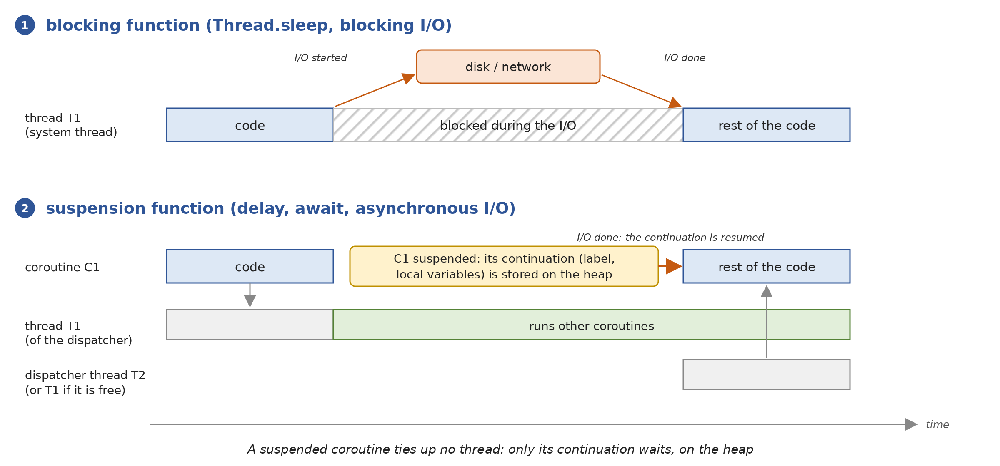

9. Asynchrone Programmierung mit Coroutinen
Das vorherige Kapitel hat Threads eingeführt: Sie können mehrere Codeabschnitte „gleichzeitig“ ausführen, synchronisieren und Aufgaben über einen Executor ([ExecutorService]) einem Thread-Pool zuweisen. Dieses Kapitel behandelt ein verwandtes, aber eigenständiges Problem: wie man ein Programm schreibt, das viel wartet (auf die Festplatte, das Netzwerk oder eine Datenbank), ohne während dieser Wartezeiten Threads zu blockieren.
In diesem Kapitel weicht Kotlin am stärksten von Java ab. Der Java-Kurs hat zwei Lösungen vorgestellt: die Klasse [CompletableFuture<T>], deren Verhalten über Callback-Methoden erweitert wird, und die virtuellen Threads von Java 21, die es erlauben, blockierenden Code zu schreiben, ohne Systemthreads zu blockieren. Beide Werkzeuge stehen in Kotlin weiterhin zur Verfügung (es sind Klassen des JDK), und wir werden auf sie zurückkommen. Kotlin bietet jedoch eine eigene Lösung: Coroutinen:
- Die Sprache enthält nur ein einziges Schlüsselwort, [suspend], das eine Suspend-Funktion kennzeichnet: eine Funktion, die mitten in ihrer Ausführung pausieren, den ausführenden Thread freigeben und später an derselben Stelle mit denselben Werten der lokalen Variablen fortgesetzt werden kann;
- der Compiler wandelt jede Suspend-Funktion in eine „Zustandsmaschine“ um, die pausieren und fortsetzen kann; wir werden sehen, wie;
- Alles andere stellt eine Bibliothek bereit, kotlinx.coroutines: Coroutinen starten ([launch], [async]), auf sie warten ([join], [await]), ohne Blockierung warten ([delay]), die Threads wählen, die sie ausführen (die Dispatcher), sie abbrechen, ihre Dauer begrenzen und Werte zwischen ihnen austauschen ([Flow], [Channel]).
Der resultierende Code liest sich von oben nach unten wie sequenzieller Code: Er entspricht den C#-Schlüsselwörtern [async] / [await], die die Leser des ursprünglichen Kurses kennen, plus einem Konzept, das weder C# noch Java (außer in einer Vorstufe) bietet: strukturierte Nebenläufigkeit, die Coroutinen in einem Baum organisiert, in dem jeder Knoten auf seine Kinder wartet, sie abbricht und ihre Fehler empfängt.
Coroutinen sind inzwischen im gesamten Kotlin-Ökosystem allgegenwärtig: auf Android, in Web-Frameworks (Ktor, Spring, das in seinen Controllern [suspend]-Funktionen akzeptiert), in HTTP-Clients und in Datenbanktreibern. Die folgenden Kapitel verwenden sie für den Zugriff auf Datenbanken und das Netzwerk.
Die Bibliothek kotlinx.coroutines ist nicht Teil der Standardbibliothek: Das Gradle-Projekt dieses Kapitels im Ordner [09-async] deklariert sie in seiner Datei [build.gradle.kts]:
- Zeile 17: die Abhängigkeit von der Bibliothek kotlinx.coroutines, Version 1.11.0. Das Hauptpaket ist [kotlinx.coroutines];
- Zeilen 32–34: Wie in den vorherigen Kapiteln wird das auszuführende Programm über die Eigenschaft [main] angegeben: [gradlew -q run -Pmain=async01.Async01Kt];
- Zeilen 42–45: Die von Gradle gestarteten Programme schreiben ihre Ausgabe in UTF-8, damit Zeichen mit Akzenten unter Windows korrekt angezeigt werden (Kapitel 2).
Die Programme dieses Kapitels sind wie üblich in Paketen organisiert, die nach ihnen benannt sind: [src/main/kotlin/async01/Async01.kt], [src/main/kotlin/async02/Async02.kt] … Viele davon messen Zeiten mit [System.nanoTime()]: Die angezeigten Millisekunden schwanken von einem Lauf zum anderen und von einem Rechner zum anderen (die Beispiele wurden auf einem Rechner mit zwei Prozessoren ausgeführt). Entscheidend sind die Größenordnungen: 1 Sekunde oder 10 Sekunden, 300 ms oder 0 ms. Die erste Verwendung von Coroutinen in einem Programm lädt die Klassen der Bibliothek, was die ersten Messungen oft um einige zehn Millisekunden verlängert.
9.1. Warum Asynchronität
9.1.1. Operationen, die warten
Ein Programm erledigt zwei Arten von Arbeit:
- Rechenaufgaben, die den Prozessor beanspruchen: eine Liste sortieren, eine Steuer berechnen, einen Text analysieren;
- Ein-/Ausgabe (E/A), die im Wesentlichen darin besteht, auf ein Gerät zu warten: eine Datei von der Festplatte lesen, eine Anfrage an einen Webserver senden und auf dessen Antwort warten, eine SQL-Abfrage auf einem Datenbankserver ausführen.
Die Größenordnungen sind sehr unterschiedlich. Ein Prozessor führt einige Milliarden Befehle pro Sekunde aus. Ein Lesevorgang auf einer Festplatte (SSD) dauert etwa eine Zehntelmillisekunde; eine Hin- und Rückreise im lokalen Netzwerk dauert den Bruchteil einer Millisekunde; eine Hin- und Rückreise zu einem Server am anderen Ende des Landes dauert einige zehn Millisekunden; und eine etwas komplexe SQL-Anfrage kann manchmal mehrere Sekunden dauern. Während dieser Wartezeiten hätte der Prozessor Millionen von Befehlen ausführen können.
Wenn ein Programm mit einer blockierenden Funktion eine Zeile über eine Netzwerkverbindung liest, ist der Thread, der dieses Lesen ausführt, blockiert: Er tut nichts, existiert aber weiterhin. Ein „klassischer“ JVM-Thread – heute als „Plattform-Thread“ bezeichnet – ist ein Thread des Betriebssystems: Er belegt Speicher (seinen Stack, in der Größenordnung von einem Megabyte), ist dem System bekannt und steht vor allem nicht mehr für andere Aufgaben zur Verfügung. In einem kleinen Konsolenprogramm, das jeweils nur eine Sache erledigt, ist das kein Problem. In zwei Situationen ist es dagegen ein viel größeres Problem:
- in einem Server: Jeder Client, der von einem blockierten Thread bedient wird, bindet diesen Thread. Hat der Thread-Pool des Servers N Threads und führen alle N Threads eine blockierende Operation aus, bleibt kein Thread für einen neuen Client übrig. Ein moderner Server verarbeitet Tausende gleichzeitiger Anfragen: Das ist möglich, weil seine Warteoperationen keine Systemthreads binden;
- in einer grafischen Benutzeroberfläche: Ein einzelner Thread – der UI-Thread (der Hauptthread einer Android-App, der „Event Dispatch Thread“ von Swing, der „JavaFX Application Thread“) – verarbeitet Klicks und zeichnet Fenster neu. Wird er durch einen Download blockiert, friert das Fenster ein; unter Android fordert das System den Benutzer schließlich sogar auf, die App zu schließen.
Asynchronität bedeutet, die E/A-Operation zu starten, den Systemthread während ihrer Ausführung freizugeben (die Hardware und das Betriebssystem benötigen ihn nicht für die Datenübertragung) und die Arbeit nach Abschluss der Operation fortzusetzen, gegebenenfalls in einem anderen Thread. Die virtuellen Threads von Java erreichen dies auf JVM-Ebene: Ein blockierter virtueller Thread wird von seinem Trägerthread getrennt, der in der Zwischenzeit andere virtuelle Threads ausführt. Kotlin-Coroutinen erreichen dies auf der Ebene des kompilierten Codes: Eine wartende Coroutine wird suspendiert, das heißt, ihr Zustand (wo sie stehen geblieben ist, und ihre lokalen Variablen) wird in einem Heap-Objekt namens Continuation gespeichert, und der Thread, der sie ausgeführt hat, geht zurück an seinen Pool:

- In [1]führt der Systemthread T1 eine blockierende Funktion aus; er bleibt blockiert, bis die E/A abgeschlossen ist;
- In [2]ruft die Coroutine C1 eine Suspend-Funktion auf, die die E/A startet; die Coroutine wird suspendiert: Ihre Continuation wird auf dem Heap gespeichert, und der Thread T1, der sie ausgeführt hat, kann sofort andere Coroutinen ausführen. Wenn die E/A abgeschlossen ist, wird die Continuation von einem freien Thread T2 (das könnte auch T1 sein) fortgesetzt, und C1 setzt ihre Ausführung unmittelbar nach dem Aufruf der Suspend-Funktion fort, als wäre nichts geschehen.
Das Programm [Async01.kt] misst den Unterschied bei 100 Operationen, die jeweils eine Sekunde warten (das Warten simuliert E/A). Es verwendet Anweisungen, die wir später in diesem Kapitel erklären ([runBlocking], [launch], [delay]): Hier interessieren uns vor allem die Ergebnisse.
Ergebnisse:
Kommentare:
- Zeilen 19–25: Die einfachste Lösung – ein Plattform-Thread pro Operation. Die Funktion [thread { … }] aus [kotlin.concurrent] (Kapitel 8) erzeugt und startet einen Thread; [List(NB_OPERATIONS) { … }] erstellt die Liste der 100 Threads. Jeder Thread führt [Thread.sleep(1000)] aus: Er ist eine Sekunde lang blockiert. Die 100 Wartevorgänge laufen gleichzeitig ab, und der gesamte Vorgang dauert genau eine Sekunde (Zeile 4 der Ergebnisse), jedoch um den Preis von 100 zusätzlichen Systemthreads: Die JVM zählt 106 (Zeile 3). Bei 10 000 Operationen wären 10 000 Systemthreads nötig;
- Zeilen 27–34: Die Operationen werden einem Pool von 10 Threads zugewiesen ([Executors.newFixedThreadPool(10)]), einer für Berechnungen vernünftigen Größe. Hier führen diese Threads jedoch keine Berechnungen aus – sie warten untätig. Die Operationen warten in Gruppen von 10 auf einen freien Thread, und der gesamte Vorgang dauert … zehn Sekunden (Zeile 6). Das nennt man „Thread-Pool-Starvation“, den häufigsten Fehler in Servern, die Thread-Pools mit blockierender E/A mischen. Ein [ExecutorService] ist [AutoCloseable] (Java 19): Die Funktion [use] ruft am Ende des Blocks seine Methode [close()] auf, die neue Aufgaben ablehnt und auf den Abschluss der bereits übergebenen wartet ([use] übernimmt dieselbe Rolle wie [try] mit einer Java-Ressource);
- Zeilen 36–43: ein virtueller Thread pro Operation. Der Code der Aufgabe ist derselbe wie in Schritt 1: ein blockierendes [Thread.sleep(1000)]. Ein blockierter virtueller Thread blockiert jedoch keinen Systemthread. Die 100 Wartevorgänge dauern zusammen eine Sekunde (Zeile 8), und die JVM hat nur 10 Systemthreads (Zeile 7): ihre Servicethreads und die beiden Trägerthreads, einen pro Prozessor. Dies ist die Lösung aus dem Java-Kurs;
- Zeilen 45–53: eine Coroutine pro Operation. [runBlocking { … }] führt einen Codeblock als Coroutine auf dem Thread aus, der es aufruft (hier der Thread [main]), und gibt die Kontrolle erst am Ende dieser Coroutine und aller von ihr gestarteten Coroutinen zurück. Innerhalb des Blocks [launch { delay(1000) }] startet eine neue Coroutine, die eine Sekunde wartet: [delay] ist eine Suspend-Funktion, die die Coroutine suspendiert, ohne den Thread zu blockieren. Die 100 Coroutinen werden vom einzigen Thread [main] ausgeführt: Während sie warten, schuldet er ihnen nichts und führt die anderen aus. Die JVM hat weiterhin 10 Threads (Zeile 9): keinen mehr als im vorherigen Schritt. Der gesamte Vorgang dauert etwas mehr als eine Sekunde (Zeile 10); die zusätzliche Zeit stammt vom Laden der Bibliotheksklassen, das bei dieser ersten Verwendung erfolgt;
- Zeile 50: Um die Anzahl der Threads auf halber Strecke zu messen, wartet auch die Haupt-Coroutine mit [delay]. Mit [Thread.sleep]würde sie den Thread [main]blockieren, der als einziger die 100 Coroutinen ausführt: Sie könnten erst nach Ende dieses Wartens starten. Wir kommen auf diesen entscheidenden Unterschied zwischen [delay] und [Thread.sleep] zurück;
- Zeilen 55–62: einhunderttausend Coroutinen, weiterhin ausschließlich vom Thread [main] ausgeführt, ohne zusätzliche Threads (Zeile 11). Eine suspendierte Coroutine ist lediglich eine kleine Menge von Heap-Objekten mit jeweils einigen Dutzend Bytes: Es kann Hunderttausende davon geben. Das Erzeugen der 100 000 Coroutinen und ihrer Timeouts dauert selbst etwas (einige hundert Millisekunden auf dem Beispielrechner, daher die Zeit in Zeile 12); 100 000 Plattform-Threads könnte man dagegen auf den meisten Rechnern schlicht nicht erzeugen;
- Zeile 75: [ManagementFactory.getThreadMXBean().threadCount] gibt die Anzahl der lebenden Plattform-Threads der JVM zurück. In Kotlin wird die Java-Methode [getThreadCount()] als Eigenschaft [threadCount] behandelt;
- Die Funktion [thread] und ihre Executors verwenden [Thread.sleep] direkt: Kotlin kennt keine geprüften Ausnahmen (Kapitel 3), sodass die [InterruptedException] , die [Thread.sleep] auslösen könnte, nicht abgefangen werden muss, wie es die Methode [waitFor] im Java-Programm tat.
Merken wir uns die Lektion: Um zu warten, darf man keine Systemthreads blockieren. Asynchronität macht E/A nicht schneller; sie erlaubt es, viele E/A-Operationen gleichzeitig mit wenigen Threads zu bewältigen und die Threads, die die Anwendung braucht, verfügbar zu halten. Kotlin bietet zwei Ansätze: gewöhnlichen blockierenden Code zu schreiben, der von virtuellen Threads ausgeführt wird (Schritt 3, wie in Java), oder Suspend-Funktionen zu schreiben, die von Coroutinen ausgeführt werden (Schritte 4 und 5). Dieses Kapitel konzentriert sich auf den zweiten Ansatz.
9.1.2. Mehrere aufeinanderfolgende Modelle
Die Plattformen haben mehrere Möglichkeiten geboten, Code zu schreiben, der wartet, ohne zu blockieren. Die ältesten findet man noch in bestehendem Code, und Kotlin – das Java-Bibliotheken direkt verwendet – arbeitet neben ihnen: Es ist nützlich, sie zu erkennen.
Modell | Erscheinungsjahr | Prinzip |
Threads und Executors | Java 1.0 (1996), Java 5 (2004) | ein Thread pro Operation oder ein Thread-Pool ([ExecutorService]). [submit] gibt ein [Future<T>] zurück, das das künftige Ergebnis repräsentiert, aber dieses Ergebnis erhält man nur, indem man blockierend mit [get()] wartet. |
Callback-Methoden | Java 7 (NIO.2, 2011), JavaScript | Eine Operation wird gestartet, indem ihr ein Objekt oder eine Callback-Funktion übergeben wird ([CompletionHandler] aus NIO.2), die am Ende der Operation von einem Thread aus einem Pool aufgerufen wird. |
komponierbare Futures | Java 8 ([CompletableFuture], 2014), Promises aus JavaScript | ein Objekt, das die laufende Operation repräsentiert und dessen Folgeschritte mit Methoden zusammengesetzt werden ([thenApply], [thenCompose], [exceptionally] …); reaktive Bibliotheken (Project Reactor, RxJava) beruhen auf denselben Ideen. |
[async] / [await] | C# 5 (2012), gefolgt von JavaScript, Python, Rust … | [async]-Methoden, die eine Task zurückgeben ([Task<T>] in C#); [await] suspendiert die Methode, bis die Task abgeschlossen ist, ohne den Thread zu blockieren. Der Compiler wandelt die Methode in eine Zustandsmaschine um. |
Kotlin-Coroutinen | Kotlin 1.3 (2018) | Funktionen wie [suspend] werden vom Compiler in Zustandsmaschinen umgewandelt, und die Bibliothek kotlinx.coroutines stellt strukturierte Nebenläufigkeit bereit. Aufrufe von Suspend-Funktionen enthalten keine Schlüsselwörter: Der Code hat die Form von sequenziellem Code. |
Virtuelle Threads | Java 21 (2023) | Gewöhnlicher blockierender Code, der von virtuellen Threads ausgeführt wird: Die JVM gibt den Systemthread während des Wartens frei. |
Callback-Methoden haben einen Nachteil: Der Code wird in Stücke zerlegt. Was sich natürlich als „verbinden, dann lesen, dann anzeigen“ liest, wird zu einer Funktion, die die Verbindung startet, einer Callback-Funktion, die das Lesen startet, und einer weiteren Callback-Funktion, die die Daten anzeigt; Variablen müssen zwischen diesen Funktionen geteilt werden, Ausnahmen werden an verschiedenen Stellen abgefangen, und eine einfache Schleife („lesen, solange Daten vorhanden sind“) wird zu einer Callback-Funktion, die sich rekursiv selbst aufruft. Komponierbare Futures machen diese Zerstückelung lesbarer, indem sie die Schritte verketten; Coroutinen beseitigen sie vollständig: Asynchroner Code hat die Form von synchronem Code. Der Unterschied zu virtuellen Threads besteht darin, dass der Compiler – nicht die JVM – den Code an den Wartepunkten aufteilt.
Das Programm [Async02.kt] implementiert denselben TCP-Client mit beiden Extremmodellen: zuerst mit den Callback-Methoden von NIO.2, dann mit einer Coroutine. Es enthält außerdem einen kleinen Server, der von einem Thread ausgeführt wird und zwei Clients beantwortet (die Netzwerkprogrammierung wird in Kapitel 12 ausführlich behandelt; vorerst genügt es zu wissen, dass ein Client sich mit dem Server verbindet und die Nachricht liest, die der Server ihm sendet).
1 2 3 4 5 6 7 8 9 10 11 12 13 14 15 16 17 18 19 20 21 22 23 24 25 26 27 28 29 30 31 32 33 34 35 36 37 38 39 40 41 42 43 44 45 46 47 48 49 50 51 52 53 54 55 56 57 58 59 60 61 62 63 64 65 66 67 68 69 70 71 72 73 74 75 76 77 78 79 80 81 82 83 84 85 86 87 88 89 90 91 92 93 94 95 96 97 98 99 100 101 102 103 104 105 106 107 108 109 110 111 112 113 | |
Ergebnisse:
Kommentare:
- Zeilen 23–36: der Server. Er lauscht auf Port 27500 des lokalen Rechners ([InetAddress.getLoopbackAddress()], also 127.0.0.1), nimmt nacheinander zwei Verbindungen an und sendet jedem Client nach einer halben Sekunde eine Willkommensnachricht. Er wird von einem Plattform-Thread namens [server] ausgeführt, der von der Funktion [thread] mit dem benannten Argument [name] erzeugt wird. Die Funktionen [use] schließen den [ServerSocket] und jeden bedienten [Socket] am Ende ihres Blocks;
- Zeilen 38–71: Der Client ist mit Callback-Methoden geschrieben:
- Zeile 40: Ein [AsynchronousSocketChannel] ist ein TCP-Kanal, dessen Operationen asynchron sind;
- Zeile 43: [connect] startet die Verbindung und gibt die Kontrolle sofort zurück (Zeile 3 der Ergebnisse). Seine letzten beiden Parameter sind ein beliebiges Objekt, das die Callback-Methode erhält (hier [Unit], da wir es nicht brauchen), und das Callback-Objekt, das die Schnittstelle [CompletionHandler<V, A>] implementiert, wobei [V] der Typ des Ergebnisses der Operation ist ([Void?] bei einer Verbindung, die nichts zurückgibt) und [A] der Typ des übergebenen Objekts. Kotlin erlaubt es, dieses Objekt mit einem Objektausdruck ([object : CompletionHandler<Void?, Unit> { … }]) an Ort und Stelle zu erzeugen, was den anonymen Klassen von Java entspricht. Seine Methode [completed] wird aufgerufen, wenn die Operation erfolgreich ist, und seine Methode [failed] , wenn sie fehlschlägt;
- Zeilen 44–48: Nach dem Verbindungsaufbau wird das Lesen mit
*[read]* gestartet, wobei ein zweites Callback-Objekt angegeben wird, das im ersten verschachtelt ist; - Zeilen 49–54: Das Callback-Objekt für das Lesen erhält die Anzahl der gelesenen Bytes, zeigt die Nachricht an, schließt den Kanal und gibt den Hauptthread frei;
- Zeile 71: Der Hauptthread hat nichts mehr zu tun. Damit das Programm nicht vor dem Ende des Austauschs beendet wird, wartet er auf ein Signal der letzten Callback-Methode: ein
*[CountDownLatch], der mit 1 initialisiert ist und dessen Methode*[await]*den aufrufenden Thread blockiert, bis ein anderer Thread seine Methode*[countDown]aufruft;
- Die Ergebnisse zeigen, dass die Callback-Methoden von anderen Threads als dem Hauptthread ausgeführt werden (Threads aus dem JVM-Pool für asynchrone Kanäle, benannt [InnocuousThread-N]). Die Verschachtelung der beiden Callback-Objekte macht den Code bereits schwer nachvollziehbar; bei drei oder vier aufeinanderfolgenden Operationen landet man bei der sogenannten „Callback-Hölle“;
- Zeilen 73–88: derselbe Client, geschrieben mit einer Coroutine, die von [runBlocking] gestartet wird. Der Code liest sich von oben nach unten wie synchroner Code: verbinden, lesen, anzeigen. Die Variablen sind gewöhnliche lokale Variablen; Fehler werden von einem einzigen [try / catch] behandelt; es gibt weder verschachtelte Callback-Objekte noch Signale zu verwalten. Dennoch wartet kein Thread auf die Verbindung oder die Antwort des Servers: [connectTo] und [readInto] sind Suspend-Funktionen, die die Coroutine während der Operation suspendieren;
- Zeilen 92–99: Die Funktion [connectTo] wandelt die Callback-Operation in eine Suspend-Funktion um. Es ist eine Erweiterungsfunktion (Kapitel 4) von [AsynchronousSocketChannel], gekennzeichnet mit [suspend]. Die Funktion [suspendCancellableCoroutine] aus kotlinx.coroutines suspendiert die Coroutine, die sie aufruft, und übergibt dem Block die Continuation dieser Coroutine – also das Objekt, mit dem sie fortgesetzt werden kann. Der Block startet die Operation mit einem Callback-Objekt, das am Ende der Operation die Coroutine fortsetzt: entweder indem es einen Wert zurückgibt ([resume]) oder indem es sie eine Ausnahme auslösen lässt ([resumeWithException]). Die Callback-Methode tut nichts weiter: Die gesamte Logik des Clients bleibt in der Coroutine;
- Zeilen 104–107: die Leseoperation, ebenfalls in eine Suspend-Funktion umgewandelt, die die Anzahl der gelesenen Bytes zurückgibt;
- Das Ende der Ergebnisse zeigt, dass die Coroutine sowohl vor als auch nach den beiden Suspendierungen im Thread [main] ausgibt: Die Callback-Methode, die von einem [InnocuousThread] ausgeführt wird, setzt die Continuation fort, diese wird aber an den Thread [runBlocking] weitergeleitet. Im Abschnitt über Dispatcher werden wir sehen, wie der Thread gewählt wird, der den Rest einer Coroutine ausführt.
Es ist wichtig, diesen Mechanismus zu verstehen, da er für alle Coroutinen gilt: Eine suspendierte Coroutine ist eine ausstehende Continuation, und eine Continuation ist nichts weiter als eine Callback-Methode – aber eine, die der Compiler selbst aus dem restlichen Code erzeugt. Nur selten muss man Funktionen wie [connectTo] selbst schreiben: Die Bibliothek kotlinx.coroutines und andere Kotlin-Bibliotheken stellen für die meisten Operationen Suspend-Funktionen bereit. Muss man jedoch eine API verwenden, die nur Callback-Methoden anbietet, [suspendCancellableCoroutine] erlaubt es, sie in wenigen Zeilen umzuwandeln.
9.2. Künftige Ergebnisse: CompletableFuture und Deferred
9.2.1. CompletableFuture aus Sicht von Kotlin
Ein [Future<T>] (Schnittstelle des Pakets [java.util.concurrent], Java 5) ist ein Objekt, das das Ergebnis – vom Typ [T] – einer laufenden oder abgeschlossenen Operation repräsentiert. Wir sind ihm im vorigen Kapitel begegnet: Das gibt die Methode [submit] eines Executors zurück. Man kann es abfragen (ist es beendet? war es erfolgreich?), abbrechen ([cancel]) und auf sein Ergebnis warten ([get]), aber sonst nichts: Das Ergebnis lässt sich nur verwenden, indem man einen Thread blockiert, bis es verfügbar ist.
Die Klasse [CompletableFuture<T>] (Java 8) implementiert [Future<T>] und fügt zwei wesentliche Funktionen hinzu:
- man kann sie selbst beenden, entweder mit einem Ergebnis ([complete]) oder mit einer Ausnahme ([completeExceptionally]);
- man kann ihr einen Folgeverarbeitungsschritt anhängen – eine Funktion, die ausgeführt wird, sobald das Ergebnis vorliegt ([thenApply], [thenAccept], [thenCompose] …) und die ein neues [CompletableFuture] erzeugt. So lassen sich Ketten von Operationen bilden, ohne dass Threads warten müssen.
Ein [CompletableFuture] ist kein Thread. Er kann einen Vorgang repräsentieren, der von einem Thread eines Executors ausgeführt wird (wie bei den mit [supplyAsync] erzeugten), aber viele werden von keinem Thread ausgeführt: Der von der Methode [sendAsync] des HTTP-Clients des JDK zurückgegebene wird abgeschlossen, wenn die Antwort des Servers eintrifft. Er ist ein Versprechen auf ein Ergebnis.
Kotlin-Programmierer begegnen [CompletableFuture] jedes Mal, wenn sie eine asynchrone Java-Bibliothek verwenden: den HTTP-Client des JDK, bestimmte Datenbanktreiber, Clients für Cloud-Dienste und so weiter. Sie müssen damit umgehen können – und vor allem wissen, wie man sie mit Coroutinen verbindet. Das Programm [Async03.kt] ist eine Kotlin-Version des Java-Programms, das die wichtigsten Wege zum Erzeugen, Abfragen und Abwarten eines [CompletableFuture] zeigte:
Ergebnisse:
Kommentare:
- Zeilen 10–17: [CompletableFuture.supplyAsync(supplier)] übergibt eine Funktion ohne Parameter (einen Java-[Supplier<T>]) an einen Executor und gibt sofort ein [CompletableFuture<T>] zurück, das dessen Ausführung repräsentiert. Dank der SAM-Konvertierung (Kapitel 7) wird ihm ein Kotlin-Lambda übergeben, das außerhalb der Klammern steht; sein letzter Ausdruck [sum] ist das Ergebnis. Ohne expliziten Executor führt der gemeinsame Pool der JVM, [ForkJoinPool.commonPool()], die Funktion aus;
- Zeile 19: Die Methode [state()] (Java 19) gibt den Status der Operation zurück: [RUNNING] (läuft), [SUCCESS] (erfolgreich abgeschlossen), [FAILED] (mit einer Ausnahme abgeschlossen) oder [CANCELLED] (abgebrochen). Dies sind die Konstanten der Aufzählung [Future.State];
- Zeile 21: [join()] wartet, bis die Operation beendet ist, und gibt ihr Ergebnis zurück. Das ist ein blockierendes Warten: Der aktuelle Thread (hier der Hauptthread, was ein kleines Konsolenprogramm nicht stört) wird angehalten;
- Zeilen 24–28: ein [CompletableFuture] , der über seinen Konstruktor „laufend“ erzeugt und nach 300 ms von einem Timer beendet wird ([completeOnTimeout], Java 9): Das ist das asynchrone Äquivalent zu [Thread.sleep(300)]. In Java hat eine Operation ohne Ergebnis den Typ [CompletableFuture<Void>]; in Kotlin kann man [CompletableFuture<Unit>] schreiben, dessen einziger Wert [Unit] ist;
- Zeilen 30–34: [completedFuture(42)] gibt einen bereits abgeschlossenen [CompletableFuture] mit dem Ergebnis 42 zurück, und [failedFuture(exception)] gibt einen [CompletableFuture] zurück, der bereits fehlgeschlagen ist; der Ergebnistyp des Letzteren lässt sich nicht aus seinem Argument ableiten und wird daher zwischen spitzen Klammern angegeben: [failedFuture<Int>(...)]. [resultNow()] und [exceptionNow()] (Java 19) geben das Ergebnis oder die Ausnahme einer abgeschlossenen Operation sofort zurück, ohne zu warten;
- Zeilen 36–41: Eine Operation, deren Funktion eine Ausnahme auslöst, endet im Zustand [FAILED]. Die Ausnahme wird im [CompletableFuture] gespeichert, und [join()] löst eine [CompletionException] aus, deren Ursache ([cause], die als Eigenschaft behandelte Methode [getCause()]) die ursprüngliche Ausnahme ist – hier eine [NumberFormatException] , ausgelöst durch ["abc".toInt()];
- Zeilen 44–48: [get()], die von der Schnittstelle [Future] geerbte Methode, wartet ebenfalls blockierend, verpackt die Ausnahme aber in eine [ExecutionException]. In Java ist dies eine geprüfte Ausnahme, die die Methode [main] abfangen oder deklarieren musste, ebenso wie die [InterruptedException], die [get()] auslösen kann. Kotlin kennt keine geprüften Ausnahmen: Man fängt nur die ab, die einen interessieren, und sonst nichts;
- Zeilen 51–56: eine Continuation. [f2.thenApply { 2 * 21 }] gibt einen neuen [CompletableFuture] zurück, der mit dem Ergebnis der Funktion abgeschlossen wird, sobald [f2] abgeschlossen ist: Das ergibt einen [CompletableFuture<Int>]. [thenAccept] hängt eine Funktion an, die das Ergebnis verbraucht, ohne eines zu erzeugen, und gibt einen [CompletableFuture<Void>] zurück (das ist eine Java-Methode: Ihr Rückgabetyp ist [Void], den Kotlin nicht in [Unit] umwandelt);
- Zeilen 58–60: die booleschen Methoden [isDone()] (abgeschlossen, gleichgültig wie), [isCompletedExceptionally()] (mit einer Ausnahme abgeschlossen oder abgebrochen) und [isCancelled()] (abgebrochen): Kotlin stellt sie als Eigenschaften dar: [isDone], [isCompletedExceptionally] und [isCancelled].
Der Java-Kurs widmete anschließend mehrere Seiten der Komposition von [CompletableFuture]: [thenCompose], [thenCombine], [allOf], [anyOf], [exceptionally], [handle], [orTimeout] … In Kotlin braucht man diese Methoden fast nie: Man muss lediglich in einer Coroutine mit der Suspend-Funktion auf den [CompletableFuture] warten, und zwar mit [await()], und den Rest wie gewöhnlichen Code schreiben. Die folgende Tabelle vergleicht die Methoden von [CompletableFuture] mit ihren Entsprechungen bei Coroutinen (alle diese Funktionen werden in diesem Kapitel behandelt):
[CompletableFuture] | Coroutinen |
[supplyAsync(f)], [runAsync(r)] | [async { … }] (gibt ein [Deferred<T>] zurück), [launch { … }] (gibt einen [Job] zurück) |
[completedFuture(v)], [complete(v)] | ein einzelner Wert; [CompletableDeferred] zum manuellen Abschließen einer Operation |
[thenApply(f)], [thenAccept(c)], [thenRun(r)] | [val v = operation()] gefolgt vom restlichen Code |
[thenCompose(f)] | zwei aufeinanderfolgende Aufrufe von Suspend-Funktionen |
[thenCombine(other, f)], [allOf(...)] | [async], gefolgt von [await] und [awaitAll] |
[anyOf(...)] | [select] |
[exceptionally(f)], [handle(f)], [whenComplete(c)] | [try / catch / finally] |
[orTimeout(...)], [completeOnTimeout(...)] | [withTimeout], [withTimeoutOrNull] |
[cancel] | [cancel], das die Operation tatsächlich beendet (kooperativer Abbruch) |
[join()], [get()] | [await()], [join()]: Wartevorgänge, die die Coroutine suspendieren, statt den Thread zu blockieren |
9.2.2. Deferreds
Das Coroutinen-Äquivalent eines [CompletableFuture<T>] ist die Schnittstelle [Deferred<T>] („deferred“, „aufgeschoben“) von kotlinx.coroutines: das künftige Ergebnis einer Coroutine. Man erhält es, indem man eine Coroutine mit der Funktion [async] startet und mit der Suspend-Funktion [await()] auf ihr Ergebnis wartet. Ein [Deferred<T>] ist ein Spezialfall von [Job], der Schnittstelle, die eine gerade laufende oder beendete Coroutine ohne Ergebnis repräsentiert; einen *[Job]* erhält man, indem man eine Coroutine mit der Funktion *[launch]* startet und mit der Suspend-Funktion *[join()]* auf ihr Ende wartet.
Das Programm [Async04.kt] zeigt das [Deferred], den [Job] und den Übergang vom Ersteren zum [CompletableFuture] und umgekehrt:
Ergebnisse:
Kommentare:
- Zeile 17: Die Funktion [main] ist ein Ausdruck [runBlocking { … }]. Der Block wird als Coroutine vom Thread [main] ausgeführt, und [runBlocking] gibt die Kontrolle erst am Ende dieser Coroutine zurück. Innerhalb dieses Blocks können Suspend-Funktionen ([await], [delay] …) aufgerufen und weitere Coroutinen ([async], [launch]) gestartet werden: Der Block erhält implizit einen [CoroutineScope] (einen Coroutine-Scope), dessen Erweiterungsfunktionen [async] und [launch] sind. Wir kommen im Abschnitt über strukturierte Nebenläufigkeit darauf zurück;
- Zeilen 18–25: [async] startet eine neue Coroutine, die den Block ausführt, und gibt sofort ein [Deferred<Long>] zurück, das ihr Ergebnis repräsentiert (der letzte Ausdruck des Blocks). Der Parameter [Dispatchers.Default] bewirkt, dass die Coroutine von einem Thread-Pool ausgeführt wird, der für Berechnungen vorgesehen ist: Ohne ihn würde die Coroutine vom Thread von [runBlocking] ausgeführt und erst starten, wenn die Haupt-Coroutine zum ersten Mal suspendiert wird;
- Zeile 27: Der Zustand einer Coroutine wird durch drei Eigenschaften von [Job] bestimmt: [isActive] (läuft), [isCompleted] (abgeschlossen, gleichgültig wie) und [isCancelled] (abgebrochen oder fehlgeschlagen, wie wir später sehen werden). Die Funktion [state] (Zeilen 74–75) zeigt sie an;
- Zeile 29: [await()] wartet, bis die Coroutine beendet ist, und gibt ihr Ergebnis zurück. Anders als [join()] bei einem [CompletableFuture] blockiert dieses Warten den Thread nicht: Es ist eine Suspend-Funktion, die die Haupt-Coroutine suspendiert; währenddessen steht der Thread [main] für andere Coroutinen zur Verfügung;
- Zeilen 32–38: eine Coroutine, die mit
*[delay]* 300 ms wartet und dann einen String zurückgibt: Während des Wartens ist kein Thread belegt; - Zeilen 40–46: [launch] startet eine Coroutine, die kein Ergebnis zurückgibt, und gibt einen [Job] zurück. [join()] suspendiert die Haupt-Coroutine, bis diese Coroutine beendet ist. [launch] / [Job] sind für Coroutinen das, was [runAsync] / [CompletableFuture<Void>] in der Welt von [CompletableFuture] sind;
- Zeilen 48–55: eine Coroutine, die fehlschlägt. [await()] löst die ursprüngliche Ausnahme erneut aus, eine [NumberFormatException], ohne sie in eine andere Ausnahme zu verpacken: Sie wird abgefangen, als wäre der Aufruf direkt erfolgt. Der angezeigte Zustand zeigt, dass ein fehlgeschlagener [Job] hat die Eigenschaft [isCancelled=true]: Für kotlinx.coroutines ist ein Fehlschlag eine Form von Abbruch. Der Block [supervisorScope] ist hier aus einem Grund erforderlich, den wir im Abschnitt über Ausnahmen sehen werden: Ohne ihn würde sich der Fehlschlag einer Coroutine auf die Coroutine übertragen, die sie gestartet hat, und das gesamte Programm beenden;
- Zeilen 59–61: Die Erweiterungsfunktion [CompletableFuture<T>.await()] aus dem Paket [kotlinx.coroutines.future] wartet auf einen [CompletableFuture] , indem sie die Coroutine suspendiert, ohne Threads zu blockieren. Sie dient als Brücke zwischen asynchronen Java-Bibliotheken und Coroutinen: Ein Aufruf [client.sendAsync(request, handler).await()] wartet auf die Antwort eines Webservers, wie wir später in diesem Kapitel sehen werden. Wenn der [CompletableFuture] fehlschlägt, löst [await()] die ursprüngliche Ausnahme aus, befreit von ihrer [CompletionException]-Hülle;
- Zeilen 63–65: Umgekehrt stellt [asCompletableFuture()] ein [Deferred] als [CompletableFuture] dar, zum Beispiel um es an Java-Code zu übergeben, der Coroutinen nicht unterstützt;
- Zeilen 66–71: Die Funktion [future { … }] startet eine Coroutine und gibt direkt einen [CompletableFuture] zurück: So schreibt man in Kotlin mithilfe von Coroutinen eine asynchrone Methode, die für Java-Code gedacht ist. In Zeile 71 wird dieser
*[CompletableFuture]mit*[thenApply]komponiert, und anschließend wird das Ergebnis mit*[await()]* abgewartet.
9.3. Suspend-Funktionen
9.3.1. suspend, launch, async und await
In Kotlin wird eine asynchrone Operation als Suspend-Funktion geschrieben: eine gewöhnliche Funktion, die mit dem Modifizierer *[suspend] deklariert ist und ihr Ergebnis direkt zurückgibt (statt eines *[CompletableFuture] oder *[Deferred]*, der es repräsentieren würde):
- [suspend fun makeCoffee()] für eine Operation, die kein Ergebnis zurückgibt;
- [suspend fun countSugars(number: Int): Int] für eine Operation, die eine ganze Zahl zurückgibt.
Eine Suspend-Funktion kann andere Suspend-Funktionen aufrufen, etwa [delay], [await] und [join], und bei diesen Aufrufen kann sie suspendiert werden. Sie kann nur von einer anderen Suspend-Funktion oder aus einer Coroutine heraus aufgerufen werden (dem Rumpf eines [runBlocking], eines [launch] oder eines [async]); der Compiler erzwingt dies. Das ist die einzige Einschränkung: Im Inneren schreibt man gewöhnlichen Code, mit Schleifen, [if], [try / catch] und lokalen Variablen.
Ein Aufruf einer Suspend-Funktion enthält keine Schlüsselwörter: Wo C# [await MakeCoffeeAsync()] schreibt, schreibt Kotlin [makeCoffee()]. Und dieser Aufruf ist sequenziell: Die nächste Zeile wird erst ausgeführt, nachdem die aufgerufene Funktion beendet ist. Um mehrere Operationen parallel auszuführen, muss man dies ausdrücklich angeben, indem man neue Coroutinen mit [launch] oder *[async]* startet. Das ist eine bewusste Entscheidung der Kotlin-Entwickler: Sequenzieller Code ist der Normalfall und sollte daher am einfachsten zu schreiben sein; Nebenläufigkeit sollte explizit sein.
Das Java-Tutorial kochte Kaffee und zählte Zuckerwürfel, zunächst mit [CompletableFuture] , verkettet mit [thenRun] und [thenCompose], dann mit blockierendem Code, der von virtuellen Threads ausgeführt wird. Das Programm [Async05.kt] kocht denselben Kaffee mit Suspend-Funktionen:
Ergebnisse:
Kommentare:
- Zeilen 34–41: Eine Scheinoperation, geschrieben als gewöhnliche Funktion: eine Ausgabe, ein Warten von einer Sekunde, eine Ausgabe, ein Warten von einer halben Sekunde, eine Ausgabe. [delay] ist die Suspend-Funktion von kotlinx.coroutines, die die angegebene Zeit wartet (in Millisekunden oder in Form einer Dauer [kotlin.time.Duration]: [delay(1.seconds)]), indem sie die Coroutine suspendiert. Das entspricht der Methode [delay] im Java-Programm, die einen von einem Timer beendeten [CompletableFuture] zurückgab; hier muss der Rest der Funktion jedoch nicht in einer Continuation geschrieben werden: Er folgt einfach auf den Aufruf;
- Zeilen 44–50: eine Operation, die eine ganze Zahl zurückgibt. Die Schleife ist eine echte Schleife, die bei jeder Iteration wartet: Das ist der einzige Unterschied zur Java-Version mit [CompletableFuture], in der die Schleife eine Kette von [thenCompose] aufbaute, statt Iterationen auszuführen (und in der für das Lambda eine Variable [number] – eine Kopie von [i] – nötig war);
- Zeile 16: [launch] startet eine neue Coroutine, die [makeCoffee()] ausführt, und gibt sofort einen [Job] zurück;
- Zeile 19: [async] startet eine neue Coroutine, die [countSugars(3)] ausführt, und gibt sofort ein [Deferred<Int>] zurück;
- Zeilen 22–23: Die Haupt-Coroutine wartet auf beide Operationen; während dieser Wartezeiten ist sie suspendiert;
- Die Zeilen 2 bis 12 der Ausgabe zeigen den Ablauf: Der Kaffee ist nach 1,5 Sekunden fertig – der Dauer der längeren der beiden Operationen –, und die Zuckerstücke wurden gezählt, während die Maschine sich aufheizte. Sie zeigen aber auch einen Unterschied zu den Java-Programmen: Die Maschine beginnt erst mit dem Aufheizen (Zeile 6) nach der letzten Ausgabe des Hauptprogramms (Zeile 5). Alle Coroutinen des Programms werden von einem einzigen Thread ausgeführt, [main], der zu [runBlocking] gehört: [launch] und [async] führen die von ihnen erzeugte Coroutine nicht sofort aus; stattdessen stellen sie sie in die Warteschlange des Threads, der sie ausführt, sobald er frei wird – das heißt, wenn die Haupt-Coroutine sich suspendiert (Zeile 22). Das nennt man kooperatives Multitasking: Eine Coroutine hält den Thread, bis sie sich selbst suspendiert;
- Zeilen 26–31: dieselben Funktionen, direkt aufgerufen, ohne eine Coroutine zu starten. Jeder Aufruf ist abgeschlossen, bevor der nächste beginnt: Der Kaffee wird gekocht (1,5 Sekunden), dann werden die Zuckerstücke gezählt (0,6 Sekunden), insgesamt also 2,1 Sekunden (Zeilen 13–20 der Ergebnisse). Das ist der richtige Ansatz, wenn eine Operation vom Ergebnis der vorherigen abhängt;
- Zeile 54: Jede Ausgabe zeigt die verstrichene Zeit und den Thread, der sie ausführt: Es ist immer [main].
Wir sehen dieselbe Qualität wie in der Java-Version mit virtuellen Threads: Die Funktionen sind gewöhnliche Funktionen, die man von oben nach unten liest; ob sie sequenziell (direkter Aufruf) oder nebenläufig ([launch], [async]) ausgeführt werden, wird beim Aufruf entschieden. Anders als bei virtuellen Threads genügte jedoch ein einziger Thread für das gesamte Programm, und es war nicht die JVM, die den Thread während des Wartens freigab, sondern die Suspend-Funktionen selbst.
9.3.2. delay und Thread.sleep
Eine Coroutine gibt ihren Thread nur frei, wenn sie sich selbst suspendiert – das heißt, wenn sie eine wartende Suspend-Funktion aufruft. Ruft sie eine blockierende Funktion auf ([Thread.sleep], einen Datei- oder Socket-Lesevorgang mit den Klassen aus [java.io], eine JDBC-Anfrage …), blockiert sie den Thread, der sie ausführt, und alle Coroutinen, die auf diesen Thread angewiesen sind, werden angehalten. Das Programm [Async06.kt] veranschaulicht den Unterschied:
Ergebnisse:
Kommentare:
- Zeilen 12–18: Zwei Coroutinen, die in einem
*[runBlocking]gestartet werden und jeweils drei durch*[delay(100)]*getrennte Schritte ausführen. Sie teilen sich den Thread*[main]: Während die eine wartet, arbeitet die andere; die Schritte wechseln sich ab (A1, B1, A2, B2 …), und die Wartezeiten der beiden Coroutinen überlappen sich: Der gesamte Vorgang dauert etwa 300 ms, plus die Zeit zum Laden der Bibliotheksklassen bei dieser ersten Verwendung (Zeile 8 der Ergebnisse). Die Funktion [runBlocking] gibt die Kontrolle erst zurück, wenn die beiden von ihr gestarteten Coroutinen beendet sind: Es muss kein Code geschrieben werden, um auf sie zu warten; - Zeilen 20–26: dieselben Coroutinen, die mit [Thread.sleep] warten. Jedes Warten blockiert den einzigen Thread [main]: Coroutine B kann erst starten, wenn A beendet ist, und der gesamte Vorgang dauert 600 ms (Zeilen 9–15). Die beiden Coroutinen sind keine echten Coroutinen mehr: Sie laufen nacheinander ab;
- Zeilen 28–34: Coroutinen, die blockierenden Code enthalten, werden an eine andere Gruppe von Threads übergeben, den Dispatcher [Dispatchers.IO], indem man ihn als Parameter an [launch] übergibt. Jede blockiert dann ihren eigenen Thread; sie laufen gleichzeitig, und der gesamte Vorgang dauert wieder 300 ms (Zeilen 16–22). Das ist der Standardansatz, wenn blockierender Code aus Coroutinen heraus aufgerufen werden muss (etwa eine Bibliothek, die keine Suspend-Funktionen anbietet, zum Beispiel JDBC); dies verursacht jedoch die Kosten eines Systemthreads pro laufender Operation. Die Threads dieses Dispatchers heißen [DefaultDispatcher-worker-N]: Warum, sehen wir im Abschnitt über Dispatcher;
- Zeilen 37–41: [workWithDelay] ruft [delay] auf: Das ist eine Suspend-Funktion;
- Zeilen 45–49: [workWithSleep] ruft keine Suspend-Funktion auf: Es ist eine gewöhnliche Funktion. Der Compiler erlaubt es, sie aus einer Coroutine aufzurufen, aber IntelliJ und IDEA markieren Aufrufe bekannter blockierender Funktionen ([Thread.sleep], die E/A-Operationen in [java.io]) innerhalb einer Suspend-Funktion oder einer Coroutine („Possibly blocking call in non-blocking context“).
Daraus ergibt sich die erste Regel der Programmierung mit Coroutinen: Eine Suspend-Funktion darf ihren Thread niemals blockieren. Muss sie blockierenden Code aufrufen, delegiert sie ihn an einen dafür vorgesehenen Dispatcher ([Dispatchers.IO], oder einen Dispatcher auf virtuellen Threads), und zwar mit [withContext], das wir in Kürze behandeln.
9.3.3. Was der Compiler tut: Continuations und Zustandsmaschinen
Wie kann eine Suspend-Funktion mitten in einer Schleife pausieren, ihren Thread freigeben und später an derselben Stelle mit denselben Werten der lokalen Variablen fortgesetzt werden, möglicherweise in einem anderen Thread? Der Java-Kurs hat erklärt, dass bei einem virtuellen Thread die JVM diese Arbeit leistet: Sie kopiert den Aufrufstack des virtuellen Threads auf den Heap und stellt ihn dort später wieder her. Die JVM weiß nichts von Kotlin-Coroutinen: Es ist der Compiler, der die Arbeit leistet, indem er jede Suspend-Funktion transformiert. Er tut dies in zwei Schritten.
Erster Schritt: Die Continuation wird zu einem Parameter. Jede [suspend]-Funktion erhält im Bytecode einen zusätzlichen Parameter vom Typ [Continuation<T>] (eine Schnittstelle aus dem Paket [kotlin.coroutines] der Standardbibliothek), wobei [T] der Typ des Rückgabewerts der Funktion ist. Eine Continuation repräsentiert „den nächsten Schritt der Berechnung“: was mit dem Ergebnis der Funktion geschehen soll. Sie hat eine Methode [resumeWith(result)], die die Ausführung mit einem Ergebnis oder einer Ausnahme fortsetzt (die Erweiterungsfunktionen [resume(value)] und [resumeWithException(e)] rufen sie auf), und eine Eigenschaft [context], den Coroutine-Kontext (darauf kommen wir zurück). Der Rückgabetyp der Funktion wird zu [Any?] ([Object] auf der JVM): Die Funktion gibt entweder ihr Ergebnis zurück, wenn sie ohne Warten abgeschlossen werden konnte, oder einen speziellen Wert, [COROUTINE_SUSPENDED], der bedeutet: „Ich bin suspendiert; meine Continuation wird später fortgesetzt.“ Das ist der „Continuation-Passing Style“ (CPS).
Zweiter Schritt: Der Funktionsrumpf wird zu einer Zustandsmaschine. Jeder Aufruf einer Suspend-Funktion im Rumpf ist ein möglicher Suspendierungspunkt. Der Compiler nummeriert diese Punkte (die Nummer heißt [label]) und speichert die Nummer des nächsten Fortsetzungspunkts sowie die lokalen Variablen, die eine Suspendierung überleben müssen, in einem für die Funktion spezifischen Continuation-Objekt. Der Funktionsrumpf wird zu einem [when] über diese Nummer: Er wird einmal am Anfang betreten (Label 0), danach einmal bei jeder Fortsetzung, und das Programm springt direkt zu der Stelle, an der es aufgehört hat.
Das Programm [Async07.kt] zeigt all dies. Es verwendet nur die Kotlin-Standardbibliothek (nicht kotlinx.coroutines), damit wir die grundlegenden Mechanismen sehen können: Es schreibt das Äquivalent von [delay] selbst und startet eine Coroutine eigenhändig.
Ergebnisse:
Kommentare:
- Zeile 15: ein Timer, also ein Executor mit einem einzigen Thread namens [timer], der eine Aktion nach einer Verzögerung ausführen kann ([ScheduledExecutorService], Kapitel 8);
- Zeilen 17–21: die Suspend-Funktion [pause], unser eigenes [delay]. Sie verwendet die Funktion [suspendCoroutine] der Standardbibliothek (deren abbrechbare Version von kotlinx.coroutines [suspendCancellableCoroutine] ist, das uns in [Async02.kt] begegnet ist): [suspendCoroutine] übergibt die Continuation der aktuellen Coroutine an den Block und suspendiert sie dann. Der Block weist den Timer an, die Continuation nach der angegebenen Verzögerung mit dem Wert [Unit] fortzusetzen;
- Zeilen 24–33: eine Suspend-Funktion mit zwei Suspendierungspunkten (den beiden Aufrufen von [pause]) und lokalen Variablen ([a], [b], [x], [y]), die die Suspendierungen überleben müssen;
- Zeilen 39–46: Eine Coroutine wird manuell gestartet. Die Funktion [Continuation(context) { … }] erzeugt eine Continuation aus einem Block, der das Ergebnis vom Typ [Result<Int>] erhält (ein Ergebnis oder eine Ausnahme; [getOrThrow()] gibt Ersteres zurück oder löst Letztere aus): Das ist die abschließende Continuation, die das Ergebnis anzeigt und den Hauptthread benachrichtigt. Der leere Kontext [EmptyCoroutineContext] bedeutet, dass nichts Bestimmtes angefordert wird – insbesondere kein Dispatcher. Die Erweiterungsfunktion [startCoroutine] startet ein Suspend-Lambda ([suspend () -> Int]) als Coroutine mit der abschließenden Continuation;
- Die Ergebnisse zeigen den Ablauf: [startCoroutine] führt die Funktion [addUp] im Thread [main] bis zum ersten Suspendierungspunkt aus (Zeilen 3 und 4) und gibt dann die Kontrolle zurück (Zeile 5): Die Funktion hat [COROUTINE_SUSPENDED] zurückgegeben. 300 ms später setzt der Thread [timer] die Ausführung fort: Die Funktion [addUp] wird unmittelbar nach dem ersten Aufruf von [pause] fortgesetzt, mit unverändertem Wert von [x] (Zeile 6), in einem anderen Thread als dem, in dem sie begonnen hat. Dann folgen die zweite Pause, das Ende der Funktion und die abschließende Continuation, die das Ergebnis 90 erhält (Zeile 9). Die Coroutinen von kotlinx.coroutines tun nichts anderes; die Dispatcher legen lediglich fest, welcher Thread jede Continuation ausführt.
Sehen wir uns an, was der Compiler erzeugt hat. Das Werkzeug [javap] des JDK zeigt die Member einer kompilierten Klasse an. Gradle legt die kompilierten Klassen im Ordner [build/classes/kotlin/main] des Projekts ab:
- Zeilen 6 und 7: Die Funktionen [pause] und [addUp] erhielten einen letzten Parameter vom Typ [Continuation], und ihr Rückgabetyp wurde zu [Object]. Der Continuation-Parameter von [addUp] hat denselben Typ wie sein Ergebnis: [Continuation<? super Integer>]. Aus Sicht von Java ist [addUp] eine gewöhnliche Methode, die aufgerufen werden könnte, indem man ihr eine Continuation übergibt (so kann Java-Code tatsächlich eine Suspend-Funktion aufrufen, wenn auch mit einigem Aufwand);
- Zeile 8: die Funktion [main] ohne Parameter, neben der Methode [main(String[])], die der Compiler für die JVM hinzufügt (Zeile 10), wie wir in Kapitel 3 gesehen haben.
Der Compiler hat außerdem eine Klasse namens [Async07Kt$addUp$1] erzeugt: Dies ist das Continuation-Objekt für die Funktion [addUp]:
- Zeile 3: Die Klasse erbt von [ContinuationImpl], einer internen Klasse der Standardbibliothek, die [Continuation] implementiert;
- Zeilen 4 bis 7: vier Ganzzahlfelder, [I$0] bis [I$3], in denen die Funktion vor jeder Suspendierung ihre lokalen Variablen [a], [b], [x], und [y] ablegt;
- Zeile 8: [result] erhält das Ergebnis (oder die Ausnahme), mit dem die Ausführung fortgesetzt wird;
- Zeile 9: [label], die Nummer des nächsten Wiederaufnahmepunkts;
- Zeile 11: [invokeSuspend], die bei der Wiederaufnahme aufgerufene Methode, die lediglich die Funktion [addUp] aufruft und ihr dieses Continuation-Objekt übergibt.
Schließlich zeigt die Option [-c] von [javap] den Bytecode der Methoden an. Hier zwei Ausschnitte aus dem Bytecode von [addUp] (der Befehl [javap -c -p -cp build/classes/kotlin/main async07.Async07Kt] zeigt den gesamten Bytecode an):
- Am Einstiegspunkt der Funktion (vor dem Ausschnitt) ruft der Bytecode das Continuation-Objekt der Funktion ab, falls es sich um eine Wiederaufnahme handelt, oder erzeugt eines, wenn es der erste Aufruf ist;
- [getCOROUTINE_SUSPENDED] liest den speziellen Wert [COROUTINE_SUSPENDED], der in einer lokalen Variablen gespeichert ist;
- [tableswitch] ist die Anweisung der JVM, die einer [when]-Operation auf einer Ganzzahl entspricht: Abhängig vom Wert des [label]-Feldes (0, 1 oder 2) springt die Ausführung zum Anfang der Funktion (Adresse 92), unmittelbar hinter den ersten Aufruf von [pause] (Adresse 153) oder unmittelbar hinter den zweiten (Adresse 242). Jeder andere Wert führt zu einem Fehler (Adresse 295).
- Adressen 112 bis 138: Vor dem ersten Aufruf von [pause] speichert die Funktion ihre lokalen Variablen [a], [b] und [x] (die Variablen 0, 1 und 3 der JVM) in den Feldern [I$0], [I$1] und [I$2] des Continuation-Objekts und setzt [label] auf 1;
- Adresse 141: der Aufruf von [pause(300)], wobei das Continuation-Objekt als letzter Parameter übergeben wird;
- Adressen 144 bis 152: Wenn [pause] den Wert [COROUTINE_SUSPENDED] zurückgegeben hat, gibt die Funktion ihrerseits [COROUTINE_SUSPENDED] an ihren Aufrufer zurück ([areturn]): So „wandert“ die Suspendierung den Aufrufstapel hinauf bis zu [startCoroutine], das die Kontrolle an den Thread [main] zurückgibt. Andernfalls wird die Ausführung direkt bei Adresse 178 fortgesetzt;
- Adressen 153 bis 170: Wiederaufnahmepunkt Nr. 1. Die Funktion kopiert die Felder des Continuation-Objekts in ihre lokalen Variablen und fährt dann fort, als wäre nichts geschehen.
Der Aufrufstapel der JVM bleibt daher nie erhalten: Bei jeder Suspendierung geben alle gerade suspendierten Funktionen [COROUTINE_SUSPENDED] zurück, und ihre Stack-Frames verschwinden; was erhalten bleiben muss, wird in den Continuation-Objekten gespeichert, die miteinander verkettet sind (jedes kennt die Continuation seines Aufrufers). Bei jeder Wiederaufnahme wird die Kette in umgekehrter Reihenfolge durchlaufen. Dies ist dasselbe Konzept wie die „Zustandsmaschine“, die der C#-Compiler für eine [async]-Methode erzeugt.
Um diesen Mechanismus vollständig zu verstehen, schreibt das Programm [Async08.kt] in Kotlin manuell eine vereinfachte Version dessen, was der Compiler für [pause] und [addUp] erzeugt hat:
Ergebnisse:
Kommentare:
- Zeilen 16–20: Die Funktion [pause] aus Sicht des Compilers: eine gewöhnliche Funktion (ohne [suspend]), die die fortzusetzende Continuation erhält, ihre Wiederaufnahme einplant und [COROUTINE_SUSPENDED] zurückgibt, eine Konstante aus dem Paket [kotlin.coroutines.intrinsics] der Standardbibliothek;
- Zeilen 23–29: das Continuation-Objekt von [addUp]. Es kennt die Continuation des Aufrufers ([caller]), die Parameter [a] und [b], die Nummer des nächsten Wiederaufnahmepunkts ([label]) und die lokalen Variablen [x] und [y]. Der Compiler seinerseits speichert die Parameter ebenfalls in Feldern und verwendet generische Felder wieder ([I$0]…);
- Zeile 30: Eine Continuation muss den Kontext ihrer Coroutine bereitstellen; wir verwenden den des Aufrufers;
- Zeilen 33–37: Wiederaufnahme. Der Timer ruft am Ende einer Pause [resumeWith] auf; die Methode ruft [addUp] erneut mit dem Continuation-Objekt auf, das weiß, wo fortzufahren ist. Läuft die Funktion bis zum Ende durch (sie gibt nicht [COROUTINE_SUSPENDED] zurück), wird ihr Ergebnis an die Continuation des Aufrufers weitergereicht: So „wandert“ das Ergebnis von einer Suspend-Funktion „zurück“ zu der Funktion, die sie aufgerufen hat;
- Zeilen 42–63: die Zustandsmaschine. Der Aufruf von [when] auf [state.label] leitet die Ausführung zum richtigen Abschnitt der Funktion. Jeder Abschnitt endet damit, dass er den nächsten Wiederaufnahmepunkt speichert und [pause] aufruft: Gibt [pause] den Wert [COROUTINE_SUSPENDED] zurück, gibt die Funktion ihn ebenfalls zurück; andernfalls (eine Suspend-Funktion kann bis zum Ende laufen, ohne zu suspendieren, zum Beispiel wenn das Ergebnis bereits bekannt ist) springt die Schleife [while (true)] direkt zum nächsten Abschnitt. Lokale Variablen werden aus dem Continuation-Objekt gelesen und in dieses geschrieben ([state.x], [state.y]);
- Zeilen 76–77: der erste Aufruf. Die Ergebnisse zeigen, dass [addUp] den Wert [COROUTINE_SUSPENDED] zurückgegeben hat (Zeile 5 der Ergebnisse); der Rest des Ablaufs findet im Thread [timer] statt, genau wie bei [Async07.kt].
Dieses Programm dient ausschließlich der Veranschaulichung: Sie würden diesen Code nie selbst schreiben. Es lassen sich jedoch zwei wesentliche Erkenntnisse mitnehmen:
- Eine suspendierte Coroutine kostet nur ihre Continuation-Objekte – einige Dutzend Byte pro aktiver Funktion –, statt eines Stacks von einem Megabyte wie bei einem Plattform-Thread: Dadurch wurden die 100.000 Coroutinen in [Async01.kt] möglich;
- Eine Suspendierung ist nur bei Aufrufen von Suspend-Funktionen möglich. Eine gewöhnliche Funktion kann nicht suspendiert werden: Blockiert sie (wie [Thread.sleep]), blockiert sie den Thread. Dies ist der grundlegende Unterschied zu virtuellen Threads, bei denen die JVM jeden in Java geschriebenen blockierenden Code suspendieren kann. Coroutinen hängen dagegen nicht von der JVM ab: Derselbe Mechanismus funktioniert mit Kotlin/JS in einem Single-Thread-Browser und mit Kotlin/Native.
9.3.4. Dispatcher: Welcher Thread führt den Rest des Codes aus?
Eine Coroutine ist kein Thread: Zu ihrer Ausführung werden Threads benötigt. Die Komponente, die entscheidet, welcher Thread eine Coroutine ausführt – beim Start und danach bei jeder Wiederaufnahme –, ist ihr Dispatcher, ein Element des Kontexts der Coroutine. Der Kontext einer Coroutine ([CoroutineContext]) ist eine kleine Menge von Elementen, die nach ihrem Typ indiziert sind und mit dem Operator [+] kombiniert werden: der Dispatcher ([CoroutineDispatcher]), der [Job] der Coroutine, ihr Name ([CoroutineName]) und ihr Exception-Handler ([CoroutineExceptionHandler], den wir später besprechen werden) … Ein Kontext wird als Parameter an [launch], [async], [runBlocking], oder [withContext] übergeben; die neue Coroutine erbt die Elemente des Kontexts ihres Scopes, mit Ausnahme der überschriebenen.
kotlinx.coroutines stellt vier Dispatcher bereit, die Eigenschaften des Objekts [Dispatchers] sind:
Dispatcher | Verwendete Threads |
[Dispatchers.Default] | Ein Thread-Pool für Berechnungen mit so vielen Threads, wie Prozessoren vorhanden sind (mindestens zwei). Dies ist der Dispatcher, der verwendet wird, wenn keiner angegeben ist und der Scope keinen hat. |
[Dispatchers.IO] | Ein Thread-Pool für blockierende Operationen (Dateien, JDBC, blockierende Sockets), der bis zu 64 Threads enthalten kann (oder mehr, wenn der Rechner mehr als 64 Prozessoren hat; die Systemeigenschaft [kotlinx.coroutines.io.parallelism] ändert dieses Limit). Er teilt seine Threads mit [Dispatchers.Default], was einen Thread-Wechsel beim Umschalten zwischen beiden vermeidet. |
[Dispatchers.Main] | Der GUI-Thread. Er existiert nur, wenn das entsprechende Modul zum Projekt hinzugefügt wird: [kotlinx-coroutines-android], [kotlinx-coroutines-swing], [kotlinx-coroutines-javafx]. |
[Dispatchers.Unconfined] | Kein bestimmter Thread: Die Coroutine startet im Thread des Aufrufers und wird nach einer Suspendierung in dem Thread fortgesetzt, der sie wieder aufgenommen hat. Er wird hauptsächlich für Tests und sehr spezielle Fälle verwendet. |
Zusätzlich zu diesen Dispatchern gibt es den von [runBlocking], der seine Coroutinen in dem Thread ausführt, der ihn aufgerufen hat, sowie die Dispatcher, die aus einem Java-Executor mit der Erweiterungsfunktion [asCoroutineDispatcher()] erstellt werden. Das Programm [Async09.kt] zeigt den Thread an, der jeden Codeabschnitt ausführt:
Ergebnisse:
Kommentare:
- Zeile 16: Die Systemeigenschaft [kotlinx.coroutines.debug] aktiviert den Debug-Modus für kotlinx.coroutines (sie muss gesetzt werden, bevor die Bibliothek erstmals verwendet wird; sie kann auch an die JVM übergeben werden: [-Dkotlinx.coroutines.debug]). In diesem Modus wird dem Namen des Threads, der eine Coroutine ausführt, während der Ausführung der Name der Coroutine (bereitgestellt durch ein [CoroutineName]-Element in ihrem Kontext oder standardmäßig [coroutine] ) und ihre Nummer angefügt: [main @main#1];
- Zeilen 18–22: Die Coroutine von [runBlocking] mit dem Namen [main] wird vom Thread [main] ausgeführt, sowohl vor als auch nach dem Warten: [runBlocking] verwandelt den aufrufenden Thread in eine Ereignisschleife, die seine Coroutinen ausführt (Zeilen 3 und 4 der Ergebnisse);
- Zeilen 24–26: eine Coroutine, die auf [Dispatchers.Default] gestartet wird und deren Kontext – gebildet mit [+] – aus einem Dispatcher und einem Namen besteht; sie wird von einem Thread mit dem Namen [DefaultDispatcher-worker-N] ausgeführt (Zeile 5);
- Zeilen 29–31: eine Coroutine, die auf [Dispatchers.IO] gestartet wird; sie wird von einem Thread mit demselben Namen ausgeführt (Zeile 6), da die beiden Dispatcher ihre Threads teilen;
- Zeilen 34–39: [withContext(context) { … }] ist eine Suspend-Funktion, die einen Block in einem anderen Kontext ausführt – hier einem anderen Dispatcher – innerhalb derselben Coroutine (die Nummer bleibt [#1]), dann zum ursprünglichen Dispatcher zurückkehrt und das Ergebnis des Blocks zurückgibt (Zeilen 7 und 8). Dies ist die bevorzugte Methode, um eine Berechnung auf [Dispatchers.Default] oder blockierenden Code auf [Dispatchers.IO] auszuführen, ohne die Form des Codes zu ändern: [val text = withContext(Dispatchers.IO) { file.readText() }];
- Zeilen 41–45: Bei [Dispatchers.Unconfined] startet die Coroutine im Thread [main] – dem Thread des Aufrufers (Zeile 9) – und wird nach [delay] in dem Thread fortgesetzt, der sie wieder aufgenommen hat: [kotlinx.coroutines.DefaultExecutor], dem Timer-Thread von kotlinx.coroutines, der die Timeouts verwaltet (Zeile 10). Dies ist das Verhalten der nicht asynchronen Continuations von [CompletableFuture] ([thenApply], [thenRun]), die von dem Thread ausgeführt werden, der die Operation abschließt;
- Zeilen 48–54: [Executors.newVirtualThreadPerTaskExecutor().asCoroutineDispatcher()] erstellt einen Dispatcher, der jeden Ausführungsabschnitt der Coroutine einem Java-Executor zuweist – hier einem Executor für virtuelle Threads. Der entstehende Dispatcher muss geschlossen werden, wenn er nicht mehr benötigt wird, daher [use]. Die Zeilen 11 und 12 zeigen, dass der Anfang und der Rest der Coroutine von zwei verschiedenen virtuellen Threads ausgeführt wurden (Nr. 25 und 28): Jede Wiederaufnahme ist eine neue Aufgabe, die dem Executor zugewiesen wird, der daher einen neuen virtuellen Thread erzeugt. Ein solcher Dispatcher ist nützlich, um blockierenden Code aus Coroutinen auszuführen, ohne durch die Obergrenze von 64 Threads von [Dispatchers.IO] eingeschränkt zu sein: Die virtuellen Threads werden von der JVM freigegeben, solange sie warten;
- Zeilen 57–60: zwei Coroutinen, die eine Meldung anzeigen und dann dreimal hintereinander warten, auf [Dispatchers.Default]. [joinAll] wartet auf das Ende mehrerer Coroutinen. Die Zeilen 13 bis 18 zeigen, dass eine Coroutine nicht an einen einzigen Thread gebunden bleibt: Coroutine B startet auf [worker-2] und wird auf [worker-1] fortgesetzt. In einer Coroutine darf man daher nie davon ausgehen, dass der Code nach einer Suspendierung von demselben Thread ausgeführt wird wie der Code davor. Eine praktische Folge: Eine Variable [ThreadLocal] (Kapitel 8) ist in einer Coroutine unzuverlässig; stattdessen werden die Informationen im Kontext der Coroutine gespeichert, der ihr überallhin folgt;
- Zeilen 72–75: Für einen virtuellen Thread – dessen Name standardmäßig leer ist – zeigen wir seine vollständige Beschreibung an, die seine Nummer, seinen Namen (hier den der Coroutine, hinzugefügt vom Debug-Modus) und seinen Host-Thread enthält.
Die Wahl des Dispatchers ist daher wichtig:
- [Dispatchers.Default] für Berechnungen. Eine Coroutine, die eine lange Berechnung durchführt, belegt einen seiner Threads, genau wie eine Aufgabe in einem Thread-Pool: Coroutinen beschleunigen keine Berechnungen; sie erleichtern die Nebenläufigkeit wartender Operationen (die gleichzeitige Behandlung vieler wartender Operationen), nicht die Parallelität von Berechnungen (die gleichzeitige Ausführung mehrerer Berechnungen auf mehreren Prozessoren, wie im vorherigen Kapitel besprochen);
- [Dispatchers.IO] oder ein Dispatcher für virtuelle Threads für blockierenden Code, zusammen mit [withContext];
- [Dispatchers.Main] in einer grafischen Anwendung: Eine im UI-Thread gestartete Coroutine kann die grafischen Komponenten aktualisieren, auf eine Operation warten (die anderswo mit [withContext] ausgeführt wird), ohne die Benutzeroberfläche einzufrieren, und dann die Benutzeroberfläche mit dem Ergebnis aktualisieren, ohne dass eine besondere Behandlung nötig wäre: Am Ende von [withContext] kehrt die Coroutine automatisch in den UI-Thread zurück. So funktioniert es in C#, wo die Continuation einer [async]-Methode in den Oberflächen-Thread zurückkehrt, und Java erlaubt dies nicht, ohne jeder Continuation ausdrücklich einen Executor zu übergeben.
Schließlich können Sie die Anzahl der Threads, die ein Dispatcher einer Gruppe von Coroutinen zuweist, mit [limitedParallelism(n)] begrenzen: [val base = Dispatchers.IO.limitedParallelism(10)] gibt einen Dispatcher zurück, der nie mehr als 10 Coroutinen gleichzeitig ausführt und dabei auf die Threads von [Dispatchers.IO] zurückgreift. Mit [limitedParallelism(1)] erhalten wir einen Dispatcher, der immer nur eine Coroutine gleichzeitig ausführt, was die sperrenfreie Manipulation gemeinsamen Zustands ermöglicht. Diese Funktion, die seit Version 1.9 von kotlinx.coroutines stabil ist, wird später in diesem Kapitel im Abschnitt über begrenzte Parallelität verwendet.
9.3.5. Das Hauptprogramm
Ein Programm, das Coroutinen verwendet, muss die erste Coroutine aus dem normalen Code der Funktion [main] starten und auf ihr Ende warten: Andernfalls würde die Funktion [main] sofort enden und das Programm mit ihr (Dispatcher-Threads sind Daemon-Threads, die die JVM nicht am Beenden hindern). Dafür gibt es zwei Möglichkeiten:
- [fun main() = runBlocking { … }], die wir seit Beginn des Kapitels verwenden: [runBlocking] blockiert den Thread [main] bis zum Ende der Coroutine und aller von ihr gestarteten Coroutinen. Dies ist der einzige Ort, an dem ein blockierendes Warten normal ist; Sie dürfen [runBlocking] niemals aus einer Coroutine oder einer Suspend-Funktion aufrufen, da es deren Thread blockiert. Wenn der letzte Ausdruck im Block nicht vom Typ [Unit] ist, schreiben wir [runBlocking<Unit> { … }]; andernfalls hätte die Funktion [main] einen anderen Rückgabetyp, und die JVM würde sie nicht mehr als Hauptprogramm erkennen;
- [suspend fun main()]: Die Funktion [main] kann selbst eine Suspend-Funktion sein; der Compiler übernimmt das Starten als Coroutine. Dies entspricht der Methode [static async Task Main()] in C#.
Das Programm [Async10.kt] führt einen Countdown mit einer Suspend-Funktion [main] durch:
Ergebnisse, zuerst mit und dann ohne Argument:
Kommentare:
- Zeile 7: eine [main] Suspend-Funktion, die über Gradle mit der Option [--args] übergebene Befehlszeilenargumente erhält;
- Zeile 9: [singleOrNull()] gibt das einzige Argument zurück oder [null] , wenn es nicht genau eines gibt, und [toIntOrNull()] wandelt es in eine Ganzzahl um oder gibt [null] zurück, wenn es keine Ganzzahl ist;
- Zeilen 10–13: Fehlt das Argument oder ist es fehlerhaft, endet das Programm mit [exitProcess(1)] (einer Funktion aus [kotlin.system], die [System.exit] aufruft). Die übergebene Ganzzahl ist der Exit-Code des Programms (0 für Erfolg, jeder andere Wert für einen Fehler), der von einem Skript geprüft werden kann: [echo %ERRORLEVEL%] unter Windows, [echo $?] unter Linux. Wenn ein Programm von Gradle gestartet wird und mit einem anderen Code als 0 endet, schlägt die Task [run] fehl, und Gradle zeigt dann nach denen des Programms eigene Fehlermeldungen an (diese sind hier nicht wiedergegeben). Der Typ von [exitProcess] ist [Nothing] (Kapitel 3): Der Compiler weiß, dass diese Funktion nie zurückkehrt, und geht daher davon aus, dass nach dem [if] die Variable [nbSeconds] nicht [null] ist; sie kann als [Int] verwendet werden (Smart Cast);
- Zeilen 20–24: der Countdown. Das Java-Programm musste dies per Rekursion umsetzen, wobei jeder Schritt mit [thenCompose] an den nächsten gekettet wurde; hier ist es eine gewöhnliche Schleife mit einem [delay] in jeder Iteration;
- Die Ergebnisse zeigen eine Besonderheit von [suspend fun main]: Ihre Coroutine hat keinen Dispatcher. Sie startet im Thread [main] und wird dann nach dem Warten in dem Thread fortgesetzt, der sie wieder aufgenommen hat – dem Timer-Thread von kotlinx.coroutines ([kotlinx.coroutines.DefaultExecutor]) –, genau wie bei [Dispatchers.Unconfined]. Das hat hier keine Folgen, ist aber ein Grund, [fun main() = runBlocking { … }] vorzuziehen, dessen Verhalten besser definiert ist, oder mit [withContext] im Rumpf der Funktion einen Dispatcher anzugeben.
9.4. Strukturierte Nebenläufigkeit
Der Java-Kurs schloss sein Kapitel mit einem Überblick über strukturierte Nebenläufigkeit ([StructuredTaskScope], in Java 25 noch in der Preview-Phase) ab. In Kotlin ist dies nicht nur eine Ergänzung: Es ist das Prinzip, auf dem die gesamte Bibliothek kotlinx.coroutines beruht, und Sie müssen es verstehen, bevor Sie weitermachen.
Die Idee ist einfach: Eine Coroutine kann nur innerhalb eines Scopes gestartet werden ([CoroutineScope]), und der Scope endet erst, wenn die von ihm gestarteten Coroutinen beendet sind. Die Funktionen [launch] und [async] sind Erweiterungsfunktionen von [CoroutineScope]: Sie können nicht an beliebiger Stelle aufgerufen werden, sondern nur innerhalb eines Scopes, etwa im Block eines [runBlocking], eines [launch] oder eines [async], deren Receiver ([this]) ein Scope ist. Jeder Scope hat einen [Job]; jede innerhalb des Scopes gestartete Coroutine hat ihren eigenen [Job], der zu einem Kind des [Job] des Scopes wird. Die Coroutinen eines Programms bilden so einen Baum, dessen Eltern-Kind-Beziehungen drei Konsequenzen haben:

- Ein Elternteil wartet auf seine Kinder: Ein
*[Job]endet erst, wenn sein eigener Code und alle seine Kinder beendet sind. Deshalb hat*[runBlocking]auf die in seinem Block gestarteten Coroutinen gewartet, ohne dass dafür Code geschrieben werden musste; - Der Abbruch wird nach unten weitergegeben: Der Abbruch eines [Job] bricht alle seine Kinder und deren Kinder ab;
- Ein Fehler wird nach oben weitergegeben: Schlägt ein Kind fehl (sein Code wirft eine Ausnahme), wird sein Elternteil abgebrochen, wodurch wiederum alle seine anderen Kinder abgebrochen werden, und die Ausnahme wird an den Elternteil weitergereicht, dann an dessen Elternteil, bis hin zur Wurzel oder zu einem Codeabschnitt, der sie behandelt.
Folglich kann keine Coroutine „vergessen“ werden: Sie lebt innerhalb eines Scopes, der nicht ohne sie enden kann; wenn sie fehlschlägt, erfährt es jemand; wenn die Operation, zu der sie gehört, aufgegeben wird, wird sie beendet. Dies ist dieselbe Disziplin wie bei Codeblöcken in der strukturierten Programmierung (ein Block endet nicht vor den Anweisungen, die er enthält), angewandt auf die Nebenläufigkeit – daher der Name.
Das Programm [Async11.kt] veranschaulicht diese drei Regeln:
Ergebnisse:
Kommentare:
- Zeile 14: Der letzte Ausdruck im Block ist ein [try]-Ausdruck, dessen Typ nicht [Unit] ist; daher wird der Typ des Ergebnisses von [runBlocking] angegeben, wie im vorigen Absatz erläutert;
- Zeilen 15–26: Eine [parent]-Coroutine startet zwei Kinder, die 300 bzw. 600 ms laufen, und zeigt dann die Anzahl ihrer Kinder an: Innerhalb des Blocks eines [launch] ist [coroutineContext] der Kontext der Coroutine, [coroutineContext.job] ist ihr [Job], und die Eigenschaft [children] des Letzteren ist die Sequenz seiner Kinder. Der Code des Elternteils endet sofort (Zeile 2 der Ergebnisse);
- Zeilen 28–30: 100 ms später ist der [Job] des Elternteils zusammen mit seinen beiden Kindern noch aktiv (Zeile 3): Ein [Job] , dessen Code beendet ist, wartet auf seine Kinder;
- Zeilen 31–32: [join()] gibt die Kontrolle erst 600 ms später zurück, wenn das zweite Kind beendet ist (Zeilen 4–6);
- Zeilen 77–83: Die Suspend-Funktion [prepareBreakfast] erledigt drei Zubereitungen gleichzeitig. Um Coroutinen zu starten, benötigt eine Suspend-Funktion einen Scope: [coroutineScope { … }] erstellt einen neuen Scope, dessen [Job] ein Kind der aufrufenden Coroutine ist, führt den Block aus, wartet, bis alle im Block gestarteten Coroutinen beendet sind, und gibt dann den Wert des Blocks zurück. Die Funktion [prepareBreakfast] erscheint von außen also als gewöhnliche sequenzielle Funktion: Wenn sie die Kontrolle zurückgibt, ist alles, was sie gestartet hat, abgeschlossen, einschließlich der Coroutine in Zeile 82, auf deren Ende niemand ausdrücklich wartet;
- Zeilen 34–37: der Funktionsaufruf; das Frühstück wird nach einer Sekunde serviert, der Dauer der längsten Zubereitung (Zeilen 7–13);
- Zeilen 39–54: Ein Elternteil startet zwei Kinder, die zehn Sekunden warten. Nach 200 ms [cancelAndJoin()] bricht den Elternteil ab und wartet, bis der Abbruch abgeschlossen ist: Beide Kinder werden mit ihm abgebrochen (Zeilen 14–16). Der [finally]-Block jedes Kindes wird ausgeführt, genau wie beim Verlassen eines Blocks durch eine Ausnahme: Im Abschnitt über den Abbruch werden wir sehen, dass genau das geschieht;
- Zeilen 56–73: In einem durch [coroutineScope] erstellten Scope wartet ein Kind zehn Sekunden, und sein Geschwisterkind schlägt nach 200 ms fehl. Der Fehler bricht den Scope ab, der wiederum das erste Kind abbricht (Zeile 17), und [coroutineScope] wirft die Ausnahme des fehlgeschlagenen Kindes (Zeile 18), die von einem gewöhnlichen [try / catch] um den Aufruf herum abgefangen wird.
Zwei Funktionen erstellen also einen Scope, mit zwei verschiedenen Verwendungen:
- [runBlocking] erstellt den Wurzel-Scope eines Programms aus normalem Code, indem es den Thread blockiert;
- [coroutineScope] erstellt einen Scope innerhalb einer Suspend-Funktion, ohne Threads zu blockieren. Dies ist die Standardmethode, um eine Suspend-Funktion zu schreiben, die mehrere Operationen nebenläufig ausführt: Von außen ist die Nebenläufigkeit nicht sichtbar.
Daraus folgt eine Stilregel: Eine Suspend-Funktion muss ihre gesamte Arbeit abgeschlossen haben, wenn sie die Kontrolle zurückgibt. Eine Funktion, die Coroutinen startet, die sie überdauern sollen, darf keine Suspend-Funktion sein, sondern muss eine Erweiterungsfunktion von [CoroutineScope] sein (wie [launch] selbst): [fun CoroutineScope.monitor(): Job]. Ihre Signatur zeigt somit, dass sie Coroutinen im Scope des Aufrufers startet. Später in diesem Kapitel werden wir sehen, dass die Bibliothek auch Scopes anbietet, deren Kinder voneinander unabhängig sind ([supervisorScope]), und wie man einen Scope erstellt, der für eine Anwendungskomponente spezifisch ist. Am Ende des Kapitels wird die strukturierte Nebenläufigkeit von Kotlin mit der von Java verglichen.
9.5. Sequenzielle und nebenläufige Ausführung
9.5.1. async und awaitAll
Wie das Kaffeebeispiel gezeigt hat, ist ein Aufruf einer Suspend-Funktion sequenziell, und um mehrere Operationen gleichzeitig auszuführen, muss man sie ausdrücklich in Coroutinen starten. Der Zeitpunkt, zu dem eine Operation gestartet wird ([val d = async { operation() }]), und der Zeitpunkt, zu dem auf sie gewartet wird ([d.await()]), können somit getrennt werden, sodass dazwischen andere Operationen gestartet werden können. Das Programm [Async12.kt] vergleicht die beiden Ansätze anhand von Operationen, die eine Sekunde dauern:
Ergebnisse:
Kommentare:
- Zeilen 60–64: die simulierte Operation: eine Verzögerung von einer Sekunde, gefolgt von einer „Temperatur“, die aus der Länge des Städtenamens abgeleitet wird;
- Zeilen 14–21: Jede Operation wird direkt aufgerufen und ist daher beendet, bevor die nächste beginnt: 3 Sekunden (Zeile 2 der Ergebnisse). Die Funktion [measureTimedValue { … }] aus der Standardbibliothek ([kotlin.time]) führt den Block aus und gibt ein Objekt [TimedValue] zurück, das den Wert des Blocks und die Dauer seiner Ausführung enthält; dies ist eine Datenklasse, die in zwei Variablen zerlegt wird ([val (sequence, duration1) = …], Kapitel 3). Die Dauer ist eine [Duration], bei der [inWholeMilliseconds] die Anzahl der Millisekunden darstellt. Da der Block ein [inline]-Block ist, können darin Suspend-Funktionen aufgerufen werden;
- Zeilen 23–28: Die drei Operationen werden mit [async] in drei Coroutinen gestartet und dann abgewartet. Sie laufen gleichzeitig: eine Sekunde statt drei (Zeile 3). Die Reihenfolge der [await]-Aufrufe ist unerheblich: Der erste wartet auf das Ende der ersten Operation, während die anderen ihre bereits oder fast beendet vorfinden;
- Zeilen 32–35: der Fall einer Liste von Operationen. [cities.map { city -> async { … } }] startet eine Coroutine pro Stadt und erzeugt eine Liste von [Deferred<Int>]; die Erweiterungsfunktion [awaitAll()] für eine Collection von [Deferred] wartet auf alle und gibt die Liste ihrer Ergebnisse zurück, in der Reihenfolge der Operationen (nicht in der Reihenfolge, in der sie beendet wurden). Die sechs Operationen zusammen dauern eine Sekunde (Zeile 4). Verglichen mit der Java-Version ([allOf] auf einem Array von [CompletableFuture], gefolgt von einer Continuation, die die Ergebnisse mit [join] einsammelt) ist der Code unkompliziert;
- Zeilen 39–43: dasselbe mit einer blockierenden Funktion ([readTemperatureBlocking], Zeilen 67–69), ausgeführt auf [Dispatchers.IO]: Jede Operation blockiert einen Thread dieses Dispatchers; alle sechs zusammen dauern eine Sekunde (Zeile 5);
- Zeilen 45–49: Bei 100 blockierenden Operationen wird die Grenze von 64 Threads von [Dispatchers.IO] deutlich: 64 Operationen, dann die restlichen 36, insgesamt zwei Sekunden (Zeile 6). Dies ist dieselbe Thread-Starvation, die wir bereits beim Pool mit 10 Threads in [Async01.kt] erlebt haben, nur in größerem Maßstab;
- Zeilen 51–56: dieselben 100 blockierenden Operationen auf einem Dispatcher für virtuelle Threads: eine Sekunde (Zeile 7), da blockierte virtuelle Threads keine System-Threads belegen. Der Parameter [virtuals] von [use] ist der Dispatcher, der als Kontext an [async] übergeben wird.
Die letzten beiden Schritte zeigen, wie sich Coroutinen und virtuelle Threads ergänzen: Coroutinen für Code, der mit Suspend-Funktionen geschrieben ist, und virtuelle Threads – über einen Dispatcher –, um eine große Menge aus Java geerbten blockierenden Codes aus Coroutinen heraus auszuführen.
9.5.2. Die zuerst abgeschlossene Operation: select
Die Funktion [select] (Paket [kotlinx.coroutines.selects]) suspendiert die Coroutine, bis eines von mehreren Ereignissen eintritt, und gibt den diesem Ereignis zugeordneten Wert zurück. Jedes mögliche Ereignis ist eine Klausel: [onAwait] für das Ende eines [Deferred] (die Klausel erhält dessen Ergebnis), [onJoin] für das Ende eines [Job], [onReceive] für das Eintreffen eines Werts in einem Channel … Es ist das Äquivalent zu [CompletableFuture.anyOf] mit einem typisierten Ergebnis. Das Programm [Async13.kt] verwendet es auf drei Arten:
Ergebnisse:
Kommentare:
- Zeilen 62–70: Der simulierte Server antwortet nach der angegebenen Zeit. Wird die Coroutine, die ihn abfragt, während des Wartens abgebrochen, wirft [delay] eine [CancellationException]: Wir fangen sie ab, um den Abbruch zu signalisieren, und werfen sie dann erneut (im Abschnitt über den Abbruch werden wir sehen, warum dies unerlässlich ist). [kotlinx.coroutines.CancellationException] ist ein Alias für die Klasse [java.util.concurrent.CancellationException] des JDK; die tatsächlich geworfene Exception gehört zu einer davon abgeleiteten internen Klasse der Bibliothek, [JobCancellationException];
- Zeilen 17–21: Drei Spiegelserver werden abgefragt; sie enthalten alle dieselben Informationen und antworten unterschiedlich schnell, jeder in einer Coroutine;
- Zeilen 23–26: Der [select]-Block deklariert für jede Abfrage eine [onAwait]-Klausel; das Lambda jeder Klausel erhält das Ergebnis der Abfrage und gibt den Wert von [select] zurück. Klauseln können in einer Schleife deklariert werden, wie hier gezeigt. Das zuerst abgeschlossene [Deferred] setzt sich durch: Die erste Antwort trifft nach etwas mehr als 300 ms ein (Zeile 2 der Ergebnisse; die erste Verwendung von [select] lädt einige weitere Klassen); ihr Typ ist [String], ohne Typumwandlung, anders als bei [anyOf], das ein [Object] zurückgibt;
- Zeile 28: [select] hat die anderen Abfragen nicht gestoppt, die weiterlaufen: [awaitAll()] wartet darauf, dass sie alle Antworten anzeigen (Zeile 3);
- Zeilen 30–42: In den meisten Fällen sind die anderen Anfragen überflüssig geworden. Anders als ein [CompletableFuture] kann eine Coroutine tatsächlich beendet werden: [cancel()] bricht jede Anfrage ab (der Abbruch einer bereits abgeschlossenen Anfrage hat keine Wirkung), und [joinAll()] wartet darauf, dass die abgebrochenen Anfragen beendet sind. Die Zeilen 4 und 5 der Ergebnisse zeigen, dass die beiden ausstehenden Anfragen während des Wartens unterbrochen wurden; sie verbrauchen keine Ressourcen mehr;
- Zeilen 44–59: ein klassischer Anwendungsfall: ein Wettlauf gegen ein Zeitlimit. Die Klausel [onJoin] des [Job] [timer], der 500 ms wartet, gibt [null] zurück; wenn er gewinnt, hat die Operation zu lange gedauert und wird abgebrochen (Zeilen 7–9). Der Typ von [answer] ist [String?]: [select] gibt entweder die Antwortzeichenfolge oder [null] zurück. Kotlinx.coroutines bietet für diesen Fall einen einfacheren Weg: die Funktion [withTimeoutOrNull], die später beschrieben wird.
9.5.3. Ergebnisse nach ihrem Eintreffen verarbeiten
Oft möchte man die Ergebnisse mehrerer Operationen verarbeiten, sobald sie vorliegen, ohne auf die langsamste zu warten. Der Java-Kurs tat dies auf zwei Arten: indem an jedes [CompletableFuture] eine Continuation angehängt wurde oder indem die Aufgaben an einen [ExecutorCompletionService] delegiert wurden, der die [Future] in der Reihenfolge ihres Abschlusses liefert. Mit Coroutinen gibt es ebenfalls zwei Möglichkeiten: das Ergebnis in der Coroutine zu verwenden, die es erzeugt hat, oder die Ergebnisse über einen Channel ([Channel]) weiterzugeben, eine Warteschlange zwischen Coroutinen. Das Programm [Async14.kt] verarbeitet fünf „Dateien“, von denen jede zwischen 100 und 900 ms Verarbeitungszeit benötigt, mit beiden Methoden:
Ergebnisse:
Kommentare:
- Zeilen 36–39: die simulierte Verarbeitung einer Datei, die die angegebene Zeit benötigt;
- Zeilen 14–21: Jede Verarbeitung wird in einer eigenen Coroutine gestartet, die ihr Ergebnis anzeigt, sobald es vorliegt: Datei 3 (100 ms) wird zuerst angezeigt, Datei 0 (900 ms) zuletzt (Zeilen 2–6 der Ergebnisse). Dies entspricht der an jedes [CompletableFuture] angehängten Continuation, aber Verarbeitung und Anzeige werden nacheinander geschrieben: [display(process(...))]. Der [coroutineScope]-Block wartet, bis alle fünf Coroutinen beendet sind; er ersetzt das [allOf] im Java-Programm. Die Funktion [forEachIndexed] durchläuft die Liste [durations] und liefert dabei sowohl den Index als auch das Element;
- Zeilen 23–33: Die fünf Coroutinen senden ihre Ergebnisse an einen Channel ([Channel<String>]) mithilfe der Suspend-Funktion [send]; die Haupt-Coroutine empfängt sie einzeln mit der Suspend-Funktion [receive()], die auf das nächste verfügbare Ergebnis wartet. Sie empfängt sie also in der Reihenfolge, in der die Verarbeitungen abgeschlossen werden (Zeilen 8–12): Dies entspricht dem [CompletionService] von Java, ohne Threads zu blockieren. Ein durch [Channel<String>()] erzeugter Channel hat keinen Puffer: Jedes [send] wartet darauf, dass eine Coroutine den Wert empfängt (dies ist ein „Rendezvous“). Channels werden später in diesem Kapitel ausführlich besprochen;
- In beiden Fällen dauert der gesamte Vorgang 900 ms – die Dauer der längsten Operation – und jedes Ergebnis wird so früh wie möglich verarbeitet. Der erste Ansatz eignet sich, wenn jedes Ergebnis unabhängig von den anderen verarbeitet werden kann; der zweite eignet sich, wenn ein einziger Codeabschnitt alle empfangen muss, zum Beispiel um sie zu aggregieren oder in einer grafischen Benutzeroberfläche anzuzeigen.
9.6. Ausnahmen in Coroutinen
9.6.1. try/catch und Weitergabe in der strukturierten Nebenläufigkeit
Bei [CompletableFuture] wird eine Ausnahme nicht an den Code zurückgeworfen, der die Operation gestartet hat: Sie wird in [CompletableFuture] gespeichert, wird entlang der Continuation-Kette weitergegeben und mit dafür vorgesehenen Methoden behandelt ([exceptionally], [handle], [whenComplete]). Bei Suspend-Funktionen ist die Sache viel einfacher: Eine Suspend-Funktion wirft Ausnahmen genau wie eine gewöhnliche Funktion, und sie werden mit [try / catch] abgefangen, auch wenn die Ausnahme nach einer Suspendierung in einem anderen Thread geworfen wurde. Es gibt nur eine neue Sache zu lernen: was geschieht, wenn eine Coroutine, die von [launch] oder [async] gestartet wurde, fehlschlägt. Das Programm [Async15.kt] untersucht die verschiedenen Fälle:
1 2 3 4 5 6 7 8 9 10 11 12 13 14 15 16 17 18 19 20 21 22 23 24 25 26 27 28 29 30 31 32 33 34 35 36 37 38 39 40 41 42 43 44 45 46 47 48 49 50 51 52 53 54 55 56 57 58 59 60 61 62 63 64 65 66 67 68 69 70 71 72 73 74 75 76 77 78 79 80 81 82 83 84 85 86 87 88 89 90 91 92 93 94 95 96 97 98 99 100 101 102 103 104 | |
Ergebnisse:
Kommentare:
- Zeilen 86–91: die getestete Funktion. Sie prüft zunächst ihren Parameter mit [require] (Kapitel 3), das eine [IllegalArgumentException] wirft, wenn die Bedingung falsch ist. Dann wartet sie 100 ms pro Zeichen des Textes und wandelt den gesamten Text um, was eine [NumberFormatException] auslöst, wenn er keine Zahl ist;
- Zeilen 14–19: der Normalfall. Die nach der Suspendierung von [toInt()] geworfene Ausnahme wird vom [try / catch] des Aufrufers unverändert abgefangen: Weder [CompletionException] noch [ExecutionException] noch die Methode [cause] wird benötigt, um zur ursprünglichen Ausnahme zurückzugelangen (Zeile 2 der Ergebnisse);
- Zeilen 22–28: [try] ist in Kotlin ein Ausdruck: Sein Wert ist der des [try]-Blocks oder der des [catch]-Blocks. Dies entspricht der Methode [exceptionally] von [CompletableFuture] (Zeile 3). Der Parameter [_] zeigt an, dass die Ausnahme nicht verwendet wird;
- Zeilen 30–39: [catch] wandelt einen Fehler in ein Ergebnis um (das Äquivalent zu [handle]), [finally] wird in allen Fällen ausgeführt (Äquivalent zu [whenComplete]): Zeilen 4 bis 7. Es werden die üblichen Werkzeuge verwendet;
- Zeilen 42–46: In Java konnte eine Methode, die ein [CompletableFuture] zurückgibt, auf zwei Arten fehlschlagen – indem sie beim Aufruf eine Ausnahme wirft (Parametervalidierung) oder indem sie eine fehlgeschlagene Operation zurückgibt –, und der Aufrufer musste auf beides vorbereitet sein. Eine suspendierbare Funktion kann nur auf eine Weise fehlschlagen: indem sie eine Ausnahme wirft (Zeile 8);
- Zeilen 49–58: Vier Lesevorgänge werden mit
*[async]innerhalb eines*[coroutineScope]*-Scopes gestartet und mit*[awaitAll()]*abgewartet. Der Lesevorgang für ["two"] schlägt nach 300 ms fehl. Nach den Regeln der strukturierten Nebenläufigkeit bricht der Fehlschlag eines Kindes seinen Elternteil, den Scope und damit alle seine anderen Kinder ab: Der Lesevorgang für ["four"], der 400 ms dauern sollte, wird abgebrochen. [coroutineScope] wirft dann die Ausnahme des fehlgeschlagenen Kindes (Zeile 9). Zeile 55 wird nie ausgeführt: [awaitAll()]* wirft die Ausnahme ebenfalls; - Zeile 61: Jedes [Deferred] hat sein Ergebnis behalten, das die Funktion [outcome] (Zeilen 94–100) durch den Aufruf von [await()] untersucht: Bei einer abgeschlossenen Operation gibt [await()] sofort ihr Ergebnis zurück oder wirft ihre Ausnahme, und bei einer abgebrochenen Operation wirft es eine [CancellationException]. Die Zeilen 10 bis 13 der Ergebnisse zeigen zwei erfolgreiche Operationen (["1"] und ["3"], die vor dem Fehler abgeschlossen wurden), den Fehler und den Abbruch von ["four"]. Dies ist in den meisten Fällen das gewünschte Verhalten: Schlägt eine der für ein Ergebnis erforderlichen Operationen fehl, kann das Ergebnis nicht erzeugt werden, und es hat keinen Sinn, mit den anderen fortzufahren;
- Zeilen 63–76: eine klassische Falle. Die von [await()] geworfene Ausnahme wird abgefangen und durch einen Standardwert ersetzt, und der Code läuft weiter (Zeilen 14 und 15); aber der Fehlschlag des Kindes wurde bereits an seinen Elternteil weitergegeben, der abgebrochen wurde: Am Ende seines Blocks wirft [coroutineScope] die Ausnahme trotzdem (Zeile 16). Um zu verhindern, dass ein Fehlschlag den Elternteil beeinträchtigt, müssen Sie ihn entweder in der fehlschlagenden Coroutine abfangen ([async { try { readValue("six") } catch (e: NumberFormatException) { -1 } }]) oder einen Supervisor-Scope verwenden;
- Zeilen 79–82: [supervisorScope { … }] erstellt einen Supervisor-Scope: Wie [coroutineScope] wartet er auf alle seine Kinder und bricht sie ab, wenn er selbst abgebrochen wird, aber der Fehlschlag eines Kindes betrifft nur dieses selbst: Er bricht weder den Scope noch die anderen Kinder ab. Jeder Lesevorgang läuft bis zum Ende, und der Aufrufer untersucht das Ergebnis jedes einzelnen (Zeilen 17–20): Diesmal ist der Lesevorgang für ["four"] fehlgeschlagen, statt abgebrochen zu werden. Dies ist erforderlich, wenn die Operationen unabhängig sind: zum Beispiel die Anzeige der Temperaturen von sechs Städten, auch wenn eine davon nicht antwortet.
Der Java-Kurs kam zu dem Schluss, dass Ausnahmen in virtuellen Threads wie in gewöhnlichem Code behandelt werden, außer an der Grenze zwischen zwei Threads; dies gilt auch für Coroutinen, und die strukturierte Nebenläufigkeit löst das Grenzproblem: Der Fehlschlag einer Kind-Coroutine wird automatisch an die Eltern-Coroutine zurückgereicht.
9.6.2. Die vergessenen Coroutinen, CoroutineExceptionHandler, SupervisorJob und GlobalScope
Der Java-Kurs hat gezeigt, dass eine Ausnahme aus einer Operation, auf die niemand wartete, verloren ging, ganz ohne Meldung. In der strukturierten Nebenläufigkeit kann eine Coroutine nicht wirklich vergessen werden: Ihr Scope wartet auf sie, und in einem gewöhnlichen Scope wird ihr Fehlschlag an den Elternteil weitergegeben. Ein Supervisor-Scope bricht den Elternteil jedoch nicht ab, und es gibt Möglichkeiten, eine Coroutine außerhalb jeder Struktur zu starten: Was geschieht in diesem Fall mit den Ausnahmen? Das Programm [Async16.kt] zeigt dies:
Ergebnisse:
Kommentare:
- Zeilen 91–94: die von allen Fällen verwendete Operation, die nach 200 ms fehlschlägt;
- Zeilen 26–27: Wie im Java-Programm richten wir den Handler ein, der aufgerufen wird, wenn eine Ausnahme von keinem Code in einem Thread abgefangen wird. Ohne ihn gibt die JVM den Stacktrace der Ausnahme auf der Fehlerausgabe aus;
- Zeilen 18–20: Ein
*[CoroutineExceptionHandler]ist ein Kontextelement, das Ausnahmen empfängt, die keine Coroutine behandelt hat; es wird mit einem Lambda erstellt, das den Kontext der fehlgeschlagenen Coroutine und die Ausnahme entgegennimmt. [context[CoroutineName]] gibt das Element [CoroutineName] aus dem Kontext zurück, oder [null]* , falls keines existiert: Der Kontext wird als assoziatives Array verwendet, das nach dem Typ der Elemente indiziert ist; - Alle Coroutinen der Fälle 1 bis 5 werden in einem
*[supervisorScope]* gestartet: Der Fehlschlag einer Coroutine wird nicht an den Elternteil weitergegeben; daher muss sich jemand anderes darum kümmern; - Zeilen 31–36: Auf die Operation wird mit [await()] gewartet; ihre Ausnahme wird normal abgefangen (Zeile 2 der Ergebnisse);
- Zeilen 39–41: eine von [async] gestartete Coroutine, für die niemand [await()] aufruft. Ihre Ausnahme wird in [Deferred] gespeichert, das ignoriert wird: Sie geht verloren, genau wie die eines vergessenen [CompletableFuture], und nichts zeigt sie an. Eine mit [async] gestartete Coroutine ist dafür gedacht, abgewartet zu werden; wird ihr Ergebnis nicht benötigt, verwendet man [launch];
- Zeilen 43–45: Eine von [launch] gestartete Coroutine hat kein Ergebnis, in dem sie ihre Ausnahme speichern könnte. Wenn ihr Elternteil sie nicht behandelt (wie es in einem Supervisor-Scope der Fall ist), wird die Ausnahme an den [CoroutineExceptionHandler] des Kontexts weitergegeben und, falls es keinen gibt, an den Handler für nicht abgefangene Ausnahmen des Threads, der die Coroutine ausgeführt hat, hier [main] (Zeile 7). Der Thread wird jedoch nicht gestoppt: Er führt die anderen Coroutinen weiter aus;
- Zeilen 47–49: dieselbe Coroutine mit einem [CoroutineExceptionHandler] in ihrem Kontext: Dieser empfängt die Ausnahme (Zeile 8);
- Zeilen 51–56: der beste Weg, eine Operation zu starten, ohne auf ihr Ergebnis zu warten: Die Coroutine behandelt ihren eigenen Fehlschlag mit einem [try / catch] (Zeile 9);
- Zeilen 60–65: Das Programm setzt seine Arbeit fort; am Ende des Blocks wartet [supervisorScope] auf alle seine Kinder, auch auf die, die wir „vergessen“ glaubten;
- Zeilen 67–78: Eine Anwendungskomponente (ein Bildschirm, ein Service, eine Verbindung), die Coroutinen startet, die so lange bestehen sollen wie die Komponente selbst – und nicht nur für die Dauer eines Funktionsaufrufs –, benötigt einen eigenen Scope. Er wird mit der Funktion [CoroutineScope(context)] erstellt, normalerweise zusammen mit einem [SupervisorJob()], einem
*[Job]*, bei dem der Fehlschlag eines Kindes die anderen nicht beendet (das Äquivalent zu*[supervisorScope]für einen auf diese Weise erstellten Scope), einem Dispatcher und einem Exception-Handler. Die von [scope.launch { … }] gestarteten Coroutinen sind Kinder des [SupervisorJob]: Der Fehlschlag von [saver-f], der an den Handler übergeben wird (Zeile 13), hindert [counter] nicht daran, seine Arbeit fortzusetzen (Zeilen 12–15). Wenn die Komponente verschwindet, bricht [scope.cancel()] alles ab, was der Scope gestartet hat: Keine Coroutine überlebt ihre Komponente. So arbeiten die Scopes der Frameworks, etwa [viewModelScope] und [lifecycleScope]* unter Android; - Zeilen 80–86: [GlobalScope] ist ein globaler Scope ohne [Job], der während der gesamten Lebensdauer des Programms existiert. Eine von [GlobalScope.launch] gestartete Coroutine hat keinen Elternteil: Niemand wartet auf sie, niemand bricht sie ab, und ihre Ausnahme wird an den Handler des Threads weitergegeben, der sie ausgeführt hat (hier ein Thread von [Dispatchers.Default], dem Standard-Dispatcher von [GlobalScope]: Zeile 16). Die zweite Coroutine, die nach einer Sekunde eine Meldung anzeigen sollte, wird schlicht aufgegeben: [runBlocking] wartet nicht auf sie, und das Programm endet ohne sie (Zeile 17);
- Zeile 23: [GlobalScope] ist mit [@DelicateCoroutinesApi] annotiert: Seine Verwendung löst eine Compiler-Warnung aus, die in unserem Projekt mit der Option [allWarningsAsErrors] ein Fehler ist:
- Die Annotation [@OptIn(DelicateCoroutinesApi::class)] an der Funktion teilt dem Compiler mit, dass wir wissen, was wir tun, und lässt die Warnung verschwinden. Dieser „Opt-in“-Mechanismus wird von Kotlin-Bibliotheken verwendet, um heikle oder noch experimentelle APIs zu kennzeichnen.
Die Regel ist dieselbe wie in Java, aber die strukturierte Nebenläufigkeit macht sie nahezu automatisch: Jede Coroutine muss zu einem Scope gehören, der auf sie wartet, und ihr Fehlschlag muss behandelt werden – entweder von der Coroutine selbst, von ihrem Elternteil oder von einem [CoroutineExceptionHandler]. Wir vermeiden [GlobalScope], außer für seltene Coroutinen, die wirklich so lange leben müssen wie das Programm; stattdessen erstellen wir pro Komponente einen Scope, den wir am Ende ihrer Lebensdauer zerstören.
9.7. Abbruch und Timeouts
9.7.1. Kooperativer Abbruch
Eine lang laufende Operation muss abgebrochen werden können: Der Benutzer hat auf [Cancel] geklickt, ein Server-Client hat die Verbindung getrennt, ein Anwendungsfenster wurde geschlossen, oder ein Timeout wurde überschritten. Java verwendet dafür die Thread-Unterbrechung: [interrupt()] setzt ein Flag; blockierende Wartevorgänge werden unterbrochen, indem [InterruptedException] geworfen wird; und eine Berechnung muss das Flag selbst prüfen. Der Java-Kurs wies auch auf eine Falle hin: Die Methode [cancel] eines [CompletableFuture] unterbricht nichts, da ein [CompletableFuture] nicht weiß, welcher Thread für es arbeitet.
Coroutinen haben ihren eigenen Mechanismus, der ebenfalls kooperativ, aber in die Bibliothek integriert ist:
- Die Methode [cancel()] eines [Job] (oder eines [Deferred]) versetzt diesen in den Zustand „Abbruch läuft“; sie beendet die Coroutine nicht gewaltsam und lässt den Aufrufer auch nicht warten. [join()] wartet dann auf das Ende der Coroutine; [cancelAndJoin()] tut beides;
- Ist die Coroutine in einer der Suspend-Funktionen von kotlinx.coroutines suspendiert ([delay], [await], [join], [receive], [withContext]…), setzt diese Funktion die Coroutine sofort fort, indem sie eine [CancellationException] auslöst. Dasselbe gilt, wenn die Coroutine eine dieser Funktionen aufruft, während sie bereits abgebrochen ist. Alle diese Funktionen gelten als abbrechbar;
- Die Ausnahme wandert wie eine gewöhnliche Ausnahme den Aufrufstapel hinauf und führt dabei die [finally]-Blöcke und die [use]-Funktionen aus, wodurch die Ressourcen sauber freigegeben werden. Oben in der Coroutine angekommen, beendet sie diese im Zustand „abgebrochen“; dies ist kein Fehlschlag: Eine [CancellationException] wird nie an den Elternteil oder an Exception-Handler weitergegeben;
- Eine Coroutine, die Berechnungen durchführt, ohne je eine Suspend-Funktion aufzurufen, ist davon nicht betroffen: Sie muss ihren Zustand selbst prüfen, mit [isActive] (true, solange sie nicht abgebrochen ist), [ensureActive()] (das eine [CancellationException] auslöst, wenn sie abgebrochen ist) oder [yield()] (das den Thread anderen Coroutinen überlässt und dabei auf Abbruch prüft);
- Der Abbruch eines [Job] bricht seine Kinder ab, wie wir bei der strukturierten Nebenläufigkeit gesehen haben.
Das Programm [Async17.kt] bricht einen simulierten Download und eine simulierte Berechnung auf mehrere Arten ab:
1 2 3 4 5 6 7 8 9 10 11 12 13 14 15 16 17 18 19 20 21 22 23 24 25 26 27 28 29 30 31 32 33 34 35 36 37 38 39 40 41 42 43 44 45 46 47 48 49 50 51 52 53 54 55 56 57 58 59 60 61 62 63 64 65 66 67 68 69 70 71 72 73 74 75 76 77 78 79 80 81 82 83 84 85 86 87 88 89 90 91 92 93 94 95 96 97 98 99 100 101 102 103 104 105 106 107 108 109 110 111 112 113 | |
Ergebnisse:
Kommentare:
- Zeilen 84–95: Der simulierte Download erhält alle 300 ms einen Block. Er erfordert keine besonderen Maßnahmen, um abbrechbar zu sein: [delay] ist abbrechbar. Wir fangen [CancellationException] ab, um den Abbruch zu signalisieren, und werfen sie dann erneut: Eine abgefangene [CancellationException] muss immer erneut geworfen werden; andernfalls würde die Coroutine weiterlaufen, als wäre nichts geschehen, obwohl sie abgebrochen wurde (und jede abbrechbare Funktion, die sie anschließend aufruft, würde sofort eine neue Ausnahme auslösen). Aus demselben Grund ist Vorsicht geboten bei einem
***[catch (e: Exception)]**, das auch*[CancellationException]*abfängt, oder bei der Funktion der Standardbibliothek[runCatching]*, die alles abfängt; - Zeilen 19–26: Nach einer Sekunde bricht das Programm den Download mit
*[cancel()]ab und wartet dann mit*[join()]auf sein Ende. Der Download stoppt sofort, mitten im Warten auf den vierten Block (Zeilen 2–5 der Ergebnisse); eine abgebrochene und beendete Coroutine hat [isCancelled=true] und [isCompleted=true] (Zeile 6). Anders als bei [cancel] oder [CompletableFuture] wird die Operation selbst gestoppt, nicht nur das Warten auf ihr Ergebnis; - Zeilen 99–109: eine Milliarde Iterationen einer beliebigen Berechnung. Auf Anforderung prüft die Berechnung alle zehn Millionen Iterationen, ob ihre Coroutine noch aktiv ist: [currentCoroutineContext()] gibt den Kontext der aktuellen Coroutine zurück, und seine Erweiterungseigenschaft [isActive] zeigt an, ob der mit diesem Kontext verbundene [Job] aktiv ist. Wir hätten stattdessen [currentCoroutineContext().ensureActive()] schreiben können, was eine [CancellationException] auslöst, wenn die Coroutine abgebrochen ist;
- Zeilen 28–34: Die Berechnung wird auf [Dispatchers.Default] ohne Prüfung gestartet. Die Abbruchanforderung bei 300 ms (Zeile 7) hat darauf keine Wirkung: Sie läuft bis zum Ende (Zeile 8), und [cancelAndJoin()] wartet auf dieses Ende. [Job] befindet sich dennoch im Zustand „abgebrochen“ (Zeile 9);
- Zeilen 36–42: dieselbe Berechnung mit der Prüfung: Sie stoppt einige Millisekunden nach der Abbruchanforderung (Zeilen 10–12);
- Zeilen 44–57: Eine unendliche Berechnung wird gestartet, diesmal im Thread von [runBlocking], den sie mit der Haupt-Coroutine teilt. Ohne [yield()] würde sie den Thread ganz für sich behalten: Die Haupt-Coroutine könnte nach ihrem [delay(300)] nie fortgesetzt werden und könnte daher die Berechnung auch nicht abbrechen, und das Programm würde nie enden. [yield()] suspendiert die Coroutine und stellt sie wieder in die Warteschlange ihres Dispatchers, wodurch der Thread für andere Coroutinen frei bleibt; ist die Coroutine inzwischen abgebrochen worden, löst [yield()] eine [CancellationException] aus, die die Schleife beendet (Zeilen 13 und 14);
- Zeilen 59–81: Aufräumen einer abgebrochenen Coroutine in einem [finally]-Block. Das Schließen einer Verbindung kann den Aufruf einer Suspend-Funktion erfordern; eine abgebrochene Coroutine kann sich jedoch nicht mehr selbst suspendieren: Jede abbrechbare Funktion löst sofort eine [CancellationException] aus, wie das [delay(100)] im [finally]-Block zeigt (Zeile 18). Damit dennoch Code ausgeführt werden kann, der suspendiert, wird er mit [withContext(NonCancellable) { … }] ausgeführt: [NonCancellable] ist ein [Job] , der nie abgebrochen wird, und der Block läuft normal bis zu seinem Ende (Zeilen 19 und 20). Der Block muss kurz sein: Er verzögert den Abschluss des Abbruchs, auf den [cancelAndJoin()] wartet (Zeile 21).
Beachten Sie, dass der Abbruch keine abrupte Unterbrechung ist: Er ist eine Ausnahme, die an den Suspendierungspunkten geworfen wird und sich durch den Code zurückarbeitet, wobei sie die [finally]-Blöcke ausführt. Jeder mit abbrechbaren Suspend-Funktionen geschriebene Code lässt sich mühelos abbrechen; eine lange Berechnung muss regelmäßig [isActive] prüfen oder [ensureActive()] oder [yield()] aufrufen.
9.7.2. Mehrere Prozesse, mehrere Ergebnisse
Das Programm [Async18.kt] übernimmt das Java-Programm, das fünf Prozesse mit einer Dauer von 1 bis 5 Sekunden startete, von denen Prozess Nr. 3 eine Ausnahme wirft und Prozess Nr. 4 abgebrochen wird. Es verarbeitet jeden Prozess, sobald er beendet ist, unabhängig davon, wie er geendet hat, und weiß immer, um welchen Prozess es sich handelt:
Ergebnisse:
Kommentare:
- Zeilen 53–60: die Verarbeitung. Prozess Nr. 3 schlägt sofort fehl: Die Funktion [check] (Kapitel 3) wirft eine [IllegalStateException] , wenn ihre Bedingung falsch ist. Die anderen „schlafen“ [duration] Sekunden lang in Schritten von einer Sekunde mit [delay] (das abgebrochen werden kann) und geben ein Ergebnis zurück – eine Datenklasse ([ProcessingResult], Zeile 13) –, das die geplante und die tatsächliche Dauer enthält;
- Zeile 20: Die Prozesse sind unabhängig: In einem Supervisor-Scope bricht der Fehlschlag von Prozess Nr. 3 die anderen nicht ab;
- Zeile 21: Die fünf Prozesse werden mit [async] gestartet; die Liste der fünf [Deferred<ProcessingResult>] wird durch [List(5) { number -> … }] erstellt;
- Zeilen 22–25: Eine Coroutine bricht Prozess Nr. 4 nach 2,5 Sekunden ab, obwohl dieser noch 2,5 Sekunden Schlaf vor sich hat. Das Java-Programm benötigte dafür einen
*[ScheduledExecutorService]*; hier genügt eine Coroutine, die mit einem*[delay]* beginnt; - Zeile 30: [withIndex()] ordnet jeder Aufgabe ihre Nummer zu, in Form von [IndexedValue]-Objekten (einer Datenklasse mit zwei Eigenschaften, [index] und [value]), die in einer veränderlichen Liste der laufenden Prozesse gespeichert werden;
- Zeilen 33–36: Solange es laufende Prozesse gibt, wartet [select] auf den ersten, der endet, unabhängig davon, wie er endet: Die [onJoin]-Klausel eines [Job] wird ausgewählt, sobald er abgeschlossen ist – ob erfolgreich, erfolglos oder abgebrochen. Die Klausel gibt den [IndexedValue] des Prozesses zurück, der dann aus der Liste entfernt wird;
- Zeile 37: Die destrukturierende Zuweisung trennt die Nummer vom Prozess;
- Zeilen 39–46: Das Ergebnis der Verarbeitung wird mit [await()] untersucht, das die Ausführung nicht mehr blockiert: Es gibt das Ergebnis zurück, wirft die Ausnahme der Verarbeitung oder wirft eine [CancellationException], wenn sie abgebrochen wurde. Die Reihenfolge der [catch]-Aufrufe ist wichtig: [CancellationException] ist von [IllegalStateException] abgeleitet (sie ist eine Unterklasse im JDK), daher muss sie zuerst abgefangen werden. Das Abfangen einer
*[CancellationException]*ohne erneutes Werfen ist hier zulässig, da sie von einem anderen*[Job]*stammt – dem abgebrochenen Prozess – und nicht von der Coroutine, die sie abfängt; - Die Ergebnisse zeigen, dass Nr. 3 sofort fehlschlägt, dass die Nrn. 0, 1 und 2 nach 1, 2 bzw. 3 Sekunden enden und dass Nr. 4 nach 2,5 Sekunden abgebrochen wird. Das Java-Programm prüfte den Zustand der [Future] mit [switch] , um die Konstanten von [Future.State] zu untersuchen; mit Coroutinen wird das Ergebnis eines Prozesses ganz natürlich mit [try / catch] gelesen.
9.7.3. Die Dauer eines Wartens begrenzen: withTimeout und withTimeoutOrNull
Kotlinx.coroutines stellt zwei Suspend-Funktionen bereit, die die Dauer eines Codeblocks begrenzen:
- [withTimeout(timeout) { … }] führt den Block aus und gibt seinen Wert zurück; wird der Block nicht innerhalb des Zeitlimits abgeschlossen, wird er abgebrochen, und [withTimeout] löst eine [TimeoutCancellationException] aus (eine von [CancellationException] abgeleitete Klasse);
- [withTimeoutOrNull(timeout) { … }] tut dasselbe, gibt aber [null] zurück, statt eine Ausnahme zu werfen.
Das Timeout wird in Millisekunden oder als Dauer angegeben ([withTimeout(2.seconds)]). Das Programm [Async19.kt] demonstriert diese beiden Funktionen, ihre Grenzen (den blockierenden Code) und wie man zwei Abbruchbedingungen kombiniert:
Ergebnisse:
Kommentare:
- Zeilen 78–85: der simulierte Server, der seinen Abbruch signalisiert;
- Zeilen 19–24: Wir warten nicht länger als eine Sekunde auf eine Antwort. Nach einer Sekunde wird der Block abgebrochen: Die Operation stoppt tatsächlich (Zeile 2 der Ergebnisse), dann wirft [withTimeout] eine [TimeoutCancellationException] mit einer Meldung, die sich auf das Timeout bezieht (Zeile 3). Dies ist ein bedeutender Unterschied zur Methode [orTimeout] von [CompletableFuture], die das Warten aufgab, die Operation aber unnötigerweise weiterlaufen ließ;
- Zeilen 27–30: [withTimeoutOrNull] gibt [null] zurück, wenn das Timeout überschritten wird; der Elvis-Operator [?:] ersetzt dann [null] durch eine Standardantwort (Zeilen 4 und 5). Dies ist das Äquivalent zu [completeOnTimeout], aber kürzer, und auch hier wird die Operation tatsächlich beendet;
- Zeilen 32–39: die Grenze des kooperativen Abbruchs. Der auf eine Sekunde begrenzte Block führt eine blockierende Funktion ([queryBlocking], Zeilen 89–97) auf [Dispatchers.IO] aus, die drei Sekunden lang mit [Thread.sleep] schläft. Nach einer Sekunde wird die Coroutine zwar abgebrochen, aber nichts kann [Thread.sleep] stoppen: Die Funktion läuft bis zum Ende (Zeile 6), und erst bei der Rückkehr von [withContext], drei Sekunden später, wird [TimeoutCancellationException] ausgelöst (Zeile 7). Die Verzögerung hat keinen Zweck erfüllt;
- Zeilen 42–49: Damit der Abbruch einer Coroutine blockierenden Code stoppt, wird dieser mit [runInterruptible(dispatcher) { … }] ausgeführt: Die Funktion führt den Block auf dem angegebenen Dispatcher aus und unterbricht, wenn die Coroutine abgebrochen wird, den Thread, der ihn ausführt, mit der Java-Methode [interrupt()]. [Thread.sleep] löst dann [InterruptedException] aus (Zeile 8), die [runInterruptible] in [CancellationException] umwandelt. Dies schafft eine Brücke zwischen dem Abbruch von Coroutinen und der Thread-Unterbrechung: Die Operation stoppt nach einer Sekunde (Zeile 9). Das funktioniert nur für unterbrechbaren blockierenden Code ([Thread.sleep], die Wartevorgänge in [java.util.concurrent], die Channels in [java.nio]…);
- Zeilen 65–75: ein Prozess, der aus zwei Gründen gestoppt werden kann – wegen seines eigenen Timeouts oder wegen einer allgemeinen Stoppanforderung des Aufrufers. Beides tritt in Form einer Ausnahme auf: eine [TimeoutCancellationException] , die von [withTimeout] bei Ablauf des Timeouts ausgelöst wird, und eine [CancellationException] für den Abbruch der Coroutine durch den Aufrufer. Das Timeout ist ein normales Ergebnis der Verarbeitung, das in eine Meldung umgewandelt wird; der Abbruch dagegen wird signalisiert und dann erneut geworfen. Die beiden [catch]-Blöcke müssen in dieser Reihenfolge stehen, da [TimeoutCancellationException] von [CancellationException] abgeleitet ist;
- Zeilen 52–62: drei Prozesse, Kinder derselben Coroutine [all]. Für das allgemeine Beenden musste das Java-Programm ein zusätzliches [CompletableFuture] erstellen und eine Continuation anhängen, die jedes Warten abbrach; hier ist das allgemeine Beenden einfach der Abbruch des Elternteils, der seinerseits seine Kinder abbricht. Der Prozess [fast] endet normal (Zeile 10), der Prozess [slow] überschreitet sein Timeout von einer Sekunde (Zeilen 11 und 12), und der Prozess [medium], dem 2 Sekunden zugestanden wurden, wird bei 1.200 ms durch das allgemeine Beenden beendet (Zeilen 13–15).
9.8. Fortschritt melden
Eine lang laufende Operation muss oft ihren Fortschritt melden (ein Fortschrittsbalken, eine Prozentangabe). Am einfachsten übergibt man ihr eine Callback-Funktion , die Fortschrittsmeldungen erhält. In Java war dies ein [Consumer<T>]; in Kotlin ist es schlicht ein Funktionsparameter (Kapitel 7), [(Progress) -> Unit]. Die Operation ruft diese Funktion bei jedem Schritt auf; sie weiß nichts darüber, wie die Fortschrittsmeldungen angezeigt werden.
In einer grafischen Anwendung stellt sich die Frage der Threads: Grafische Komponenten dürfen nur vom UI-Thread aktualisiert werden. Mit Coroutinen ist die Antwort einfach: Wurde die Coroutine, die die Operation ausführt, auf *[Dispatchers.Main] gestartet, werden die Meldungen im UI-Thread ausgegeben, und die Callback-Funktion kann die Komponenten direkt aktualisieren; führt die Operation einen Teil ihrer Arbeit anderswo aus (mit [withContext(Dispatchers.IO)]), meldet sie ihre Ergebnisse außerhalb dieses Blocks, oder die Callback-Funktion kehrt mit [withContext(Dispatchers.Main)] in den Oberflächen-Thread zurück (sie ist dann selbst eine Suspend-Funktion vom Typ [suspend (Progress) -> Unit]). In einem Konsolenprogramm kann sie direkt ausgeben. Das Programm [Async20.kt] simuliert einen Kopiervorgang, den der Benutzer durch Eingabe von [Enter]* abbrechen kann:
Ergebnisse ohne Abbruch (die Standardeingabe ist geschlossen: [readlnOrNull()] gibt sofort [null] zurück):
Ergebnisse, wenn der Benutzer [Enter] während des Kopiervorgangs nach etwa eineinhalb Sekunden eingibt (die eingegebene leere Zeile erscheint nicht: Die Eingabe wurde dem Programm durch Umleitung seiner Standardeingabe zugeführt):
Kommentare:
- Zeile 11: eine Fortschrittsmeldung, eine Datenklasse, die den Prozentsatz und den Dateinamen enthält;
- Zeilen 31–39: die Operation, eine Suspend-Funktion. Ihr Parameter [progress] hat den Typ [((Progress) -> Unit)?]: eine Funktion, die ein [Progress] akzeptiert und nichts zurückgibt, oder [null] , wenn der Aufrufer keine Meldungen wünscht, was der Standardwert ist. Nach jeder Datei meldet sie ihren Fortschritt über [progress?.invoke(...)]: Der Aufruf von [?.] tut nichts, wenn [progress] gleich [null] ist (man kann nicht [progress?(...)] aufrufen: Man muss die Methode [invoke] des funktionalen Typs verwenden). Die Wartezeit von 300 ms mit [delay] macht die Operation abbrechbar;
- Zeilen 42–46: Anzeige eines Berichts: ein Balken aus 20 Zeichen, der mit [repeat] erzeugt wird. Die Funktionsreferenz [::display] (Zeile 16) ist die Callback-Funktion, die an die Operation übergeben wird;
- Zeile 16: Das Kopieren wird von einer Coroutine auf dem [runBlocking]-Thread ausgeführt;
- Zeilen 17–21: Ein Thread wartet darauf, dass der Benutzer [Enter] eingibt, und bricht dann das Kopieren ab. [readlnOrNull()] ist ein blockierendes Lesen von der Standardeingabe, das sich nicht abbrechen lässt. Es kann daher nicht in einer Coroutine im Gültigkeitsbereich von [runBlocking] ausgeführt werden: Die strukturierte Nebenläufigkeit würde [runBlocking] zwingen, auf das Ende dieser Coroutine zu warten – also darauf, dass der Benutzer etwas eingibt –, selbst nachdem das Kopieren abgeschlossen ist. Es wird in einem Thread ausgeführt, der von der Funktion [thread] mit [isDaemon = true] erzeugt wird: ein Daemon-Thread, den das Programm beim Beenden verwirft. Dies ist ein Fall, in dem Sie die strukturierte Nebenläufigkeit bewusst verlassen müssen; das geschieht mit einem expliziten Werkzeug (einem Daemon-Thread), nicht mit [GlobalScope]. Die Methode [cancel()] eines [Job] kann von jedem Thread aus aufgerufen werden;
- Zeilen 24–27: Das Programm wartet auf das Ende des Kopierens. Der Abbruch führt zu einer [CancellationException], die von [await()] ausgelöst wird. Wie in [Async18.kt] lässt sie sich abfangen, ohne sie erneut auszulösen, da sie aus dem Abbruch einer anderen Coroutine – der Kopieroperation – resultiert; ein Fehler der Kopieroperation würde sich dagegen bis zu [runBlocking] fortpflanzen und das Programm beenden.
Eine Callback-Funktion eignet sich für einfache Berichte. Im weiteren Verlauf dieses Kapitels wird ein allgemeineres Werkzeug zur asynchronen Erzeugung einer Wertefolge vorgestellt: der Stream ([Flow]): Eine Operation, die einen [Flow<Progress>] zurückgibt, meldet ihre Ergebnisse, sobald sie verfügbar sind, und der Aufrufer sammelt sie mit [collect] auf dem Dispatcher seiner Wahl.
9.9. Asynchrone Ein-/Ausgabe
9.9.1. Dateien
Ein-/Ausgabe ist der eigentliche Grund für Asynchronität. Für Dateien bietet das JDK zwei Klassenfamilien an, die Kotlin direkt verwendet:
- die „klassischen“, blockierenden Klassen: [Files], [BufferedReader], [BufferedWriter] und die Erweiterungsfunktionen, die Kotlin ihnen hinzufügt (Kapitel 5): [readLines], [readText], [useLines], [bufferedWriter], [writeText], [appendText] … In einem Coroutine-Programm werden sie auf dem Dispatcher [Dispatchers.IO] ausgeführt, der für blockierende Operationen vorgesehen ist, zusammen mit [withContext(Dispatchers.IO) { … }]: Die aufrufende Coroutine wird suspendiert – ohne ihren Thread zu blockieren –, während ein Thread des [IO]-Dispatchers die Operation ausführt;
- die Klasse [AsynchronousFileChannel] (Java 7), deren Operationen ein [Future] zurückgeben oder einen [CompletionHandler] aufrufen. Sie wird nur selten verwendet: Unter Linux führt sie tatsächlich blockierende Lesevorgänge in einem internen Thread-Pool der JVM aus, und ihre Schnittstelle ist umständlich. Sie wird mit [suspendCancellableCoroutine] für Coroutinen adaptiert, wie beim TCP-Client im Programm [Async02.kt].
Das Programm [Async21.kt] zeigt beide Familien, indem es aus dem Hauptthread die Datei mit den Steuerstufen liest, [TaxData.txt], die sich im Stammverzeichnis des Projekts befindet:
Jede Zeile enthält die Stufenschwelle, den Koeffizienten [coeffR] und den Koeffizienten [coeffN], getrennt durch das Zeichen [:] und mit Dezimalpunkt geschrieben (der Steuertarif ist der Tarif von 2004 für die Einkünfte des Jahres 2003, der für dieses Steuerjahr unverändert übernommen wurde). Das Programm läuft im Ordner [09-async] (dies ist das aktuelle Verzeichnis für [gradlew run]) und sucht seine Dateien im aktuellen Ordner. Die Datei [taxpayers.txt], die in der Übung am Ende des Kapitels verwendet wird, liegt am selben Ort.
1 2 3 4 5 6 7 8 9 10 11 12 13 14 15 16 17 18 19 20 21 22 23 24 25 26 27 28 29 30 31 32 33 34 35 36 37 38 39 40 41 42 43 44 45 46 47 48 49 50 51 52 53 54 55 56 57 58 59 60 61 62 63 64 65 66 67 68 69 70 71 72 73 74 75 76 77 78 79 80 81 82 83 84 85 86 87 88 89 90 91 92 93 94 95 96 97 98 99 100 101 102 103 104 105 106 107 108 109 | |
Ergebnisse:
Erläuterungen:
- Zeilen 47–57: Lesen mit einem [AsynchronousFileChannel], dargestellt als Suspend-Funktion, die den Dateiinhalt zurückgibt. Der Kanal ist ein [Closeable]: Die Funktion [use] (Kapitel 3) schließt ihn am Ende des Blocks, unabhängig vom Ergebnis, auch wenn die Coroutine abgebrochen wird. Dies ist dieselbe Technik wie im Programm [Async02.kt]: [suspendCancellableCoroutine] suspendiert die Coroutine und gibt die Kontrolle an den Block zurück; der Lesevorgang wird mit einem Callback-Objekt gestartet, das die Coroutine mit der Anzahl der gelesenen Bytes ([resume]) oder mit der Ausnahme ([resumeWithException]) fortsetzt. Das Java-Programm musste selbst ein [CompletableFuture] erzeugen und beenden und es dann in einer [whenComplete]-Fortsetzung schließen; hier wird der Code von oben nach unten gelesen. Für eine kleine Datei genügt ein einzelner Lesevorgang; eine große Datei würde aufeinanderfolgende Lesevorgänge erfordern, die einfach in einer Coroutine-Schleife geschrieben würden;
- Zeile 33: Die Kotlin-Funktion [lines()] teilt eine Zeichenkette in Zeilen auf; endet die Zeichenkette mit einem Zeilenumbruch, endet die Liste mit einer leeren Zeichenkette (anders als bei der Java-Methode [lines()]). [trimEnd()] entfernt diesen letzten Zeilenumbruch;
- Zeile 61: Die übrigen Operationen sind gewöhnliche blockierende Ein-/Ausgabeoperationen, die in der Suspend-Funktion [processFiles] zusammengefasst sind, deren gesamter Rumpf von [withContext(Dispatchers.IO)] ausgeführt wird. Der Thread-Name, der in Zeile 3 der Ergebnisse angezeigt wird ([DefaultDispatcher-worker-…]), zeigt, dass nicht mehr der Hauptthread läuft. Das Java-Programm delegierte diese Operationen an einen virtuellen Thread und musste die [IOException] innerhalb des Lambdas eines [Runnable] abfangen; in Kotlin gibt es keine geprüften Ausnahmen, und eine [IOException] , die im Block von [withContext] ausgelöst wird, würde in der aufrufenden Coroutine erneut ausgelöst;
- Zeile 63: [readLines()], eine Erweiterungsfunktion von [Path] (Paket [kotlin.io.path]), liest die gesamte Datei und gibt eine Liste ihrer Zeilen zurück (standardmäßig in UTF-8);
- Zeile 67: [useLines] öffnet die Datei, übergibt dem Block eine Sequenz ([Sequence<String>]) ihrer Zeilen – bei Bedarf gelesen – und schließt die Datei am Ende des Blocks: Das entspricht der [readLine()]-Schleife im Java-Programm, ohne die Behandlung von [null] oder [try] mit Ressource. Jede Zeile wird von der Funktion [parse] des Companion-Objekts der Datenklasse (Zeilen 102–106) in ein [TaxBracket] umgewandelt. Sie zerlegt die Zeile mit [split], wandelt die drei Felder mithilfe der Konstruktorreferenz [::BigDecimal] in [BigDecimal] um und ruft sie über eine Destrukturierungszuweisung ab. Der Konstruktor von [BigDecimal] erwartet einen Dezimalpunkt, unabhängig von der Sprache des Rechners. Die Darstellung, die die Methode [toString] der Datenklasse erzeugt, erscheint in Zeile 4 der Ergebnisse;
- Zeile 71: Die Zeilensequenz lädt nicht die gesamte Datei in den Speicher; dies ist der bevorzugte Ansatz für große Dateien. Sie kann nur innerhalb des Blocks [useLines] verwendet werden, da die Datei beim Verlassen des Blocks geschlossen wird;
- Zeilen 73–82: Schreiben mit einem [BufferedWriter], den man über die Erweiterungsfunktion [bufferedWriter()] erhält und der von [use] geschlossen (und damit auf die Festplatte geschrieben) wird. Das Format [%,d] fügt das Tausendertrennzeichen ein, das der Sprache des Rechners entspricht (ein Komma im Englischen, ein schmales geschütztes Leerzeichen im Französischen); das Produkt [bracket.coeffR * BigDecimal(100)] verwendet den Operator [*], den die Kotlin-Standardbibliothek für [BigDecimal] definiert (Erweiterungsfunktion [times], Kapitel 4);
- Zeilen 86–92: [readText()] liest die geschriebene Datei erneut, [appendText] fügt ihr eine Zeile hinzu, [last()] gibt das letzte Element der Liste zurück, und anschließend löscht [deleteExisting()] die Datei;
- Zeilen 38–43: Mehrere Dateien werden parallel gelesen. Jeder Lesevorgang wird von einer Coroutine ([async]) übernommen, und [awaitAll()] wartet auf die drei Ergebnisse. Die Funktion [readSlowly] (Zeilen 96–98) simuliert einen blockierenden Lesevorgang von 500 ms auf einer langsamen Festplatte; da sie auf dem Dispatcher [IO] läuft, belegen die drei Lesevorgänge drei verschiedene Threads und dauern zusammen 500 ms, nicht 1,5 s (Zeile 16 der Ergebnisse). Beachten Sie, dass die Coroutinen von [async] ohne Dispatcher gestartet werden: Die aufgerufene Funktion wählt selbst per [withContext] den Dispatcher, der zu ihrer Aufgabe passt. Dies ist die Regel, die es zu befolgen gilt: Eine blockierende Suspend-Funktion muss selbst über den IO-Dispatcher laufen, damit der Aufrufer sie von jedem Thread aus aufrufen kann, ohne besondere Vorkehrungen zu treffen.
Der Dispatcher [IO] begrenzt die Zahl der gleichzeitig aktiven Threads standardmäßig auf 64 (Programm [Async12.kt]). Um Tausende von Dateien gleichzeitig zu lesen, können Sie einen Dispatcher auf Basis virtueller Threads erstellen (Programm [Async09.kt]); beachten Sie die im Java-Kurs erwähnte Einschränkung: Lese- und Schreibvorgänge auf Dateien binden den virtuellen Thread während der Operation an seinen Trägerthread. Bei lokalen Dateien ist das selten ein Problem; bei Netzwerkoperationen geben virtuelle Threads und Coroutinen ihren Thread während der Wartezeiten tatsächlich frei.
9.9.2. Netzwerk: HttpClient
Der HTTP-Client des JDK, [java.net.http.HttpClient] (Java 11), bietet zwei Vorgehensweisen: [send], das blockiert und die Antwort zurückgibt, und [sendAsync], das sofort ein [CompletableFuture] mit der Antwort zurückgibt. In einer Coroutine warten wir auf dieses [CompletableFuture] mit der Suspend-Funktion [await()] aus dem Paket [kotlinx.coroutines.future], der wir bereits im Programm [Async04.kt] begegnet sind: Die Coroutine wird bis zum Eintreffen der Antwort suspendiert, ohne einen Thread zu blockieren. Kapitel 12 behandelt diesen Client im Detail; das Programm [Async22.kt] vergleicht lediglich die beiden Methoden, indem es einen kleinen lokalen HTTP-Server abfragt, der eine Sekunde braucht, um die „Temperatur“ einer Stadt zurückzugeben:
Ergebnisse:
Erläuterungen:
- Zeilen 26–38: der Server. Die JVM enthält einen kleinen HTTP-Server, nämlich die Klasse [HttpServer] des Moduls [jdk.httpserver] (Paket [com.sun.net.httpserver]). Er wird an der lokalen Adresse ([getLoopbackAddress()]) und am Port 27510 erstellt; [createContext] ordnet dem Pfad [/temperature] einen Handler zu – ein Lambda, das den HTTP-Austausch empfängt (das Java-Interface [HttpHandler] hat nur eine Methode: Das Kotlin-Lambda wird in dieses umgewandelt; dies ist eine SAM-Konvertierung, Kapitel 7). Der Handler dekodiert den Parameter [city] aus der angeforderten Adresse ([removePrefix] entfernt den vorangestellten Teil [city=]), wartet eine Sekunde und sendet dann die Antwort; [toByteArray()] kodiert die Zeichenkette als UTF-8. In Zeile 37 wird jede Anfrage von einem virtuellen Thread verarbeitet: Ein so konfigurierter Server kann Tausende wartender Clients bedienen. Beachten Sie die Schreibweise [server.executor = …]: Kotlin stellt das Paar von Java-Methoden [getExecutor] / [setExecutor] als Eigenschaft dar, ebenso wie [getRequestURI()] zu [requestURI] und [getResponseBody()] zu [responseBody] wird;
- Zeile 41: Der Client wird über einen Konstruktor ([newBuilder]) erstellt, der hier die Protokollversion festlegt. Ab Java 21 implementiert er [AutoCloseable]: Die Funktion [use] schließt ihn am Ende des Blocks. Eine erste Anfrage dient dazu, die JVM „aufzuwärmen“: Die erste Verwendung eines Clients lädt zahlreiche Klassen, die die nachfolgende Messung um einige hundert Millisekunden verfälschen würden;
- Zeilen 64–67: die Suspend-Funktion [readTemperature]. [sendAsync(request, handler)] sendet die Anfrage und gibt sofort ein [CompletableFuture<HttpResponse<String>>] zurück; der Body-Handler [BodyHandlers.ofString()] legt fest, dass der Antwortrumpf als Zeichenkette gelesen werden soll. [await()] suspendiert die Coroutine, bis die Antwort eintrifft, und der Rumpf wird abgerufen ([body()]). Wo das Java-Programm eine Fortsetzung verkettete ([thenApply(HttpResponse::body)]), schreiben wir die Aufrufe einfach nacheinander;
- Zeilen 45–48: Sechs Coroutinen, eine pro Stadt, senden ihre Anfragen gleichzeitig; ihre Antworten treffen gemeinsam nach einer Sekunde ein (Zeile 2 der Ergebnisse). Während der Wartezeit wartet kein Thread auf die Antwort: Der Client überwacht seine Verbindungen mit einem „Selector“-Thread, der das [CompletableFuture] beendet; die Fortsetzung der Coroutinen übernimmt dann der Dispatcher von [runBlocking], das heißt der Hauptthread. Das Java-Programm musste die [CompletableFuture]-Objekte mit [allOf] kombinieren und anschließend ihre Ergebnisse mit [resultNow] lesen; [awaitAll()] erledigt beides;
- Zeilen 50–57: [send] blockiert; es wird von sechs Coroutinen aufgerufen, die auf dem Dispatcher [IO] laufen und von denen jede während des Wartens einen Thread belegt. Das Ergebnis ist dasselbe: eine Sekunde für die sechs Anfragen (Zeile 3). Dieser Ansatz funktioniert bei einigen wenigen Anfragen; bei Tausenden von Anfragen belegen [sendAsync] und [await()] während des Wartens keine Threads;
- Zeilen 59–60: Der Server wird am Ende des Programms heruntergefahren, unabhängig vom Ergebnis; der Parameter von [stop] ist die Anzahl der Sekunden, die laufenden Transaktionen zum Abschluss zur Verfügung stehen;
- Zeilen 70–72: die GET-Anfrage. [URLEncoder.encode] kodiert Zeichen, die nicht unverändert in einer Adresse vorkommen dürfen (das [É] von Évry), und der Server dekodiert sie mit [URLDecoder.decode];
- die Variable [start] (Zeile 23) ist eine veränderbare Variable auf oberster Ebene ([var]), die vor jeder Messung auf die aktuelle Zeit zurückgesetzt wird; die Funktion [display] zeigt die seit [start] verstrichene Zeit an, wie in den vorherigen Programmen.
Merken Sie sich die folgende Regel: Bei einer Java-API, die ein CompletableFuture zurückgibt, wartet eine Coroutine mit await()** darauf; bei einer blockierenden API ruft sie diese auf dem [IO]-Dispatcher auf. In beiden Fällen bleibt der Code der Coroutine sequenziell.
9.10. Asynchrone Wertflüsse
Eine asynchrone Operation gibt nach einer gewissen Zeit ein Ergebnis zurück. Eine Sequenz ([Sequence], Kapitel 5) oder ein Iterator gibt eine Folge von Werten zurück, die bei Bedarf erzeugt werden. Manchmal müssen beide kombiniert werden: eine Folge von Werten, bei der jeder Wert vor seiner Erzeugung eine Wartezeit erfordert. Das ist der Fall bei den Zeilen einer großen Datei, den Zeilen im Ergebnis einer SQL-Abfrage, den Nachrichten, die über eine Netzwerkverbindung eintreffen, den Sensormesswerten und so weiter. Der Java-Kurs stellte zwei Modelle vor: das „Pull“-Modell, bei dem der Verbraucher den nächsten Wert anfordert und auf dessen Eintreffen wartet (ein [Stream] , bei dem jeder Wert blockiert und von einem virtuellen Thread gelesen wird), und das „Push“-Modell, bei dem der Erzeuger Werte an seine Abonnenten sendet, die den Durchsatz steuern (die Schnittstellen [java.util.concurrent.Flow] in Java 9 und die Klasse [SubmissionPublisher]).
Kotlinx.coroutines bietet zwei Werkzeuge, die diese beiden Modelle abdecken:
- den Stream ([Flow<T>], Paket [kotlinx.coroutines.flow]): eine Folge von Werten, die von einer Suspend-Funktion auf Anforderung des Verbrauchers erzeugt wird. Er ist das asynchrone Gegenstück zu einer Sequenz, mit Operatoren ([map], [filter], [take] …), die selbst Suspend-Funktionen sind. Ein Stream ist passiv: Es wird nichts erzeugt, bis jemand ihn sammelt, und jedes Sammeln startet die Erzeugung neu;
- den Channel ([Channel<T>]), dem wir bereits im Programm [Async14.kt] begegnet sind: eine Warteschlange zwischen Coroutinen, in die der Erzeuger sendet ([send]) und aus der der Verbraucher empfängt ([receive]); beide werden suspendiert, wenn der andere nicht mithalten kann. Ein Channel ist „heiß“: Der Erzeuger arbeitet unabhängig vom Verbraucher. Auch geteilte Streams ([SharedFlow], [StateFlow]) sind heiß.
C# bietet für denselben Zweck die asynchronen Datenflüsse [IAsyncEnumerable<T>], die mit [yield return] erzeugt und mit [await foreach] konsumiert werden: Das Kotlin-Gegenstück ist [Flow].
9.10.1. Flows
Ein Stream wird mit der Funktion [flow { … }] erstellt, deren Block eine Suspend-Funktion ist, die ihre Werte ausgibt, und zwar mit [emit(value)]; konsumiert wird er mit der Suspend-Funktion [collect { value -> … }], die ihren Block für jeden ausgegebenen Wert ausführt. Das Programm [Async23.kt] übernimmt das Java-Programm, das Messwerte erzeugte – einen alle 200 ms –, in Form eines [Stream<Measurement>]:
Ergebnisse:
Erläuterungen:
- Zeilen 57–67: der Erzeuger. Die Funktion [readMeasurements] ist keine blockierende Funktion: Sie gibt sofort einen [Flow<Measurement>] zurück, ohne etwas zu erzeugen. Der Block von [flow] wird erst ausgeführt, wenn ein Verbraucher den Stream sammelt. Er wartet 200 ms mit [delay] und sendet dann einen Messwert mit [emit]; [emit] ist eine Suspend-Funktion, die den [collect]-Block des Verbrauchers aufruft und die Kontrolle erst zurückgibt, wenn der Wert verarbeitet wurde: Jeder Messwert wird verarbeitet, bevor der nächste erzeugt wird. Der [finally]-Block ist das „[finally] des Erzeugers“: Er ersetzt die Aktion [onClose] des Java-Blocks von [Stream] und wird ausgeführt, unabhängig davon, wie das Sammeln endet;
- Zeile 24: Jeder Messwert wird verarbeitet, sobald er erzeugt wurde: einer alle 200 ms (Zeilen 2–5 der Ergebnisse; der erste trifft etwas später ein, während die JVM die Stream-Klassen lädt), dann endet der Erzeuger (Zeile 6). Es müssen keine Streams geschlossen werden: Das Ende des Sammelns der Daten markiert das Ende der Erzeugung;
- Zeilen 26–31: Der Operator [onEach] führt für jeden durchlaufenden Wert eine Aktion aus, und die Suspend-Funktion [first { condition }] sammelt den Stream bis zum ersten Wert, der die Bedingung erfüllt, gibt ihn zurück und beendet das Sammeln. Der Erzeuger produziert die restlichen 96 Messwerte nicht: Sein [emit] hat eine interne Abbruchausnahme ausgelöst, die ihn unterbrochen und sein [finally] ausgeführt hat (Zeile 11 der Ergebnisse). Um dasselbe Ergebnis zu erzielen, musste das Java-Programm den Stream mit seinem Iterator durchlaufen und ihn über [break] verlassen;
- Zeilen 33–44: der Abbruch. Der Stream wird von einer anderen Coroutine gesammelt, die die Haupt-Coroutine nach 700 ms mit [cancelAndJoin()] abbricht. Das [delay] des vierten Messwerts wird abgebrochen: Es löst eine [CancellationException] aus, die den Erzeuger durchläuft (sein [finally] wird ausgeführt, Zeile 16 der Ergebnisse), dann [collect], und schließlich beim [catch] des Lesers ankommt (Zeile 17), der sie wie erwartet erneut auslöst. Eine Thread-Unterbrechung ist nicht nötig: Dies ist der kooperative Abbruch von Coroutinen.
- Zeilen 46–53: Die Operatoren [filter], [map] und [take] transformieren den Stream und geben einen neuen Stream zurück; sie sind nach den Funktionen für Collections und Sequenzen benannt (Kapitel 5). Die Suspend-Funktion [toList()] sammelt den Stream in einer Liste. [take(4)] beendet das Sammeln nach vier Werten: Der Erzeuger, der auf 100 Messwerte eingestellt ist, stoppt beim sechsten (das Ergebnis liegt nach etwa 6 × 200 ms vor). Das Java-Programm sammelte sechs Messwerte und filterte sie; hier könnte der Stream unendlich sein;
- Zeilen 72–77: Die Methode [toString] der Datenklasse [Measurement] wird für eine kompaktere Anzeige neu definiert; [NumberFormat.getInstance()] formatiert die reelle Zahl gemäß der Sprache des Rechners, ohne unnötige Nachkommastellen ([21], [21.75]).
Es ist wichtig, die beiden Arten von Funktionen in der Stream-API zu unterscheiden:
- Intermediäre Operatoren ([map], [filter], [take], [onEach], [flowOn], [buffer], [catch] …) sind keine Suspend-Funktionen: Sie geben sofort einen neuen Stream zurück, der einen Vorgang beschreibt, ohne etwas auszuführen;
- terminale Operatoren ([collect], [toList], [first], [single], [reduce], [fold], [count] …) sind Suspend-Funktionen: Sie lösen die Erzeugung aus und warten auf deren Ende.
Dies ist das Modell der Kotlin-Sequenzen (und des Java-[Stream]), aber jeder Schritt kann nun warten, ohne einen Thread zu blockieren. Das Programm [Async20.kt] meldete den Fortschritt einer Operation über eine Callback-Funktion; eine Operation kann auch einen [Flow<Progress>] zurückgeben und ihren Fortschritt in Echtzeit melden, wobei der Aufrufer diese Meldungen mit [collect] sammelt.
9.10.2. Kalte Streams, flowOn, buffer und catch
Das Programm [Async24.kt] demonstriert vier Eigenschaften von Streams: Sie sind kalt, ihr Erzeuger kann den Dispatcher wechseln, ein Puffer kann den Erzeuger vom Verbraucher entkoppeln, und Ausnahmen im vorgelagerten Teil lassen sich abfangen:
Ergebnisse:
Erläuterungen:
- Zeilen 57–61: der Test-Stream: eine ganze Zahl alle 200 ms. Der Parameter [trace] (Standardwert [true]) zeigt den Beginn der Erzeugung und den ausführenden Thread an;
- Zeilen 20–25: Das Erstellen des Streams erzeugt nichts (Zeile 2 der Ergebnisse: keine Spur des Erzeugers). Jedes Sammeln ([toList()]) führt den Block von [flow] von Anfang an erneut aus (Zeilen 3 und 5): Ein Stream ist ein Rezept für die Erzeugung, keine Quelle bereits unterwegs befindlicher Werte. Das ist der Unterschied zu einem Channel, der später behandelt wird;
- Zeilen 27–32: Standardmäßig läuft der Erzeuger in der Coroutine des Sammlers, auf dessen Dispatcher: Zeile 3 der Ergebnisse zeigt, dass der Erzeuger aus Teil 1 auf dem [main]-Thread lief. Der Operator [flowOn(dispatcher)] bewirkt, dass alles, was ihm vorausgeht (der Erzeuger und [map]), auf einem anderen Dispatcher läuft, hier [Dispatchers.Default], während das Sammeln auf dem [main]-Thread bleibt (Zeilen 7–9). Dies ist das Werkzeug für grafische Anwendungen: Die Erzeugung (Lesen aus einer Datenbank oder dem Netzwerk) erfolgt auf [Dispatchers.IO] oder [Default], während das Sammeln der Daten (die Anzeige) auf dem Oberflächen-Thread erfolgt. Sie dürfen den Dispatcher niemals im Block von [flow] mit [withContext] um ein [emit] herum wechseln: Die Bibliothek erkennt dies und löst eine [IllegalStateException] aus; [flowOn] ist der einzig richtige Weg;
- Zeilen 34–43: Ohne Puffer wartet [emit] darauf, dass der Sammler den Wert verarbeitet: Erzeugung (200 ms) und Verarbeitung (300 ms) erfolgen nacheinander, und die fünf Werte benötigen 5 × 500 = 2.500 ms (Zeile 10 der Ergebnisse). Der Operator [buffer()] setzt einen Channel zwischen Erzeuger und Sammler, die dann in zwei verschiedenen Coroutinen laufen: Der Erzeuger bereitet den nächsten Wert vor, während der Sammler den vorherigen verarbeitet, und der gesamte Vorgang dauert 200 + 5 × 300 = 1.700 ms (Zeile 11). Die Funktion [measureTime] der Standardbibliothek misst die Dauer eines Blocks. Der Puffer hat eine Kapazität (standardmäßig 64 Werte; mit [buffer(10)] legen Sie einen anderen Wert fest): Ist er voll, wird der Erzeuger suspendiert, bis ein Platz frei wird. Dies ist der Gegendruck (Backpressure) reaktiver Streams, erreicht ohne jedes Anforderungsprotokoll: Ein suspendierter Erzeuger erzeugt nichts mehr;
- Zeilen 66–69: ein Stream, der nach zwei Werten fehlschlägt;
- Zeilen 45–53: Der Operator [catch] fängt Ausnahmen ab, die vorgelagert ausgelöst werden (vom Erzeuger und von vorangehenden Operatoren, hier [onEach]). Sein Block erhält die Ausnahme und kann sie anzeigen, Ersatzwerte zurückgeben (hier [-1], Zeile 17 der Ergebnisse) oder eine andere Ausnahme auslösen. Nachgelagerte Ausnahmen (die aus dem [collect]-Block) fängt er nicht ab: Dafür wird das Sammeln in ein gewöhnliches [try / catch] eingeschlossen, das auch vorgelagerte Ausnahmen abfängt. Anders als ein [catch (e: Exception)] lässt der Operator [catch] die Abbruchausnahme der Coroutine, die den Stream sammelt, passieren: Er verhindert den Abbruch nicht.
Weitere Operatoren sind oft nützlich: [transform] (null, einen oder mehrere Werte für jeden empfangenen Wert ausgeben), [onCompletion] (eine Aktion am Ende des Streams, gegebenenfalls mit ihrer Ursache), [retry] (die Erzeugung nach einem Fehler wieder aufnehmen), [distinctUntilChanged] (einen Wert ignorieren, der dem vorherigen gleicht), [conflate] (ein langsamer Sammler erhält nur den jeweils jüngsten Wert), [scan] (aufeinanderfolgende Ergebnisse einer Akkumulation), [combine] und [zip] (zwei Streams kombinieren).
9.10.3. Channels: ein Erzeuger, ein Verbraucher
Ein Stream ist „kalt“: Seine Erzeugung liegt in der Verantwortung des Verbrauchers. Wenn die Quelle in ihrem eigenen Tempo produziert, unabhängig davon, ob gelesen wird oder nicht (ein Sensor, empfangene Nachrichten, Ereignisse), ist ein „heißer“ Stream erforderlich. Der einfachste ist der Channel ([Channel<T>], Paket [kotlinx.coroutines.channels]), eine Warteschlange für Coroutinen: Er ist das Gegenstück zu einer [BlockingQueue] (Kapitel 8), bei der die Operationen, die den Thread blockierten ([put], [take]), zu Suspend-Funktionen werden ([send], [receive]). Seine Kapazität wird bei der Erstellung festgelegt:
- [Channel<T>()] ([Channel.RENDEZVOUS]): kein Puffer; jedes [send] wartet auf ein [receive] (Programm [Async14.kt]);
- [Channel<T>(n)]: ein Puffer mit [n] Werten; [send] wartet nur, wenn der Puffer voll ist;
- [Channel<T>(Channel.UNLIMITED)]: ein unbegrenzter Puffer; [send] wartet nie (mit dem Risiko, dass der Speicher volläuft);
- [Channel<T>(Channel.CONFLATED)]: ein einziger Platz; ein neuer Wert ersetzt den noch nicht gelesenen.
Das Programm [Async25.kt] lässt einen langsamen Verbraucher die Messwerte eines Erzeugers lesen, der startet, ohne auf ihn zu warten:
Ergebnisse:
Erläuterungen:
- Zeilen 37–54: der Erzeuger. Die Funktion [produceMeasurements] ist eine Erweiterung von [CoroutineScope]: Sie startet eine Coroutine im Gültigkeitsbereich des Aufrufers ([launch] wirkt auf den impliziten Empfänger [this], den Gültigkeitsbereich) und gibt sofort den Channel zurück, an den diese Coroutine ihre Messwerte senden wird. Dies ist die Konvention von kotlinx.coroutines: Eine Funktion, die Coroutinen startet und zurückkehrt, ohne auf sie zu warten, ist eine Erweiterung von CoroutineScope; eine Funktion, die auf den Abschluss ihrer Arbeit wartet, ist eine Suspend-Funktion. Der zurückgegebene Typ [ReceiveChannel<Measurement>] ist der „Empfangs“-Teil des Channels: Der Aufrufer kann nur empfangen;
- Zeile 39: ein Channel mit einer Kapazität von 2;
- Zeile 45: [send] legt den Messwert im Puffer ab oder suspendiert den Erzeuger, wenn dieser voll ist;
- Zeilen 49–50: Am Ende der Erzeugung – ob normal oder nicht – schließt der Erzeuger den Channel. Das Schließen des Channels löscht die Werte im Puffer nicht: Der Verbraucher erhält sie weiterhin und erfährt anschließend, dass der Channel geschlossen ist;
- Zeilen 17–19: Der Erzeuger startet sofort, während der Verbraucher den Channel erst 700 ms später liest. In dieser Zeit füllen die Messwerte Nr. 1 und Nr. 2 den Puffer (Zeilen 2–3 der Ergebnisse); Messwert Nr. 3, der etwa bei 600 ms bereit ist, kann nicht abgelegt werden: [send] suspendiert den Erzeuger. Sobald der Verbraucher Messwert Nr. 1 empfängt, wird ein Platz frei, und Messwert Nr. 3 wird abgelegt (Zeilen 5–6). Anschließend hält der Erzeuger mit dem Verbraucher Schritt und sendet alle 500 ms einen Messwert: Das ist der Gegendruck, der einfach durch das Suspendieren von [send] erreicht wird;
- Zeilen 21–26: Ein Channel wird mit einer [for]-Schleife verarbeitet, die die Werte einzeln empfängt und endet, wenn der Channel geschlossen und leer ist. Der Erzeuger war bei 1.743 ms fertig (Zeile 11 der Ergebnisse); der Verbraucher liest noch die beiden Messwerte aus dem Puffer (Zeilen 12–13), bevor er die Schleife verlässt (Zeile 14);
- Zeilen 28–33: [receive()] empfängt jeweils einen Wert; nach zwei Messwerten hört der Verbraucher mit [cancel()] auf zu lesen, wodurch der Channel geschlossen und sein Puffer geleert wird. Das nächste [send] des Erzeugers löst dann eine [CancellationException] aus, die seine Coroutine beendet, nachdem [finally] ausgeführt wurde (letzte Zeile der Ergebnisse). Ohne dieses [cancel()] würde der Erzeuger – durch einen vollen Puffer blockiert – nie enden, und [runBlocking], das auf seine Kinder wartet, ebenso wenig. Sie können einen Channel auch mit [channel.consumeEach { … }] durchlaufen, was den Channel beim Verlassen des Blocks abbricht, unabhängig vom Grund.
Kotlinx.coroutines stellt eine Funktion [produce] bereit, die das tut, was [produceMeasurements] tut (eine Coroutine starten, die in einen Channel schreibt, und den Channel zurückgeben), die aber noch als experimentell markiert ist: Ihre Verwendung löst diese Warnung aus, sodass mit der Option [allWarningsAsErrors] in unserem Projekt ein Fehler auftritt:
In diesem Kurs verwenden wir die experimentelle API nicht (sie müsste ausdrücklich mit der Annotation [@OptIn(ExperimentalCoroutinesApi::class)] akzeptiert werden und könnte sich in einer künftigen Version ändern): Der Channel und das von Hand geschriebene [launch] leisten in wenigen Zeilen dasselbe.
Ein Channel liefert jeden Wert an einen einzigen Verbraucher: Lesen mehrere Coroutinen denselben Channel, teilen sie sich die Werte. Das ist genau das, was man braucht, um Arbeit auf Worker zu verteilen (dies sehen wir im Abschnitt über begrenzte Parallelität), nicht aber, um Werte an mehrere Abonnenten zu senden.
9.10.4. Geteilte Streams: mehrere Abonnenten
Um jeden Wert an alle Abonnenten zu senden, bietet kotlinx.coroutines den geteilten Stream: [MutableSharedFlow<T>], über den der Herausgeber mit [emit] sendet, wird von den Abonnenten als [SharedFlow<T>] gesehen, den sie wie jeden anderen Stream sammeln. Er ist das Gegenstück zu dem [SubmissionPublisher] aus dem Java-Kurs, und das Programm [Async26.kt] verwendet dasselbe Beispiel: sechs Messwerte, die an zwei Abonnenten veröffentlicht werden, eine schnelle Anzeige, die sich abmeldet, wenn die Temperatur 22 °C überschreitet, und ein langsames Archiv:
Ergebnisse:
Erläuterungen:
- Zeile 19: der Herausgeber, ein geteilter Stream von Messwerten. Der Parameter [extraBufferCapacity = 2] stattet ihn mit einem Puffer für 2 Werte aus: Der Herausgeber kann dem langsamsten Abonnenten um bis zu 2 Werte voraus sein. Der Werttyp ist [Measurement?]: Der Wert [null] dient dazu, das Ende der Veröffentlichung zu signalisieren;
- Zeilen 21–27: Die Anzeige ist eine Coroutine, die den Datenstrom bis zum ersten Messwert von mindestens 22 °C mit [first] sammelt (Programm [Async23.kt]): Das Abonnement beginnt mit dem Sammeln der Daten und endet mit ihm. Es gibt kein [onSubscribe], kein [request(1)] und kein [cancel()]: Das gesamte Protokoll des reaktiven Datenstroms besteht darin, Daten zu sammeln und dann aufzuhören;
- Zeilen 29–35: Das Archiv verarbeitet jeden Messwert in 500 ms. Während dieser Verarbeitung schreitet das Sammeln der Daten nicht voran: Dies regelt den Durchsatz, wie beim [request(1)] des Java-Abonnenten;
- Zeile 51: Ein geteilter Stream endet nie: Ein Abonnent, der aus ihm sammelt, wartet unbegrenzt auf die nächsten Werte, bis seine Coroutine abgebrochen wird. Es gibt kein Gegenstück zur Methode [close()] des Java-Herausgebers. Um das Ende zu signalisieren, wird ein vorab vereinbarter Wert ausgegeben – hier [null]. Die Erweiterungsfunktion [untilTheEnd] beendet das Sammeln bei diesem Wert ([takeWhile]) und gibt einen [Flow<Measurement>] zurück ([filterNotNull] ändert den Typ der Werte von [Measurement?] zu [Measurement]);
- Zeile 39: Ein geteilter Feed bewahrt nichts für abwesende Abonnenten auf: Ein Wert, der veröffentlicht wird, wenn niemand abonniert hat, geht verloren (es sei denn, der Feed wird angewiesen, neuen Abonnenten einige davon mit dem Parameter [replay] erneut zuzustellen). Die Eigenschaft [subscriptionCount] ist ein Stream der Abonnentenzahl: Wir warten, bis sie 2 erreicht, bevor wir veröffentlichen. Ohne diese Vorsichtsmaßnahme hätten die beiden von [launch] gestarteten Abonnenten zum Zeitpunkt der ersten Ausstrahlung noch nicht mit dem Sammeln der Daten begonnen;
- Zeilen 40–47: Der Herausgeber veröffentlicht alle 200 ms einen Messwert. [emit] ist eine Suspend-Funktion: Ist der Puffer des langsamsten Abonnenten voll, wartet sie darauf, dass ein Platz frei wird. Messwert Nr. 5, der bei etwa 1.300 ms bereit ist, wird erst bei 1.507 ms veröffentlicht (Zeile 14 der Ergebnisse), wenn das Archiv Messwert Nr. 3 übernommen hat. Das ist Gegendruck: Der Herausgeber wird auf das Tempo des langsamsten Abonnenten gebremst;
- Die Ergebnisse entsprechen denen des Java-Programms: Die Anzeige verarbeitet jeden Messwert, sobald er veröffentlicht wird, und meldet sich bei Messwert Nr. 4 ab (Zeilen 11–12), während das Archiv, das 500 ms pro Messwert benötigt, ins Hintertreffen gerät und alle sechs Messwerte erhält, gefolgt vom Ende des Streams (Zeile 20). Das Programm endet, wenn beide Abonnenten fertig sind: Sie sind Kinder von [runBlocking], das auf sie wartet.
Eine besondere Art von geteiltem Stream ist weit verbreitet: der Zustands-Stream ([MutableStateFlow<T>] / [StateFlow<T>]). Er hat stets einen Wert – den aktuellen Wert –, der über seine Eigenschaft [value] ([state.value = "connected"]) gelesen und geändert werden kann; seine Abonnenten erhalten den aktuellen Wert, sobald sie sich anmelden, und danach jeden neuen Wert (ein Wert, der dem vorherigen gleicht, wird nicht ausgegeben, und ein langsamer Abonnent erhält nur den jeweils jüngsten). Dies ist das Werkzeug, das grafische Anwendungen und Android-Anwendungen verwenden, um den Zustand eines Bildschirms darzustellen: Die Geschäftslogik ändert den Zustand, die Benutzeroberfläche sammelt ihn, und der Bildschirm wird bei jeder Änderung neu gezeichnet. Es ist das asynchrone Gegenstück zu den in Kapitel 7 behandelten beobachtbaren Eigenschaften.
Zusammenfassung:
Werkzeug | Verwendung |
[Flow] (kalt) | eine Folge von Werten, die bei Bedarf für einen Verbraucher erzeugt werden: Zeilen aus einer Datei, Ergebnisse einer Abfrage, Seiten einer API |
[Channel] (heiß) | eine Warteschlange zwischen Coroutinen: Jeder Wert wird von genau einem Verbraucher empfangen (Erzeuger/Verbraucher, Lastverteilung) |
[SharedFlow] (heiß) | ein Broadcast: Jeder Wert wird von allen aktuell angemeldeten Abonnenten empfangen (Ereignisse, Nachrichten) |
[StateFlow] (heiß) | ein beobachtbarer Zustand: ein aktueller Wert und seine Änderungen |
9.11. Cache, Rückkehr zum richtigen Thread und manuelles Beenden der Operation
9.11.1. Ein Cache für asynchrone Operationen
Ein [Deferred] ist, wie ein [CompletableFuture], ein Objekt: Jeder Aufruf einer Funktion, die eines zurückgibt, belegt mindestens ein Objekt auf dem Heap, das der Garbage Collector wieder freigeben muss. Bei E/A-Vorgängen, die Millisekunden dauern, ist das vernachlässigbar. Suspend-Funktionen haben nämlich einen Vorteil gegenüber [CompletableFuture]-Objekten: Eine Suspend-Funktion, die ihr Ergebnis bereits hat, gibt es direkt zurück, ohne die Coroutine zu suspendieren, ohne den Thread zu wechseln und ohne ein [Deferred]-Objekt zu erzeugen; ebenso gibt [await()] auf einem [Deferred], das bereits abgeschlossen ist, seinen Wert zurück, ohne zu suspendieren. Das erreichen andere Sprachen mit einem „leichtgewichtigen“ Typ (zum Beispiel die Struktur [ValueTask] in C#).
Wenn mehrere gleichzeitige Anfragen nach demselben Wert dieselbe laufende Operation gemeinsam nutzen sollen, ist es nach wie vor die beste Praxis, die [Deferred]-Objekte selbst zu cachen: Ein bereits bekannter Wert wird von einem abgeschlossenen [Deferred] geliefert, und ein Wert, der gerade berechnet wird, vom [Deferred] dieser Berechnung. Das Programm [Async27.kt] wendet dies auf den Wechselkursdienst des Java-Programms an:
Ergebnisse:
Erläuterungen:
- Zeile 44: Der Dienst startet Coroutinen (die Lesevorgänge), die die Coroutine überleben können müssen, die sie angefordert hat: Ein von einem Aufrufer angeforderter Lesevorgang wird mit nachfolgenden Aufrufern geteilt. Sie können daher nicht zum Gültigkeitsbereich eines Aufrufers gehören; sie gehören zu einem eigenen Gültigkeitsbereich des Dienstes – einem Komponenten-Gültigkeitsbereich (Programm [Async16.kt]). Sein [SupervisorJob] stellt sicher, dass der Fehlschlag eines Lesevorgangs die anderen nicht abbricht; sein Dispatcher ist [Dispatchers.Default];
- Zeile 83: Der Dienst implementiert [AutoCloseable]; sein Schließen bricht den Gültigkeitsbereich und damit alle laufenden Lesevorgänge ab. Das Hauptprogramm verwendet den Dienst in einem [use]-Block (Zeile 20): Keine Coroutine überlebt ihn;
- Zeile 47: Der Cache ordnet jedem Währungscode das [Deferred] seines Wechselkurses zu, ob abgeschlossen oder noch in Arbeit. Es handelt sich um eine [ConcurrentHashMap] (Kapitel 8), weil sie von mehreren Threads gleichzeitig verwendet werden kann (vom Hauptthread und von den Threads des [Default]-Dispatchers, die die Lesevorgänge ausführen);
- Zeilen 50–51: Die Zähler sind private [AtomicInteger]-Objekte, die nach außen über zwei schreibgeschützte Eigenschaften bereitgestellt werden, deren Zugriffsmethode [get()] den aktuellen Wert liest (Kapitel 4);
- Zeilen 53–56: [computeIfAbsent(key, function)] gibt den dem Schlüssel zugeordneten Wert zurück, falls er existiert; andernfalls ruft es die Funktion auf (hier die Referenz [::readServerRate]), speichert deren Ergebnis im Dictionary und gibt es zurück. Bei einer [ConcurrentHashMap] ist diese Operation atomar: Zwei Coroutinen, die gleichzeitig eine nicht vorhandene Währung anfordern, lösen nur einen einzigen Serverzugriff aus. [readRate] ist keine Suspend-Funktion: Sie gibt ein [Deferred] zurück, auf das der Aufrufer mit [await()] wartet, wann immer er möchte;
- Zeilen 60–61: Der Lesevorgang wird von [async] mit der Option [start = CoroutineStart.LAZY] gestartet: Die Coroutine wird erstellt, startet aber nicht; sie startet beim ersten Aufruf von [start()] oder [await()]. [readRate] startet sie über [.also { it.start() }], nachdem [computeIfAbsent] sie im Cache abgelegt hat ([start()] hat keine Wirkung auf eine Coroutine, die bereits gestartet oder beendet ist). Diese Vorsichtsmaßnahme stellt sicher, dass der Lesevorgang nicht abgeschlossen sein oder versuchen kann, sich selbst aus dem Cache zu entfernen, bevor er dort abgelegt wurde; sie verhindert außerdem, dass innerhalb der Funktion [computeIfAbsent] irgendetwas ausgeführt wird; diese muss kurz sein, da sie läuft, während das Dictionary für diesen Schlüssel gesperrt ist;
- Zeilen 64–71: die simulierte Serverabfrage (300 ms). Der auf eine Zeichenkette angewendete Ausdruck [when] gibt den Wechselkurs zurück oder löst für eine unbekannte Währung eine Ausnahme aus;
- Zeilen 73–76: Im Fehlerfall wird die Operation aus dem Cache entfernt, damit eine spätere Anfrage für dieselbe Währung den Server erneut abfragt, statt endlos denselben Fehler zurückzugeben. Das Entfernen erfolgt in der Coroutine, bevor sie endet: Der Aufrufer, der die Ausnahme über [await()] erhält, findet einen bereits aktualisierten Cache vor (das Java-Programm erreichte dieselbe Garantie mit [whenComplete]). Die Ausnahme wird erneut ausgelöst; handelt es sich um eine [CancellationException] (Herunterfahren des Dienstes), wird auch sie erneut ausgelöst, und ein abgebrochener Lesevorgang bleibt ebenfalls nicht im Cache;
- Zeilen 21–26: Für den Aufrufer ist ein Lesevorgang eine asynchrone Operation wie jede andere: Er wartet mit [await()] darauf. Die Funktion [measureTimedValue] gibt sowohl das Ergebnis des Blocks als auch dessen Dauer zurück, die über eine Destrukturierungszuweisung abgerufen werden. Die Ergebnisse zeigen die 3 Serverzugriffe (je 300 ms; beim ersten etwas länger, während die JVM die erforderlichen Klassen lädt) und die 4 sofortigen Antworten aus dem Cache;
- Zeilen 28–31: Drei gleichzeitige Anfragen nach dem Wechselkurs des Schweizer Frankens erhalten dasselbe Objekt (der Operator [===] vergleicht die Referenzen) und führen zu nur einem Serverzugriff (Zeile 10 der Ergebnisse);
- Zeilen 33–37: [await()] löst die Ausnahme des Lesevorgangs erneut aus, die von einem gewöhnlichen [catch] abgefangen wird (das Java-Programm erhielt eine [CompletionException], die die ursprüngliche Ausnahme umhüllte); die unbekannte Währung befindet sich nicht mehr im Cache (Zeile 11). Die Funktion [currenciesInCache] gibt die Schlüssel des Dictionarys sortiert zurück ([sorted()]).
Der [Deferred]-Cache eignet sich, wenn jeder Wert unabhängig von den anderen berechnet wird. Soll dagegen jeweils nur eine Coroutine einen Suspend-Codeabschnitt ausführen dürfen, verwendet man eine Coroutine-Sperre – konkret die Klasse [Mutex] aus dem Paket [kotlinx.coroutines.sync]: [mutex.withLock { … }] führt den Block gegenseitig ausgeschlossen aus, und eine Coroutine, die die Sperre belegt vorfindet, wird suspendiert , ohne ihren Thread zu blockieren. Ein einfacher Cache ließe sich implementieren mit [suspend fun readRate(code: String) = mutex.withLock { cache.getOrPut(code) { readServerRate(code) } }], zusammen mit einer gewöhnlichen [MutableMap], die von der Sperre geschützt wird. Das ist einfacher als der Cache mit [Deferred], bewirkt aber, dass alle Lesevorgänge – auch die einer anderen Währung – bei jedem Serverzugriff warten müssen. Die Sperren aus Kapitel 8 ([synchronized], [ReentrantLock]) sollten Sie nicht um einen Suspend-Aufruf herum verwenden: Sie gehören einem Thread, während eine Coroutine auf einem anderen Thread fortgesetzt werden kann als dem, auf dem sie die Sperre erworben hat ([synchronized] um einen Suspend-Aufruf herum wird vom Compiler tatsächlich abgelehnt).
9.11.2. Rückkehr zum GUI-Thread
Das Programm [Async09.kt] hat gezeigt, dass der Dispatcher entscheidet, welcher Thread eine Coroutine ausführt – und damit, welcher Thread den restlichen Code nach einer Suspendierung ausführt. In einer GUI-Anwendung ist das von Bedeutung: Eine GUI-Komponente darf nur vom GUI-Thread aus bearbeitet werden. Während Java verlangt, dass das Programm die Ausführung selbst auf diesem Thread fortsetzt ([SwingUtilities.invokeLater] bei Swing, [Platform.runLater] bei JavaFX), stellt kotlinx.coroutines einen eigenen Dispatcher bereit, [Dispatchers.Main], dessen Coroutinen auf dem UI-Thread laufen:
- Er wird von einem Zusatzmodul bereitgestellt, das spezifisch für die jeweilige Grafikbibliothek ist: [kotlinx-coroutines-android] (Android), [kotlinx-coroutines-javafx] (JavaFX), [kotlinx-coroutines-swing] (Swing); ohne dieses Modul löst seine Verwendung eine Ausnahme aus:
- Der Oberflächencode läuft in Coroutinen, die auf [Dispatchers.Main] gestartet werden, und wechselt für die Dauer einer langwierigen Aufgabe auf einen anderen Dispatcher: [val page = withContext(Dispatchers.IO) { download(address) }], dann [textArea.text = page]. Nach [withContext] ist die Coroutine automatisch zum Oberflächen-Thread zurückgekehrt: Es muss nichts angefordert werden. Das ist es, was das C#-[await] in einer grafischen Anwendung tut, indem es die Methode auf dem Oberflächen-Thread fortsetzt;
- Unter Android stellen Komponenten ihren eigenen, an ihren Lebenszyklus gebundenen Gültigkeitsbereich bereit ([lifecycleScope] für eine Activity, [viewModelScope] für ein ViewModel), dessen Dispatcher [Dispatchers.Main] ist: Wird der Bildschirm zerstört, wird der Gültigkeitsbereich abgebrochen und mit ihm alle Coroutinen, die er gestartet hatte. Dies ist strukturierte Nebenläufigkeit, angewendet auf Oberflächen;
- Der Sammler eines Streams läuft auf dem Dispatcher der sammelnden Coroutine (dem Thread der Oberfläche), während [flowOn] die Werte anderswo erzeugen lässt (Programm [Async24.kt]). Ein [StateFlow] , der auf [Dispatchers.Main] gesammelt wird, ist der Standardweg, um einen sich ändernden Zustand anzuzeigen.
Die Regel bleibt dieselbe wie im Java-Kurs: Der Oberflächen-Thread darf niemals blockieren ([runBlocking], [Thread.sleep], [join()] auf ein [CompletableFuture], blockierende Ein-/Ausgabe), sonst friert das Fenster ein. Er kann aber so lange suspendieren , wie er will: Eine Coroutine von [Dispatchers.Main] , die auf ein [await()] oder ein [delay] wartet, gibt den Thread an die Grafikbibliothek zurück, die weiter Ereignisse verarbeitet.
9.11.3. Manuelles Beenden einer Operation: CompletableDeferred
Manchmal müssen Sie eine API verwenden, die ihre Ereignisse über Listener meldet (Kapitel 7), während der übrige Code mit Coroutinen geschrieben ist. Kotlinx.coroutines stellt hierfür zwei Werkzeuge bereit:
- die Klasse [CompletableDeferred<T>], das Gegenstück zu [CompletableFuture], das Sie selbst abschließen: Dies ist ein „ausstehendes“ [Deferred<T>], das Sie sofort weitergeben und später zum passenden Zeitpunkt abschließen, mit [complete(value)] (Erfolg), [completeExceptionally(exception)] (Fehlschlag) oder [cancel()] (Abbruch). Wie bei [CompletableFuture] gewinnt, wer es zuerst abschließt: Spätere Aufrufe haben keine Wirkung ([complete] und [completeExceptionally] geben dann [false] zurück);
- die Funktion [suspendCancellableCoroutine], die bereits in den Programmen [Async02.kt] und [Async21.kt]verwendet wurde und das erwartete Ereignis in eine abbrechbare Suspend-Funktion umwandelt.
Das Programm [Async28.kt] implementiert das Java-Programm neu, das darauf wartete, dass ein Thermometer – das seine Listener bei jeder Messung benachrichtigt – eine bestimmte Temperatur erreicht:
Ergebnisse:
Erläuterungen:
- Zeilen 75–93: Das Thermometer, eine Klasse „alter Schule“: Ein [ScheduledExecutorService] erhöht die Temperatur alle 200 ms um 0,5 °C und übermittelt sie an seine Listener vom Typ [(Double) -> Unit]. Die Liste der Listener ist eine [CopyOnWriteArrayList], eine Liste, die von einem Thread geändert werden kann (Hinzufügen oder Entfernen eines Listeners), während ein anderer Thread sie durchläuft. Die Eigenschaft [nbListeners] dient dazu zu überprüfen, dass die Listener ordnungsgemäß entfernt wurden;
- Zeilen 46–56: die Funktion, die Benachrichtigungen in ein [Deferred] umwandelt. Sie erstellt ein temporäres [CompletableDeferred<Double>], registriert einen Listener beim Thermometer und gibt sofort das [CompletableDeferred] zurück (behandelt als [Deferred<Double>]: Der Aufrufer kann es nicht selbst beenden), das noch nicht abgeschlossen ist;
- Zeilen 49–50: Bei jeder Messung prüft der Listener den Schwellenwert. Ist er erreicht, beendet er das [CompletableDeferred] mit der Temperatur als Ergebnis. Nachfolgende Messungen würden weiterhin [complete] aufrufen, ohne Wirkung, bis der Listener entfernt wird;
- Zeile 54: Unabhängig davon, wie [Deferred] endet (Schwellenwert erreicht, Fehlschlag, Abbruch), entfernt die von [invokeOnCompletion] registrierte Aktion den Listener: Dies ist das [whenComplete] im Java-Programm. Ohne sie bliebe ein Listener, dessen Schwellenwert nie erreicht wird, unbegrenzt registriert;
- Zeilen 24–26: Für den Aufrufer ist das Warten auf eine Temperatur eine asynchrone Operation wie jede andere: Er wartet mit [await()] darauf. Sobald der Schwellenwert erreicht ist, wurde der Listener entfernt (Zeile 6 der Ergebnisse: 0 Listener);
- Zeilen 28–34: ein wesentlicher Unterschied zum Java-Programm, in dem [orTimeout] das [CompletableFuture] selbst beendete. Hier bricht [withTimeoutOrNull] den Warte-Block ([await()]) ab, nicht das erwartete [Deferred]: Nach 600 ms wird das Warten aufgegeben ([null]), aber die Operation läuft weiter, und ihr Listener ist weiterhin registriert (Zeile 10 der Ergebnisse: 1 Listener). Ein [CompletableDeferred] ist das Kind keiner Coroutine: Die strukturierte Nebenläufigkeit gilt für es nicht, und es ist Sache seines Erstellers, es mit [cancel()] abzubrechen, wodurch der Listener entfernt wird (Zeile 11);
- Zeilen 60–71: dasselbe Warten, geschrieben als Suspend-Funktion mit [suspendCancellableCoroutine]. Der Listener setzt die Coroutine mit der Temperatur fort ([resume]), nachdem er sich selbst entfernt hat. Da er auf sich selbst verweisen muss, wird er vor seiner Initialisierung mit [lateinit var] deklariert: Ein Lambda kann nicht auf die Variable verweisen, der es gerade zugewiesen wird. Der Test [continuation.isActive] verhindert, dass die Fortsetzung zweimal ausgeführt wird (was eine [IllegalStateException] auslösen würde). [invokeOnCancellation] registriert die Aktion, die auszuführen ist, wenn die Coroutine während des Wartens abgebrochen wird: das Entfernen des Listeners;
- Zeilen 36–40: Diesmal bricht [withTimeout] die in [temperatureReached] suspendierte Coroutine ab: Die Aktion [invokeOnCancellation] entfernt den Listener, und es bleibt nichts weiter zu tun (Zeile 15: 0 Listener).
Wir bevorzugen daher die zweite Form: Eine Suspend-Funktion , die mit [suspendCancellableCoroutine] erstellt wurde, nimmt am Abbruch und an der strukturierten Nebenläufigkeit teil, während ein [CompletableDeferred] ein eigenständiges Objekt ist, das sein Ersteller in allen Fällen beenden muss. Das [CompletableDeferred] bleibt nützlich für einen Wert, der von mehreren Coroutinen erwartet wird (zum Beispiel ein Startsignal), oder für ein Ergebnis, das eine Coroutine einer anderen liefert. Eine Vorsichtsmaßnahme, dieselbe wie in Java: Der Listener wird vom Thread des Thermometers mitten in der Benachrichtigung seiner Listener ausgeführt; er muss kurz gehalten werden. Das ist hier der Fall: [complete] und [resume] delegieren die Fortsetzung der Coroutine einfach an ihren Dispatcher (den Hauptthread, den von [runBlocking]).
9.12. Begrenzte Parallelität
9.12.1. Semaphore und limitedParallelism
[awaitAll] und eine Coroutine pro Operation starten alle Operationen gleichzeitig. Das ist nicht immer wünschenswert: Um 10.000 Webseiten herunterzuladen, möchte man nicht 10.000 gleichzeitige Verbindungen zum selben Server öffnen. Wie virtuelle Threads werden Coroutinen nicht gepoolt (sie sind so günstig, dass pro Aufgabe eine gestartet wird): Begrenzt wird stattdessen der Zugriff auf die knappe Ressource. Kotlinx.coroutines stellt hierfür zwei Werkzeuge bereit:
- ein Coroutine-Semaphor, die Klasse [Semaphore] aus dem Paket [kotlinx.coroutines.sync] (nicht zu verwechseln mit der aus [java.util.concurrent], die in Kapitel 8 vorgestellt wurde): Seine Berechtigungen stehen für die Anzahl der erlaubten gleichzeitigen Operationen; eine Coroutine, die auf eine Berechtigung wartet, wird suspendiert, ohne einen Thread zu blockieren;
- eine begrenzte Sicht auf einen Dispatcher, [dispatcher.limitedParallelism(n)], vorgestellt im Programm [Async09.kt]: ein Dispatcher, der die Threads des ursprünglichen Dispatchers nutzt, aber nie mehr als [n] gleichzeitig.
Das Programm [Async29.kt] übernimmt das Java-Programm, das neun Seiten herunterlud – nicht mehr als drei gleichzeitig –, und vergleicht dann die beiden Werkzeuge:
Ergebnisse:
Erläuterungen:
- Zeile 23: ein Coroutine-Semaphor mit 3 Berechtigungen;
- Zeilen 24–33: eine Coroutine pro Seite. Der Block [coroutineScope] wartet auf das Ende aller neun Coroutinen, ähnlich der Methode [close()] des Executors im Java-Programm;
- Zeile 29: Jede Coroutine wartet auf eine Berechtigung, lädt ihre Seite herunter und gibt die Berechtigung dann zurück. Die Funktion [withPermit] erledigt all das: Sie nimmt eine Berechtigung ([acquire()], eine Suspend-Funktion), führt den Block aus und gibt die Berechtigung ([release()]) in einem [finally] zurück, sodass sie auch dann zurückgegeben wird, wenn der Block fehlschlägt oder die Coroutine abgebrochen wird. Das Java-Programm musste das [try / finally] selbst schreiben und die [InterruptedException] von [acquire] behandeln;
- Zeilen 58–65: der simulierte Download einer Seite, eine Suspend-Funktion, die eine Sekunde wartet. Der Zähler [inProgress], den die Coroutinen gemeinsam nutzen, ist ein [AtomicInteger]: Die von [runBlocking] gestarteten Coroutinen laufen hier auf einem einzigen Thread, die aus den Teilen 2 und 3 dagegen auf mehreren Threads. Der Zähler [maximum] hält die höchste Anzahl gleichzeitiger Downloads fest: [accumulateAndGet(n, ::maxOf)] ersetzt ihn atomar durch den größeren Wert aus seinem eigenen und dem von [n] (die Funktion [maxOf]der Standardbibliothek, per Referenz übergeben);
- Die Ergebnisse aus Teil 1 zeigen drei Wellen von je drei Seiten: Sobald eine Seite fertig ist, beginnt eine weitere, und die Anzahl der aktiven Downloads überschreitet nie 3. Der gesamte Vorgang dauert 3 statt 9 Sekunden. Diese neun Coroutinen wurden von einem einzigen Thread ausgeführt, dem von [runBlocking];
- Zeilen 35–43: [Dispatchers.IO.limitedParallelism(3)] ist eine auf 3 Threads begrenzte Sicht auf den [IO]-Dispatcher. Die neun Coroutinen werden auf dieser Sicht gestartet und führen einen blockierenden Download aus ([Thread.sleep]): Nur drei können gleichzeitig laufen; die anderen warten, bis ein Thread frei wird. Der gesamte Vorgang dauert 3 Sekunden, mit höchstens 3 laufenden Downloads (Zeile 21 der Ergebnisse). Dies ist das richtige Werkzeug, um eine blockierende Aufgabe (eine JDBC-Bibliothek, Dateien) oder eine Berechnung zu begrenzen: Eine von [Dispatchers.IO] mit [limitedParallelism] erzeugte Sicht kann sogar die Grenze von 64 Threads von [Dispatchers.IO] überschreiten, sodass jeder blockierenden Ressource ein eigenes Thread-Kontingent zugewiesen werden kann (zum Beispiel so viele, wie ein Datenbank-Connection-Pool Verbindungen hat);
- Zeilen 46–53: dieselbe Sicht, wobei der Download pausiert ([delay]). Diesmal laufen alle neun Downloads gleichzeitig, und der gesamte Vorgang dauert eine Sekunde (Zeile 22). [limitedParallelism] begrenzt die Anzahl der Coroutinen, die gleichzeitig laufen, das heißt die Anzahl der belegten Threads; eine suspendierte Coroutine belegt keinen Thread und wird nicht gezählt. Um die Anzahl der laufenden Operationen (Verbindungen, Abfragen) zu begrenzen, müssen Sie daher den Semaphor verwenden.
Kernaussage: limitedParallelism begrenzt Threads; der Semaphor begrenzt Operationen.
9.12.2. Erzeuger/Verbraucher: Worker lesen einen Channel
Das vorige Kapitel führte das Modell Erzeuger/Verbraucher mit einer [BlockingQueue] ein, und der Java-Kurs implementierte es mit virtuellen Threads. Mit Coroutinen ist das Werkzeug der Channel: [send] ersetzt [put], die Schleife [for] über den Channel ersetzt die aufeinanderfolgenden [take]-Aufrufe, und [trySend] ersetzt [offer] (ein nicht blockierender Versuch). Mehrere Coroutinen, die denselben Channel lesen, teilen sich seine Werte: Dies ist eine weitere Möglichkeit, die Parallelität zu begrenzen, indem man eine feste Anzahl von „Workern“ startet, die Aufgaben nacheinander abarbeiten. Im Programm [Async30.kt] werden Bestellungen – alle 50 ms erzeugt – von zwei Verbrauchern verarbeitet, die jeweils 400 ms für eine Bestellung benötigen:
Ergebnisse:
Erläuterungen:
- Zeile 17: ein Channel mit der Kapazität 2: Er enthält höchstens 2 wartende Bestellungen;
- Zeilen 18–21: Der Erzeuger und die beiden Verbraucher sind drei Kind-Coroutinen des Blocks [coroutineScope], der auf das Ende aller drei wartet;
- Zeilen 27–42: Der Erzeuger erhält den Channel als [SendChannel<Int>], den „Sende“-Teil des Channels: Er kann nur senden. Er versucht, jede Bestellung mit [trySend] abzulegen, das nie suspendiert und ein [ChannelResult] zurückgibt, dessen Eigenschaft [isSuccess] anzeigt, ob der Wert abgelegt wurde. Ist der Channel voll, meldet er dies und wartet mit [send] auf Platz: Der Erzeuger wird an das Tempo der Verbraucher angepasst (Zeilen 8–10 der Ergebnisse). Das ist der Vorteil eines begrenzten Channels: Ein zu schneller Erzeuger kann den Speicher nicht füllen;
- Zeile 41: Die Erzeugung ist abgeschlossen; der Erzeuger schließt den Channel. Das Java-Programm musste einen besonderen Wert – die Endemarkierung – ablegen, den jeder Verbraucher erkannte und für den nächsten wieder in die Warteschlange stellte; ein Channel hingegen weiß, wann er geschlossen ist. Das Schließen des Channels erfordert keinen freien Platz im Channel: Das Ende der Erzeugung wird signalisiert, sobald die letzte Bestellung abgelegt ist (Zeile 18), während in Java das Ablegen der Endemarkierung auf einen freien Platz warten musste;
- Zeilen 46–54: Die Verbraucher werden von einer Erweiterungsfunktion von [CoroutineScope] (Programm [Async25.kt]) gestartet, deren Parameter [vararg names] (Kapitel 3) beliebig viele Namen akzeptiert. Jeder Worker durchläuft den Channel mit einer [for]-Schleife, die endet, wenn der Channel geschlossen und leer ist. Eine Bestellung wird nur an einen Worker ausgeliefert: Die Bestellungen werden je nach Verfügbarkeit auf C1 und C2 verteilt;
- Zwei Zeilen, die nahezu gleichzeitig ausgegeben werden, können von einem Lauf zum nächsten in unterschiedlicher Reihenfolge erscheinen.
Um eine im Voraus bekannte Liste mit [n] Workern zu verarbeiten, senden wir die Elemente in einen Channel, schließen ihn und starten [n] Coroutinen, die aus ihm lesen: Anders als bei einem Semaphor, der eine Coroutine pro Element startet, werden hier nur [n] Coroutinen gestartet, was bei Millionen von Elementen einen Unterschied macht.
9.13. Zeit
Wenn es in Coroutinen um Zeit geht, ist die erste Funktion, die man in Betracht ziehen sollte, [delay]: ein Warten, das keinen Thread blockiert, abbrechbar ist und entweder eine Anzahl von Millisekunden oder eine Dauer akzeptiert ([Duration]: [delay(500.milliseconds)]). Die Funktionen [withTimeout] und [withTimeoutOrNull] (Programm [Async19.kt]) begrenzen die Dauer eines Blocks. Mit diesen beiden Werkzeugen ist das Schreiben eines Timers einfach: eine Coroutine, die in einer Schleife zwischen zwei Aktionen wartet und durch ihren Abbruch gestoppt wird. Der Java-Kurs verwendete hierfür einen [ScheduledExecutorService]; das Programm [Async31.kt] implementiert beide Arten periodischer Timer mit Coroutinen und verwendet dann die Klasse [Reception] aus dem Java-Programm wieder, die von der Uhrzeit abhängt:
Ergebnisse:
Erläuterungen:
- Zeile 18: Um eine Dauer zu messen, verwenden wir hier den monotonen Timer der Kotlin-Standardbibliothek: [TimeSource.Monotonic.markNow()] gibt einen Zeitstempel für den aktuellen Moment zurück, und [start.elapsedNow()] gibt die Dauer ([Duration]) zurück, die seitdem verstrichen ist. Das entspricht [System.nanoTime()], das wir bisher verwendet haben, aber mit typisierten Dauern;
- Zeilen 20–31: eine Aktion alle 500 ms, ausgeführt von einer Coroutine, die endlos in einer Schleife läuft ([while (true)]). Die Schleife birgt kein Risiko: Jedes [delay] ist ein Abbruchpunkt. Nach 2,2 Sekunden bricht die Haupt-Coroutine sie ab und wartet auf ihr Ende ([cancelAndJoin()]). Die Variable [nbTicks] ist eine einfache lokale Variable ([var]), die vom Lambda in [launch] geändert wird: Kotlin erlaubt einer Closure, eine erfasste Variable zu ändern (Kapitel 7), während Java einen [AtomicInteger] benötigte; das ist hier sicher, weil alle Coroutinen auf dem einzigen Thread von [runBlocking] laufen;
- Dieser erste Timer wartet 500 ms nach jeder Aktion, die selbst 100 ms dauert: Der Timer löst alle 600 ms aus (Zeilen 2–4 der Ergebnisse; das erste Intervall ist etwas länger, während die Klassen geladen werden). Das ist das Verhalten der Methode [scheduleWithFixedDelay] eines [ScheduledExecutorService]: eine feste Verzögerung zwischen dem Ende einer Ausführung und dem Beginn der nächsten;
- Zeilen 38–46: Der zweite Timer ist auf feste Intervalle eingestellt: 500, 1.000, 1.500, 2.000 ms (Zeilen 6–9), unabhängig von der Dauer der Aktion. Die Variable [next] ist der Zeitstempel des nächsten Auslösens ([start + 500.milliseconds]: Ein Zeitstempel plus eine Dauer ergibt einen Zeitstempel). [next.elapsedNow()] ist negativ, solange dieser Zeitpunkt in der Zukunft liegt: [delay(-next.elapsedNow())] wartet daher die verbleibende Zeit (eine negative oder null betragende Verzögerung führt zu keinem Warten). Das ist das Verhalten von [scheduleAtFixedRate]. Kotlinx.coroutines hat keine integrierte, stabile Timer-Funktion (die Funktion [ticker] ist als veraltet markiert): Die Schleife ist der empfohlene Ansatz;
- Zeilen 63–68: Die Klasse [Reception] sagt je nach Uhrzeit „Guten Tag“ oder „Guten Abend“. Sie erhält ihre Uhr, eine [java.time.Clock], in ihrem Konstruktor, statt [LocalDateTime.now()] aufzurufen: Dies ist eine injizierte Abhängigkeit, so wie die [dao]-Schicht in Kapitel 6 in die [business]-Schicht injiziert wird. [now.hour] ist der Aufruf der Java-Methode [getHour()], behandelt als Eigenschaft;
- Zeilen 55–59: [Clock.fixed(instant, zone)] liefert eine angehaltene Uhr, die immer dieselbe Zeit zurückgibt: So können wir das Verhalten von [Reception] am Morgen und am Abend überprüfen, ohne bis zum Abend warten zu müssen. Die letzte Zeile verwendet die Systemuhr: Das Ergebnis hängt daher von der Ausführungszeit ab.
Zur Erinnerung: Der [ScheduledExecutorService] aus dem Java-Kurs kann in Kotlin weiterhin verwendet werden (das Thermometer im Programm [Async28.kt] verwendet einen), aber seine Aufgaben sind [Runnable]s , die von eigenen Threads außerhalb jeder Coroutine ausgeführt werden. In einem Coroutine-basierten Programm ist es vorzuziehen, eine Coroutine und [delay] zu verwenden, die zusammen mit ihrem Scope enden.
Die Zeitfunktionen der Coroutinen haben einen weiteren Vorteil, der für Tests besonders bedeutsam ist: Das Modul [kotlinx-coroutines-test] stellt eine Funktion [runTest] bereit, die Coroutinen mit virtueller Zeit ausführt: Die Funktionen [delay] warten nicht wirklich; die virtuelle Uhr springt sofort weiter, und ein Test, der eine Wartezeit von einer Minute simuliert, dauert nur wenige Millisekunden.
9.14. Coroutinen und virtuelle Threads
Der Java-Kurs schloss dieses Kapitel mit einem Überblick über die strukturierte Nebenläufigkeit ab, die eine Gruppe von Teilaufgaben als Block behandelt: Sie werden innerhalb eines Scopes gestartet, der Scope wartet auf ihr Ende, und wenn eine fehlschlägt, werden die anderen abgebrochen. In Kotlin ist dies nicht nur ein Überblick, sondern das eigentliche Fundament der Coroutinen, das zu Beginn dieses Kapitels eingeführt wurde ([coroutineScope], [supervisorScope], Programm [Async11.kt]) und seither in allen Beispielen verwendet wurde. Ein Vergleich der beiden Sprachen ist interessant, da sich Java in dieselbe Richtung entwickelt.
9.14.1. StructuredTaskScope (Java) und coroutineScope (Kotlin)
Die Java-Klasse [StructuredTaskScope] implementiert strukturierte Nebenläufigkeit mit virtuellen Threads. Sie ist seit Java 21 verfügbar, befindet sich in Java 25 aber noch im „Preview“-Status: Ihre API kann sich noch ändern, und ein Programm, das sie verwendet, muss mit der Option [--enable-preview] kompiliert und ausgeführt werden. Hier der im Java-Kurs vorgestellte Code (Datei [preview/StructuredConcurrency.txt] im Ordner [09-async] des Java-Kurses):
Ergebnisse (Ausführung mit JDK 25):
[StructuredTaskScope.open()] öffnet einen Scope, der in [try] mit einer Ressource deklariert wird; [fork] startet eine Teilaufgabe in einem neuen virtuellen Thread; [join()] wartet auf das Ende aller Teilaufgaben und beendet, falls eine fehlschlägt, die anderen und wirft eine Ausnahme; ein [Joiner] wählt eine andere Strategie, etwa „Die erste erfolgreiche Teilaufgabe liefert das Ergebnis“. Das Programm [Async32.kt] macht dasselbe mit Coroutinen und zeigt anschließend, dass Coroutinen auch blockierenden Code behandeln können, der von virtuellen Threads ausgeführt wird:
Ergebnisse:
Kommentare:
- Zeilen 19–23: Der Block [coroutineScope] fungiert als Java-Scope: Die beiden von [async] gestarteten Teilaufgaben sind seine Kinder; er endet erst, wenn sie beendet sind, und wenn eine fehlschlägt, wird die andere abgebrochen und die Ausnahme erneut geworfen. Der Block liefert ein Paar ([to], Kapitel 3), das mit einer Destrukturierungszuweisung entpackt wird. Die Dauer des Ganzen entspricht der der längsten Teilaufgabe, einer Sekunde (Zeile 2 der Ergebnisse). Es gibt weder ein [try] mit Ressource noch ein [join()] oder ein [Subtask.get()]: Der Scope ist ein Codeblock, und das Ergebnis einer Teilaufgabe ist das Ergebnis von [await()];
- Zeilen 27–33: Die Strategie „Die erste Antwort genügt“ wird mit [select] (Programm [Async13.kt]) umgesetzt, das auf die erste abgeschlossene Teilaufgabe wartet und dann alle anderen abbricht (das Abbrechen einer bereits abgeschlossenen Coroutine hat keine Wirkung). Ohne diese Abbrüche würde der Block [coroutineScope] auf das Ende des Pariser Spiegelservers warten. Die Antwort trifft nach 300 ms ein (Zeile 3);
- Zeilen 37–45: Dieses Mal führen die Teilaufgaben blockierenden Code ([Thread.sleep]) auf einem Dispatcher aus, dessen Threads virtuelle Threads sind (Programm [Async09.kt]). Die Funktion [runInterruptible] (Programm [Async19.kt]) wandelt den Abbruch der Coroutine in eine Unterbrechung des Threads um, der den blockierenden Code ausführt. Die zweite Teilaufgabe schlägt nach 200 ms fehl ([require] wirft eine [IllegalArgumentException]); der Scope bricht daraufhin die erste ab, und [runInterruptible] unterbricht deren virtuellen Thread, dessen [Thread.sleep] eine [InterruptedException] wirft (Zeile 4 der Ausgabe: Der Thread, der die Meldung anzeigt, ist ein [VirtualThread], der auf einem Carrier-Thread des [ForkJoinPool] eingehängt ist). Die ursprüngliche Ausnahme wird anschließend von [coroutineScope] aus geworfen (Zeile 5). Genau so verhält sich [StructuredTaskScope]: Die strukturierte Nebenläufigkeit von Kotlin gilt auch für blockierenden Code;
- der Dispatcher für virtuelle Threads wird am Ende des Blocks durch [use] geschlossen, wodurch sein Executor beendet wird.
9.14.2. Wann sollte man das eine dem anderen vorziehen?
Virtuelle Threads und Coroutinen lösen dasselbe Problem: Code, der viel wartet (auf I/O), sequentiell und lesbar zu schreiben, ohne beim Warten einen System-Thread zu blockieren. Sie tun dies auf zwei gegensätzliche Arten:
Virtuelle Threads (Java 21) | Coroutinen (Kotlin) | |
Wo der Mechanismus liegt | in der JVM: Der Stack des virtuellen Threads wird während eines Wartevorgangs in den Heap kopiert | im Compiler und in einer Bibliothek: Eine [suspend]-Funktion wird in eine Zustandsmaschine umgewandelt |
Was suspendiert | alle blockierenden Operationen im JDK ([Thread.sleep], Sockets, [BlockingQueue], Sperren) | nur die Suspend-Funktionen ([delay], [await], [send] …); blockierender Code muss vom Dispatcher [IO] übernommen werden |
Bestehender Code | unverändert: Jede Bibliothek mit blockierenden Aufrufen (JDBC, HTTP-Client) profitiert davon ohne Änderung | Es sind [suspend]-Versionen der API erforderlich oder Adapter ([await()], [withContext(Dispatchers.IO)]) |
Kennzeichnung im Code | Keine: Eine blockierende Methode sieht aus wie jede andere | Das Schlüsselwort [suspend] kennzeichnet Funktionen, die warten können (man spricht von „gefärbten Funktionen“) |
Strukturierte Nebenläufigkeit | [StructuredTaskScope], in Java 25 noch in der Preview | [coroutineScope], [supervisorScope], [Job]: seit 2018 stabil, Kern des Modells |
Abbruch | Unterbrechung des Threads ([Thread.interrupt]), auf die jede Bibliothek auf ihre eigene Weise reagiert | kooperativer Abbruch, der durch den Coroutinen-Baum propagiert wird, mit [CancellationException], [withTimeout], [NonCancellable] |
Wertströme, Channels | blockierende [Stream], [BlockingQueue], [java.util.concurrent.Flow] | [Flow], [Channel], [SharedFlow], [StateFlow] mit ihren Operatoren |
Thread-Auswahl | keine: Ein virtueller Thread läuft auf einem beliebigen Carrier | Dispatcher ([Main], [Default], [IO], [limitedParallelism]) |
Plattformen | JVM (ab 21) | JVM, Android (alle Versionen), JavaScript, Native (Kotlin Multiplatform) |
Kosten einer wartenden Aufgabe | einige hundert Byte bis einige KB (der kopierte Stack) | einige zehn bis einige hundert Byte (das Continuation-Objekt) |
Es geht nicht darum, sich für das eine oder das andere zu entscheiden: Beide lassen sich kombinieren, wie in Teil 3 des Programms [Async32.kt] gezeigt wird. Einige Orientierungspunkte:
- Für ein Kotlin-Programm, das asynchrone Operationen orchestriert (Starten, Warten, Kombinieren, Begrenzen, Abbrechen und Verteilen von Werten), sind Coroutinen die natürliche Wahl: Sie bieten strukturierte Nebenläufigkeit, Abbruch, Datenströme und Dispatcher – Funktionen, die virtuelle Threads allein nicht (oder noch nicht) bieten;
- Für blockierenden Code, der sich nicht umschreiben lässt (ein JDBC-Treiber, eine Java-Bibliothek mit blockierender I/O), verhindern virtuelle Threads die Erschöpfung der 64 Threads des [IO]-Dispatchers: Sie werden als Dispatcher eingesetzt ([Executors.newVirtualThreadPerTaskExecutor().asCoroutineDispatcher()]) oder direkt in einem Server, der jede Anfrage in einem virtuellen Thread verarbeitet (Spring Boot kann das);
- Auf Android oder für Kotlin-Multiplatform-Code stehen ausschließlich Coroutinen zur Verfügung;
- Java-Code, der Kotlin-Code aufruft, kann keine Suspend-Funktion direkt aufrufen: Stattdessen erhält er eine gewöhnliche Funktion, die ein [CompletableFuture] zurückgibt (mit der Funktion [future { … }] aus dem Programm [Async04.kt]), oder eine blockierende Funktion (mit [runBlocking]), die Java in einem virtuellen Thread aufrufen wird.
9.15. Anwendung: Steuerberechnung mit Coroutinen
Das Programm [Async33.kt] vereint mehrere Werkzeuge dieses Kapitels in der Steuerberechnung, die im roten Faden behandelt wird. Wie das Java-Programm ist es eigenständig (es verwendet nicht die Schichten aus Version 5 von Kapitel 6): Es liest die Steuerstufen aus der Datei [TaxData.txt], die bereits verwendet wurde, und liest eine Liste von Steuerzahlern aus der Datei [taxpayers.txt], die sich ebenfalls im Projektstamm befindet:
(jede Zeile enthält: verheiratet [y/n], Anzahl der Kinder, Jahresgehalt), berechnet die Steuer für jeden Steuerzahler und schreibt die Ergebnisse in die Datei [results.txt]. Die beiden Lesevorgänge werden gleichzeitig von zwei Coroutinen ausgeführt, und der gesamte Ablauf ist auf 10 Sekunden begrenzt. Anschließend berechnet das Programm die Steuern für eine Million fiktive Steuerzahler, zuerst sequentiell und dann parallel:
1 2 3 4 5 6 7 8 9 10 11 12 13 14 15 16 17 18 19 20 21 22 23 24 25 26 27 28 29 30 31 32 33 34 35 36 37 38 39 40 41 42 43 44 45 46 47 48 49 50 51 52 53 54 55 56 57 58 59 60 61 62 63 64 65 66 67 68 69 70 71 72 73 74 75 76 77 78 79 80 81 82 83 84 85 86 87 88 89 90 91 92 93 94 95 96 97 98 99 100 101 102 103 104 105 106 107 108 109 110 111 112 113 114 115 116 117 118 119 120 121 122 123 | |
Ergebnisse:
Dasselbe Programm mit dem Namen einer nicht vorhandenen Steuerstufendatei als Argument (die Option [--args] der Gradle-Aufgabe [run] übergibt ihre Argumente an das Programm):
Kommentare:
- Zeilen 72–75: Die Verarbeitung ist eine Suspend-Funktion, deren Rumpf ein [coroutineScope]-Block ist. Die beiden Eingabedateien werden gleichzeitig von zwei Coroutinen gelesen, die von [async] auf dem Dispatcher [IO] gestartet werden und gewöhnliche blockierende Lesefunktionen verwenden ([useLines], [readLines]); die Berechnung wartet mit [await()] auf beide Lesevorgänge. Das Java-Programm musste die Berechnung als dritte Aufgabe starten, die beim Warten auf die beiden Lesevorgänge einen virtuellen Thread blockierte; hier ist die Berechnung einfach die Fortsetzung des Codes;
- Zeilen 35–42: Das Hauptprogramm begrenzt die Verarbeitung mit [withTimeout] auf 10 Sekunden. Darüber hinaus würde die Verarbeitung abgebrochen – das heißt die beiden Lesevorgänge und die Berechnung –, ohne dass zusätzlicher Code erforderlich wäre: Das ist strukturierte Nebenläufigkeit. Der Ausdruck [return@runBlocking] verlässt das Lambda von [runBlocking] und damit das Programm (Kapitel 7: ein mit Label versehenes [return]);
- Zeilen 44–46: Fehler werden an einer einzigen Stelle behandelt, im Hauptprogramm. Ein Lesefehler (fehlende Datei, falsche Zahl) lässt die lesende Coroutine fehlschlagen; der [coroutineScope]-Block bricht dann den anderen Lesevorgang ab und wirft die ursprüngliche Ausnahme erneut, die unverändert an das [catch] weitergereicht wird (zweites Ergebnis). Das Java-Programm erhielt diese Ausnahme früher zweifach in eine [ExecutionException] verpackt und musste sie in einer Schleife auspacken: Die strukturierte Nebenläufigkeit hat diesen Nachteil beseitigt, wie im Java-Kurs erläutert;
- Zeile 33: Der Name der Steuerstufendatei ist das erste Argument des Programms, sofern vorhanden; andernfalls [getOrElse] liefert den vom Lambda berechneten Wert;
- Zeilen 79–80: Das Lesen der Steuerstufen über die Zeilensequenz der Datei ([useLines]), die leere Zeilen überspringt;
- Zeilen 83–97: Verarbeitung der Steuerzahler, die in eine Datei schreibt; sie übergibt sich daher selbst an den Dispatcher [IO], gemäß der Regel aus dem Programm [Async21.kt]. Jede Zeile wird durch den regulären Ausdruck in Zeile 29 validiert: entweder ein [y] oder ein [n], gefolgt von zwei positiven ganzen Zahlen, die durch Leerzeichen getrennt sind ([\s+]); der Raw String (["""…"""]) verhindert, dass die Backslashes verdoppelt werden. [matchEntire] liefert das Trefferergebnis, wenn die gesamte Zeile zum Ausdruck passt, [null] andernfalls; seine Eigenschaft [destructured] ermöglicht es, die drei Gruppen mit einer Destrukturierungszuweisung abzurufen, in [let]. Der Elvis-Operator ([?:]) liefert den Text „incorrect line“, wenn die Zeile nicht passt ([x] statt [y/n], negatives Gehalt);
- Zeilen 101–109: die Steuerberechnung in [BigDecimal], geschrieben mit den Operatoren [+], [*], [-], und [<=], die Kotlin für diesen Typ erlaubt. Die Division des Einkommens durch die Anzahl der Anteile ist unter Umständen nicht exakt: Sie wird mit [divide] mit einer Genauigkeit von 16 signifikanten Stellen durchgeführt ([MathContext.DECIMAL64]), statt mit dem Operator [/], der den Quotienten auf die Anzahl der Dezimalstellen des Dividenden runden würde. Die erste Stufe, deren Grenze größer oder gleich dem Familienquotienten ist, wird mit [firstOrNull] gefunden, und der Elvis-Operator liefert die letzte Stufe, wenn keine der anderen passt. [toInt()] schneidet die Steuer auf den vollen Euro ab. Der Steuerzahler ist eine Datenklasse, die durch eine Destrukturierungsanweisung zerlegt wird;
- die Ergebnisse liefern die Kontrollwerte für den roten Faden: 4.282 € für ein verheiratetes Paar mit 2 Kindern und einem Gehalt von 60.000 €, 2.959 € mit 3 Kindern und 11.519 € für eine alleinstehende Person ohne Kinder;
- Zeilen 50–68: Eine Million fiktive Steuerzahler werden mit einem Pseudozufallszahlengenerator ([Random]) erzeugt, dessen fester Seed (2026) reproduzierbare Ergebnisse gewährleistet. Ihre Steuern werden zunächst sequentiell addiert ([sumOf], dann [Long] , damit der [Int] nicht überläuft). Anschließend werden sie in so viele Pakete ([chunked]) aufgeteilt, wie die Maschine Prozessoren hat; jedes Paket wird einer Coroutine des Dispatchers [Default] zugewiesen, der ebenso viele Threads wie Prozessoren hat, und [awaitAll()] berechnet die Teilsummen. Die Gesamtsumme ist dieselbe, und die Berechnung ist auf dieser Maschine mit zwei Prozessoren schneller (die scheinbare Beschleunigung ist sogar größer als 2, weil die erste Messung die Zeit enthält, die die JVM benötigt, um den Berechnungscode in Maschinencode zu kompilieren).
Die Berechnung der Steuer eines Steuerzahlers ist synchron: Sie umfasst keine I/O und dauert einige Mikrosekunden. Es wäre sinnlos – und sogar schädlich –, daraus eine suspendierbare Funktion zu machen oder sie an einen anderen Thread zu delegieren: Nur Aufgaben, die Wartezeiten enthalten, sollten asynchron gemacht werden. Dagegen kann eine große Anzahl unabhängiger Berechnungen auf die Prozessoren verteilt werden: Das ist die Aufgabe des Dispatchers [Default] (oder der parallelen Streams aus Kapitel 8) und nicht die des Dispatchers [IO] oder der virtuellen Threads, die Wartevorgänge abwickeln.
9.16. Die goldenen Regeln
Fassen wir die Regeln der asynchronen Programmierung mit Coroutinen zusammen:
- Warten durch Suspendieren, nicht durch Blockieren: In einer Coroutine erfolgt das Warten über eine Suspend-Funktion ([delay], [await()], [send], [receive], [withContext] …), niemals über [Thread.sleep], [join()] oder [get()] eines [Future]. [runBlocking] gehört nur in das Hauptprogramm und in die Tests;
- Eine blockierende Suspend-Funktion übergibt selbst die Kontrolle an den richtigen Dispatcher: Der blockierende Code (Dateien, JDBC, Java-Bibliotheken) wird mit [Dispatchers.IO] durch [withContext(Dispatchers.IO)] abgegeben, innerhalb der blockierenden Funktion; der Aufrufer kann sie dann von überall aufrufen. Eine API, die ein [CompletableFuture] zurückgibt, wird mit [await()] gekoppelt; eine Callback-basierte API wird mit [suspendCancellableCoroutine] gekoppelt;
- Dispatchers.Default für Berechnungen, Dispatchers.IO für blockierende Wartevorgänge, Dispatchers.Main für die Oberfläche; eine [limitedParallelism(n)]-Sicht, um eine Anzahl von Threads für eine blockierende Ressource zu reservieren; virtuelle Threads als Dispatcher, wenn es Tausende blockierender Wartevorgänge gibt;
- Jede Coroutine hat einen Parent: Coroutinen werden innerhalb eines Scopes gestartet ([coroutineScope], dem Scope einer Komponente, [viewModelScope] …), niemals in [GlobalScope]; ein Scope wartet auf seine Kinder; wenn ein Kind fehlschlägt, werden die anderen abgebrochen ([supervisorScope] macht sie unabhängig), und der Abbruch eines Parents bricht seine Kinder ab. Eine Funktion, die Coroutinen startet, ohne auf sie zu warten, ist eine Erweiterung von [CoroutineScope]; eine Funktion, die auf den Abschluss ihrer Arbeit wartet, ist eine [suspend]-Funktion;
- Erst starten, dann warten: Um mehrere unabhängige Operationen gleichzeitig auszuführen, starten Sie alle ([async]) und warten dann auf sie ([awaitAll()]);
- Der Abbruch ist kooperativ: Eine Coroutine hält an ihren Suspendierungspunkten an; eine lang laufende Berechnung prüft [isActive] oder ruft [ensureActive()] / [yield()] auf; eine [CancellationException] wird niemals verschluckt (Vorsicht bei [catch (e: Exception)] und [runCatching]); die Aufräumarbeiten einer abgebrochenen Coroutine, die suspendieren müssen, erfolgen in [withContext(NonCancellable)];
- Begrenzen Sie die Wartezeiten: [withTimeout] und [withTimeoutOrNull] brechen die Operation selbst ab, nicht nur das Warten; ein [CompletableDeferred] mit Timeout muss von seinem Ersteller abgebrochen werden;
- Begrenzen Sie gleichzeitige Operationen mit einem Semaphor ([withPermit]) oder einer festen Anzahl von Workern, die einen [Channel] lesen; [limitedParallelism] begrenzt Threads, nicht suspendierte Operationen;
- Eine Folge von Werten ist ein Flow: kalt, bei Bedarf gesammelt, durch Operatoren transformiert; [flowOn] ändert den Dispatcher des Produzenten, [buffer] entkoppelt Produzent und Konsument, [catch] behandelt Fehler im Upstream. Heiße Quellen sind [Channel] (ein Konsument pro Wert), [SharedFlow] (alle Abonnenten) oder [StateFlow] (ein Status);
- Keine Thread-Sperre um eine Suspendierung: [synchronized] und [ReentrantLock] dürfen einen Suspend-Aufruf nicht umschließen; verwenden Sie einen [Mutex] oder, besser noch, vermeiden Sie gemeinsamen Zustand (ein gemeinsames [Deferred], einen Channel, unveränderliche Daten).
Die folgende Tabelle fasst die Entsprechungen zwischen der Welt der Plattform-Threads und blockierenden Wartevorgänge (vorheriges Kapitel), der der virtuellen Threads und [CompletableFuture] (Java-Kurs) und der der Coroutinen zusammen:
Threads, blockierende Wartevorgänge | Virtuelle Threads, CompletableFuture | Coroutinen |
[Thread.sleep(1000)] (blockiert den Thread) | [Thread.sleep(1000)] auf einem virtuellen Thread (gibt den Carrier frei) | [delay(1000)] (suspendiert die Coroutine) |
[thread { … }] gefolgt von [join()] | [executor.submit { … }] dann [get()]; [supplyAsync { … }] dann [join()] | [launch { … }] gefolgt von [join()]; [async { … }] gefolgt von [await()] |
Auf mehrere Threads warten ([join] in einer Schleife) | [invokeAll(...)], [allOf(...)], [anyOf(...)] | [awaitAll()], [coroutineScope], [select] |
Callback-Methoden ([CompletionHandler]) | [thenApply], [thenCompose], [thenCombine] | Der Code, der auf den Suspend-Aufruf folgt |
[try / catch] um [get()] ([ExecutionException]) | [exceptionally], [handle], [whenComplete] | [try / catch] (gewöhnlich), [CoroutineExceptionHandler] |
[thread.interrupt()] | [future.cancel(true)] | [job.cancel()] (kooperativer Abbruch, an die Kinder propagiert) |
[future.get(timeout, unit)] | [orTimeout(...)], [completeOnTimeout(...)] | [withTimeout(...)], [withTimeoutOrNull(...)] |
Thread-Pool fester Größe | [Semaphore] ([java.util.concurrent]) | [Semaphore] ([kotlinx.coroutines.sync]), [limitedParallelism(n)] |
[BlockingQueue] (blockiert den Thread) | [BlockingQueue] auf virtuellen Threads, [SubmissionPublisher] | [Channel], [SharedFlow] |
[Stream], [Iterator] | [Stream], eine von einem virtuellen Thread gelesene Sperre | [Flow] |
[synchronized], [ReentrantLock] | [ReentrantLock] | [Mutex] |
[ScheduledExecutorService] | [ScheduledExecutorService], [delayedExecutor] | [delay] in einer Schleife |
— | [new CompletableFuture<>()], [complete] | [CompletableDeferred], [suspendCancellableCoroutine] |
— | [StructuredTaskScope] (Preview) | [coroutineScope], [supervisorScope] |
Die folgenden Kapitel wenden diese Regeln an: den Datenbankzugriff mit JDBC (Kapitel 10) und Hibernate (Kapitel 11), bei denen die API-Aufrufe blockierend sind und aus Coroutinen auf dem Dispatcher [IO] (oder auf virtuellen Threads) verwendet werden, den TCP-Server, der jeden Client über einen virtuellen Thread oder eine Coroutine bedient, und den Client [HttpClient] (Kapitel 12) sowie die Spring-Boot-Webservices und ihre Clients (Kapitel 13).